ヴィラン君もスーパーガールのパウンドは何発も受けれるくらいタフなのに、刃物ではサクッとイカれるのもう少し斬撃耐性に振った方が良い。
本部以蔵に鎖帷子とかもらったほうがいい。
タイムライン要約
今日のまとめ
以下のタイムラインの要約を箇条書きで3-5つ作成しました。
* **ゲーム業界で新作・リメイク・イベントが活発:** 『VIRTUA FIGHTER CROSSROADS』の謎の新キャラ「バクナワ・キラー」発表、『ART OF FIGHTING 龍虎の拳 外伝 R』のリマスター版、『鬼滅の刃 ヒノカミ血風譚2』Switch2版発売、『LoL』クラシックモード復刻予告など、人気タイトルの情報やリメイク・復刻の動きが多く見られました。
* **経済・社会における多様な変化と課題:** 地方Z世代のクルマ離れ意識の急速な高まり、女性大卒者が建設現場で活躍する新風、新卒一括採用の見直しや転勤支援金の導入など、人材戦略の多様化が進む一方、円安・物価高や文化芸術への投資不足に関する議論も展開されました。
* **国内外で発生した災害・事故と気候変動の影響:** フランスでのスカイダイビング機墜落事故（11人全員死亡）や日本の近鉄京都駅での普通電車脱線事故が報じられました。特にヨーロッパでは記録的な熱波により多数の死者が出ており、エアコン普及の遅れや使用に関する問題が焦点となりました。
* **AIと最新ガジェットに関する情報:** カインズが画像AIで売上UPを模索し、京セラがAI半導体向けに大規模投資を行うなど、AI技術のビジネス活用が進んでいます。一方で、AIが生成する情報の正確性や倫理的課題（大手コンサルのハルシネーション報告書）も指摘され、超小型プロジェクターや冷却ハンディファンといった新ガジェットの情報も共有されました。
* **ゲーム業界で新作・リメイク・イベントが活発:** 『VIRTUA FIGHTER CROSSROADS』の謎の新キャラ「バクナワ・キラー」発表、『ART OF FIGHTING 龍虎の拳 外伝 R』のリマスター版、『鬼滅の刃 ヒノカミ血風譚2』Switch2版発売、『LoL』クラシックモード復刻予告など、人気タイトルの情報やリメイク・復刻の動きが多く見られました。
* **経済・社会における多様な変化と課題:** 地方Z世代のクルマ離れ意識の急速な高まり、女性大卒者が建設現場で活躍する新風、新卒一括採用の見直しや転勤支援金の導入など、人材戦略の多様化が進む一方、円安・物価高や文化芸術への投資不足に関する議論も展開されました。
* **国内外で発生した災害・事故と気候変動の影響:** フランスでのスカイダイビング機墜落事故（11人全員死亡）や日本の近鉄京都駅での普通電車脱線事故が報じられました。特にヨーロッパでは記録的な熱波により多数の死者が出ており、エアコン普及の遅れや使用に関する問題が焦点となりました。
* **AIと最新ガジェットに関する情報:** カインズが画像AIで売上UPを模索し、京セラがAI半導体向けに大規模投資を行うなど、AI技術のビジネス活用が進んでいます。一方で、AIが生成する情報の正確性や倫理的課題（大手コンサルのハルシネーション報告書）も指摘され、超小型プロジェクターや冷却ハンディファンといった新ガジェットの情報も共有されました。
スーパーガール、宇宙船のレーザーは軽くかわせるけど、クリプトナイトの矢はかわせないの回避能力バグりすぎてるのでステータス見直したほうが良い。
女性・大卒、建設現場に新風 「多様なアイデア」「ムダな業務可視化」

女性・大卒、建設現場に新風 「多様なアイデア」「ムダな業務可視化」
『バーチャ』新作『VIRTUA FIGHTER CROSSROADS』謎の仮面チャイナ男「バクナワ・キラー」発表！格闘の街を震撼させた連続襲撃犯
https://
gamespark.jp/article/2026/0
6/29/168554.html?utm_source=twitter&utm_medium=social&utm_content=tweet
…
パイ・チェンとのバトルでは、空中で二段階に分けて放つ蹴りやほぼノーモーションからの突きなど中国武術スタイルが確認できます。


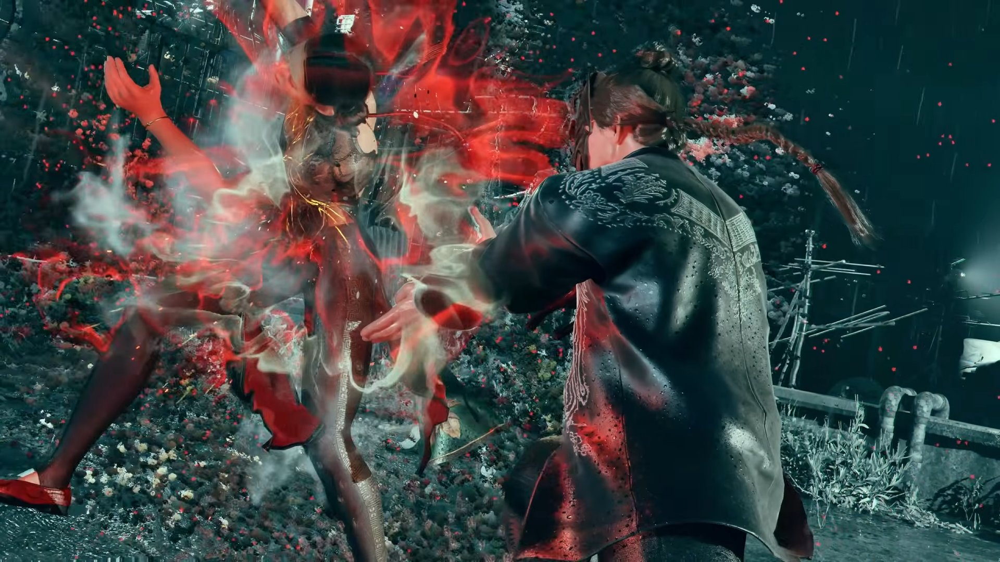
クラピカ「ワブル警護人の代わりに来た⋯⋯ここまでがワンセンテンスだ、宜しいか？」

太糸
@taito_atozusari
#今週のハンターハンター #wj31
うっふ～ん♡ハンター大好き妖怪よ～♡坊や達が欲しい画像はこれよね～♡
なんと、24cmのキジハタまで釣れてしまいました。
高級魚なので、食べるのが楽しみです。
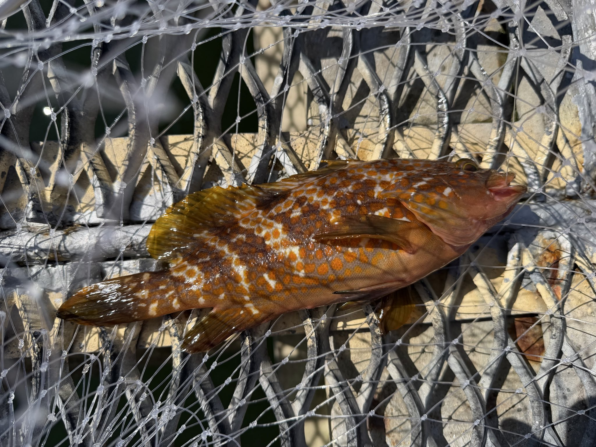
あと１日で終了！ ポケットに入る超小型プロジェクター「Pico Projector」
https://
gizmodo.jp/article/pico-p
rojector-gizmart-1/
… #BuyPR

ポケットに入る超小型プロジェクター「Pico Projector」、本日よりクラファン開始！ | ギズモード・ジャパン
絶賛クラファン中、Keychron製トラックボールを奪い取ってレビューしてやったぞ #BuyPR

絶賛クラファン中、Keychron製トラックボールを奪い取ってレビューしてやったぞ | ギズモード・ジャパン
なるせひろのりさんがリポスト
スカイダイビング用の航空機が墜落、11人全員が死亡 フランス

スカイダイビング用の航空機が墜落、11人全員が死亡 フランス
出資先のみなさんへ、月曜日はできるだけ「エージェントコーディング黙々会」の方向にもっていくので、仕事や会社方針でに詰まったら気軽にコンタクトして来てください。
テスラさんがリポスト
マネマネにちにち、次にくるマンガ大賞にノミネートされているらしいです
どうぞよろしくおねがいします

生ぬるい風はもういらない。ナノミスト×冷却プレートで「すぐ10℃」、風速9.5m/sの極冷ハンディファン #BuyPR

生ぬるい風はもういらない。ナノミスト×冷却プレートで「すぐ10℃」、風速9.5m/sの極冷ハンディファン | ギズモード・ジャパン
NTT東日本が中古EVリース参入 電池劣化で交換、丸紅など状態監視

NTT東日本系が中古EVリース参入 電池劣化で交換、丸紅とパナソニックHDが状態監視
なるせひろのりさんがリポスト

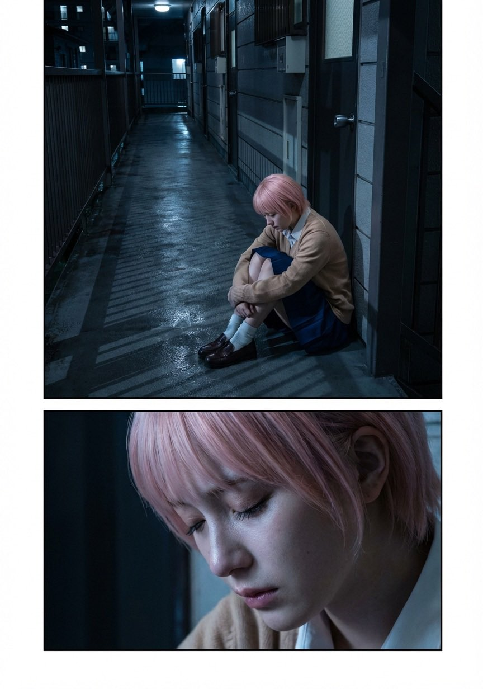
カインズが画像AIで売上UP模索、店頭でのインテリア“試着”をテスト 立ちはだかる「正確性と効率」の壁

カインズが画像AIで売上UP模索、店頭でのインテリア“試着”をテスト 立ちはだかる「正確性と効率」の壁
ダブル台風こんなことになってたんか、やば杉内
落ち着いてからも1:30あたりからまた噴出してるし、自転車の人よく逃げれたなこれ
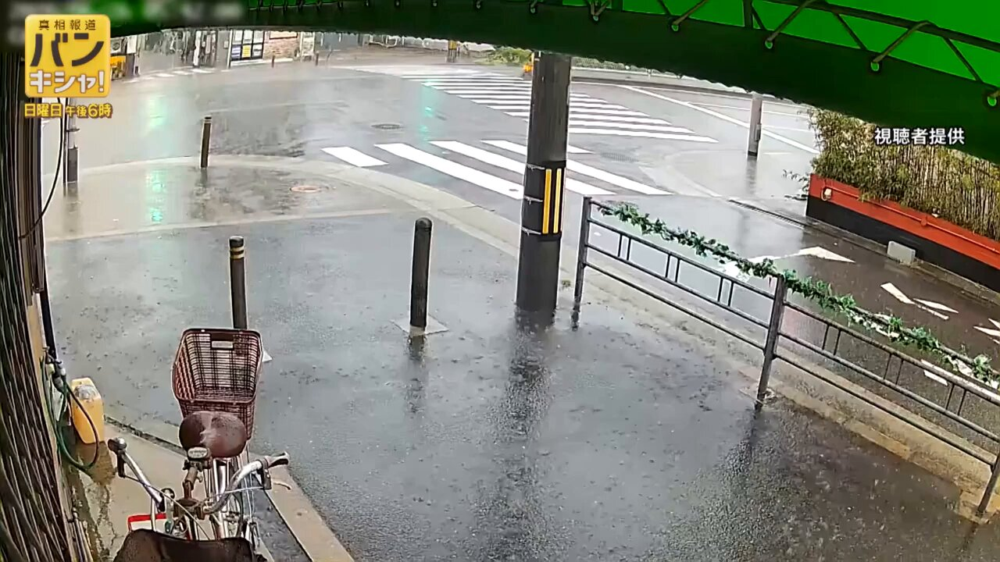
ネトウヨ「中国人留学生にはスパイが混じってる！」←これ、本当だった「警鐘を鳴らす者はネトウヨとレッテル貼りされ黙殺されてきた」 #韓国・中国

ネトウヨ「中国人留学生にはスパイが混じってる！」←これ、本当だった「警鐘を鳴らす者はネトウヨとレッテル貼りされ黙殺されてきた」 - オレ的ゲーム速報@刃の記事ページ
jin115.com
地方のZ世代「クルマ離れ」意識急速、4年で倍増47% サブスクに関心
https://
nikkei.com/article/DGXZQO
UC0433K0U6A600C2000000/?n_cid=SNSTW005&n_tw=1782653192
…
背景には、クルマ自体の価格や維持費の高さなど経済的な事情があるようです。
購入するだけでなくサブスクなどを含めた様々な選択肢が広がっています。
地方のZ世代「クルマ離れ」意識急速、4年で倍増47% サブスクに関心
「鬼滅の刃 ヒノカミ血風譚2」，Switch2版が10月29日発売決定。「無限城編 第一章」キャラクターパスがセットに
https://
4gamer.net/s/G102120.2606
26057
…
Switch2版は高解像度，60fpsに対応。無限城編 第一章の新キャラクター7体を含む全54キャラクターを使用可能
日本プロ麻雀連盟公認の麻雀向けローバックゲーミングチェアがAKRacingから発売に
https://
4gamer.net/s/G031305.2606
26054
…
すでに麻雀施設で先行導入もされており，長時間の対局でも疲れにくいと好評を博しているそうだ

最初期の『LoL』を復刻する「クラシック」モードの登場が予告！詳細はMSI決勝で発表予定
https://
gamespark.jp/article/2026/0
6/29/168553.html?utm_source=twitter&utm_medium=social&utm_content=tweet
…
NeoもAirもMac miniも…。夏のApple値上げ祭り、お値段据え置きオススメ製品はこれ！
NeoもAirもMac miniも…。夏のApple値上げ祭り、お値段据え置きオススメ製品はこれ！ | ギズモード・ジャパン
アプリ加工では戻せない光を、撮る前に整える。3種フィルターキット #BuyPR

アプリ加工では戻せない光を、撮る前に整える。3種フィルターキット | ギズモード・ジャパン
96年SNK格ゲーのリマスター『ART OF FIGHTING 龍虎の拳 外伝 R』発表！キング＆ユリ新規参戦にロールバックコード搭載
https://
gamespark.jp/article/2026/0
6/29/168552.html?utm_source=twitter&utm_medium=social&utm_content=tweet
…
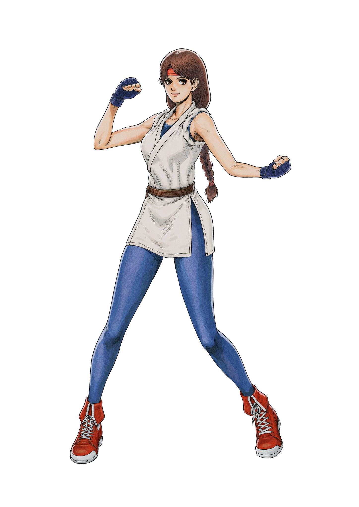
なるせひろのりさんがリポスト
事故車修理の適正化がもたらすユーザーへの影響…国交省が投じた「自研指数」への一石
https://
response.jp/article/2026/0
6/29/413304.html?utm_source=twitter&utm_medium=social&utm_content=tweet
…
#カーケア #アフターマーケット #国土交通省


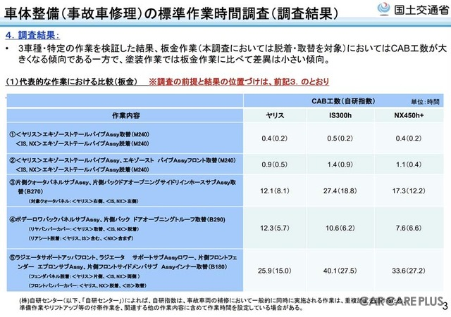
「Logi G316 X 98ゲーミングキーボード」7月16日発売へ。8Kレートとホットスワップ対応制振ガスケットマウント採用のミッドレンジ
https://
gamespark.jp/article/2026/0
6/29/168551.html?utm_source=twitter&utm_medium=social&utm_content=tweet
…
尿瓶に見えた。
モンちゃ
@lucky_nster
が食洗機に入れたせいでシェイカーが変形した使えなくはないとか言うし
確かに使えたけど笑
エンドスさんがリポスト
四宮義俊監督が描き下ろした、新ビジュアルを公開します.ᐟ
台湾や香港を皮切りに、8/12からはフランス公開、さらにドイツ、イタリア、ルーマニアなどでも上映が控えています。
『花緑青が明ける日に』を今後とも末長く応援いただけますと幸いです
いるか@心が酒びたっているんださんがリポスト
皮肉な話で、プラットフォーマーが意図的に邪悪なアルゴリズムを用いることへの対策が日本で遅れたのは、（疑似）脳科学系のアクティビストがやたら元気で、電子機器の使用そのものに麻薬並みの生化学的な依存性があると主張して、パソコン利用全般まで含めて規制しろと喧伝した結果なんですよね。
横浜の奥の方の飲み屋に入ったら、ヤンママみたいな従業員が、じゃれあいっぽく「お前は本当に××！」って放送禁止用語で罵りながら、常連客のおじさんを何発もガチ蹴りしてて、やっぱり横浜は本当に怖いなと思いました。そりゃペリーも一回、浦賀で様子見するわ。
日経平均株価、一進一退で始まる 原油相場下落は支え

日経平均株価、一進一退で始まる 原油相場下落は支え
「日本を良くしたい」「Japan is back」と言うなら、キャバクラ嬢やホストなどの風俗に憧れる若者を増やすべきでは無い。
統合失調症のワイができるお仕事
統合失調症のワイができるお仕事 : ハムスター速報
エンドスさんがリポスト
実学と芸術は両立し得る。かつては日本にもそういう経営者が存在した。その代表はもちろん堤清二＝辻井喬だ。今のニッポンの起業家は目先の利得しか考えられない。芸術を値段でしか判断出来ない。見栄でも構わないのだ。投資感覚では文化は支えられない。だが社会自体がそうなってしまっている。
ULTIMATE Comparison DJI Pocket 4Pro & Insta360 Luna Ultra
https://
youtu.be/ocJ227fsFjw?si
=ylgIxA0Sat2-66TL
…
@YouTube
より うむ･･･。私はLuna Ultra選んで正解だったかな？

The Ultimate Comparison between DJI Pocket 4Pro and Insta360 Luna U...
youtube.com
［EVO2026］「餓狼伝説 City of the Wolves」，コラボキャラクター「ケンシロウ」は本日配信開始。シーズン3は7月にスタート
https://
4gamer.net/s/G064915.2606
29005
…
ゲーム本編やシーズンパスをお得な価格で購入できるいミッドイヤーセールも開催中
エンドスさんがリポスト
国の世話にならずに民間で、というのはわからなくはない、というかその方が健全なのは確かだけど、この国はそもそも文化予算が少なく、助成制度も弱く、そしてメセナも乏しい。それは大多数の国民の芸術文化への感度の低さを反映しているわけで、そこから変えていかなくてはどうしようもないと思う。
【悲報】猛暑に苦しむヨーロッパでエアコンが緊急停止→上級国民のみエアコン使い放題だったと告発される #酷い話・事件

【悲報】猛暑に苦しむヨーロッパでエアコンが緊急停止→上級国民のみエアコン使い放題だったと告発される - オレ的ゲーム速報@刃の記事ページ
jin115.com
［EVO2026］「龍虎の拳」シリーズ3作目のリメイク作「ART OF FIGHTING 龍虎の拳 外伝R」を発表。キングとユリが参戦決定
https://
4gamer.net/s/G999901.2606
29001
…
発売日などは後日発表とのこと。ロールバックネットコードに対応し，キャラバランスの調整も施されるという
パソコンのファイル名、一括変更が便利 名称は「日付＋種類」が基本
https://
nikkei.com/article/DGXZQO
UC1618L0W6A610C2000000/?n_cid=SNSTW005&n_tw=1782651286
…
時系列で並べるため、月や日が1桁の場合でも「4」ではなく「04」と2桁で記載します。
「PowerRename」を使えば、複雑な条件でも一括変更できます。
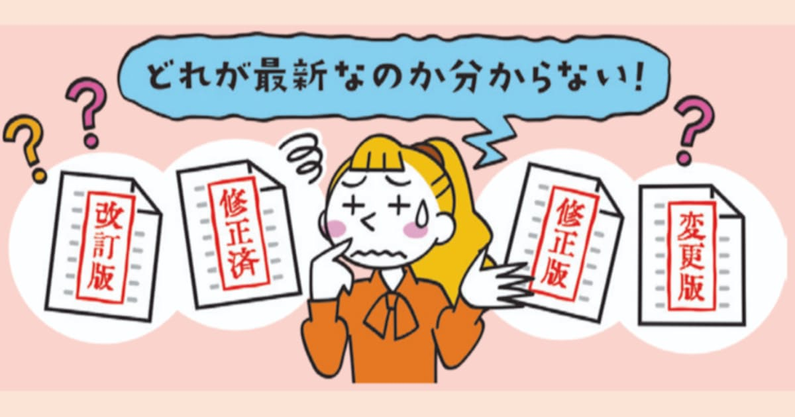
パソコンのファイル名、一括変更が便利 名称は「日付＋種類」が基本
近鉄京都駅で普通電車が脱線、けが人なし 一部区間で運転見合わせ

近鉄京都駅で普通電車が脱線、けが人なし 一部区間で運転見合わせ
［EVO2026］「ニンジャマスターズ 〜覇王忍法帖〜」，NEOGEOプレミアムセレクションとしてSteamで配信開始。リリース記念で25％オフセールを実施
https://
4gamer.net/s/G999901.2606
29002
…
ロールバックネットコードの実装により，快適なオンライン対戦を実現。プラクティスモードも追加されている
外為８時30分 円相場、下落し161円台後半 対ユーロでも下落
外為8時30分 円相場、下落し161円台後半 対ユーロでも下落
体調悪いって言ってるのに
現時点で本日の残業最高値確定で草
なぜか宇宙船ミールが展示されてる科学館があるね。

だじゅうる＠マスコットブログ
@dajudajudaju
#とある市 セレクション
よいとまけ
超長期金利、上昇一服つかの間か 積極財政の「説明責任」政府にも
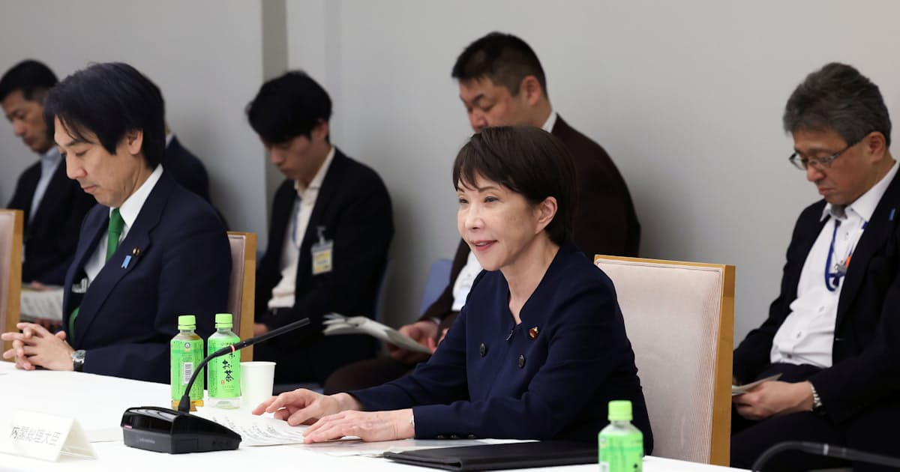
超長期金利、上昇一服つかの間か 積極財政の「説明責任」政府にも
ANAのSFCラウンジ使えないなら、プライオリティパスとLCCで良いや、、、ってなるよね。
Galaxy S27「Pro」モデルは、最高位機種でしか使えないあの機能を追加？
Galaxy S27「Pro」モデルは、最高位機種でしか使えないあの機能を追加？ | ギズモード・ジャパン
「財布は小さいほど良い」は本当か？ 長財布だけどすっきりするこれで長年のモヤモヤが解消した話 #BuyPR
「財布は小さいほど良い」は本当か？ 長財布だけどすっきりするこれで長年のモヤモヤが解消した話 | ギズモード・ジャパン
欧州熱波、連日の最高更新 ドイツは41.7度・チェコも40度超
欧州熱波、連日の最高更新 ドイツは41.7度・チェコも40度超
『ケロロ軍曹』新作映画、賛否招いたゲスト陣コメントを無予告で削除 指摘相次ぎ火に油を注ぐ結果に(オタク総研)
#Yahooニュース

『ケロロ軍曹』新作映画、賛否招いたゲスト陣コメントを無予告で削除 指摘相次ぎ火に油を注ぐ結果に（オタク総研） - Yahoo!ニュース
大きなスズキが釣れました！
66.8cm、2.1kgの紛れもないスズキサイズで、久々の自己記録更新です。
海づりを始めて1年ですが、少しづつ大物を釣るコツが分かってきた気がします。

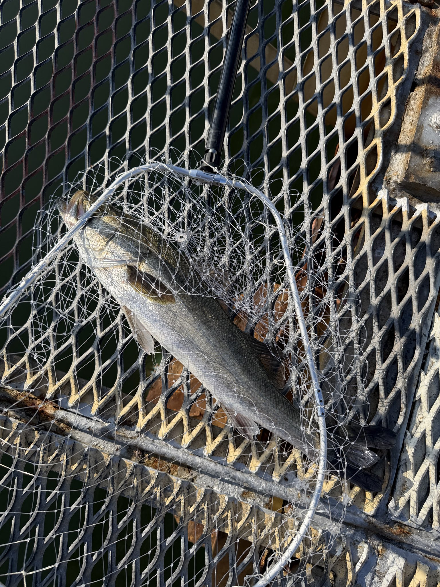
本日のお宿でした
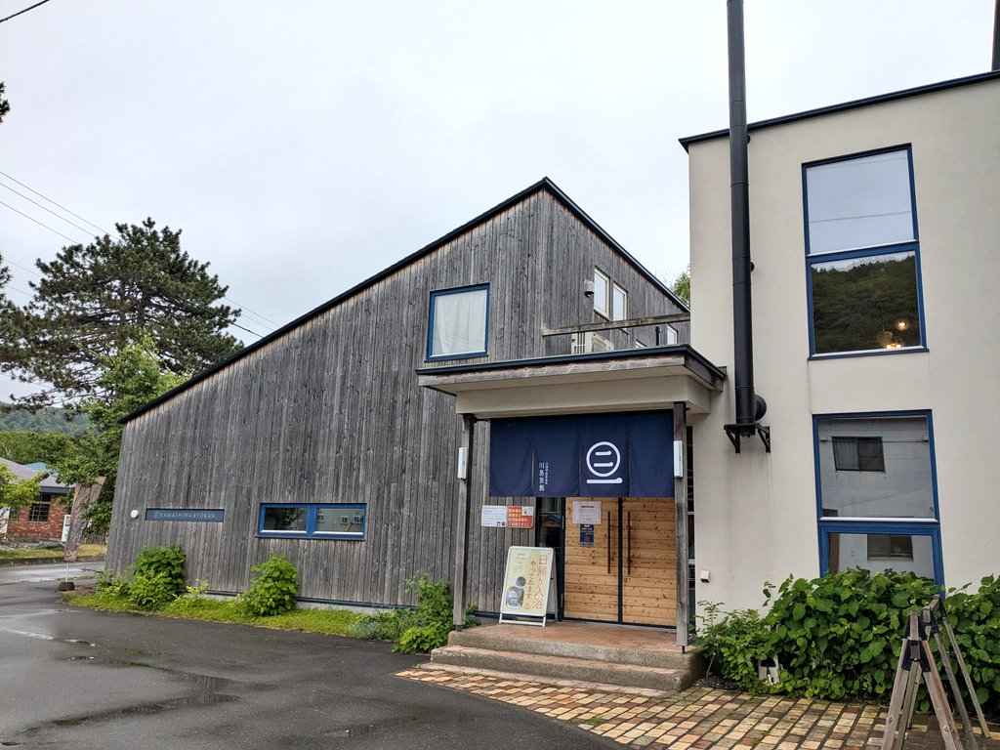

通勤中
女性・大卒、建設現場に新風 「多様なアイデア」「ムダな業務可視化」
女性・大卒、建設現場に新風 「多様なアイデア」「ムダな業務可視化」
「目立たない形で配信済み」ってあるんだ（Macのメッセージアプリ）
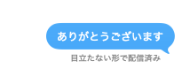
いろいろ言いたいことありますがひまてん！が令和のニセコイにならなかったのは素直に褒めたいです。唯一最終話で許せないのは、僕がヒロインレースで応援していた爆乳後輩グラドルJKが振られた後の未来でAV落ち寸前みたいな水着を着させられてることです

令和のニセコイと呼ばれ続けたひまてん！、令和のニセコイの呼び声をひっくり返してほのてん！で終わらせたこと、最終ページの次がこれじゃなかったことを盛大に評価したいと思います。いや本当に良かった正直40%くらい可能性あると思ってましたから

一昨日、昨日は散々Dave The Diverの新作DLCをプレイし、なんとかクリア。
ついでにDLCの新しい魚もコンプリートしたので、やっとおちついた生活に戻れると思う。

なるせひろのりさんがリポスト
いや、これは普通に怖すぎる…。
他人の席に勝手に座って注文して食べるとか意味が分からんし、警察呼ばれて当然の案件。こんなの遭遇したらパニックになるわ。
REAL KHALEB
@Ekwuojo_khaleb
この先の一言で全部変わるやつじゃん…。
既婚相手に突っ込む時点で地雷臭しかしない。続きを聞くのが怖い。
犬や猫の譲渡、マッチング利用者のトラブル絶えず 「やっぱり返して」
犬や猫の譲渡、マッチング利用者のトラブル絶えず 「やっぱり返して」
オタク起床
水金地火木土天アーメン
8002 4692
3563 9969
なるせひろのりさんがリポスト
『バーチャファイター クロスロード』チャイナ服を身にまとう謎の武術使い「バクナワ・キラー」のアナウンストレーラーが公開
https://
news.denfaminicogamer.jp/news/260629f
ヴィラサパラで起こる格闘家を狙った“連続襲撃事件”の犯人とされる人物。映像では正体を見たパイ・チェンが愕然とするシーンも。2027年に発売予定

谷崎潤一郎の「陰影礼賛」から、人間哲学やさらには世界をよく見るための方法について考えました。Voicy。↓

「陰影礼賛」という現代に通じる哲学 | 佐々木俊尚「毎朝の思考」/ Voicy - 音声プラットフォーム

「陰影礼賛」という現代に通じる哲学 | 佐々木俊尚「毎朝の思考」/ Voicy - 音声プラットフォーム
メモリ消費の大手ではあると思うけど、ここ数年、スマホで何か先陣を切ったか、新しい体験をもたらしたか、技術的に何かやったか？とおまいかえすと、後追いのヘッドマウントデバイスで自爆した程度で、日用品だけど、感覚的にはゴミ、だなと。
夏になると飲みたくなるカルピスにまつわる話がおもしろい。1919年に生まれたカルピスの乳酸菌と酵母は、寿命が尽きる前に一部を選別し、新鮮な生乳で再び培養。一度も途切れないで来たのは、創業時にどう作ったかが伝わっておらず、一度失ったら二度とあの味を再現できないからとか。↓

原液は100年継ぎ足し？ 「カルピス®」の謎を追ううちにたどり着いた“祭りの存在” | となりのカインズさん
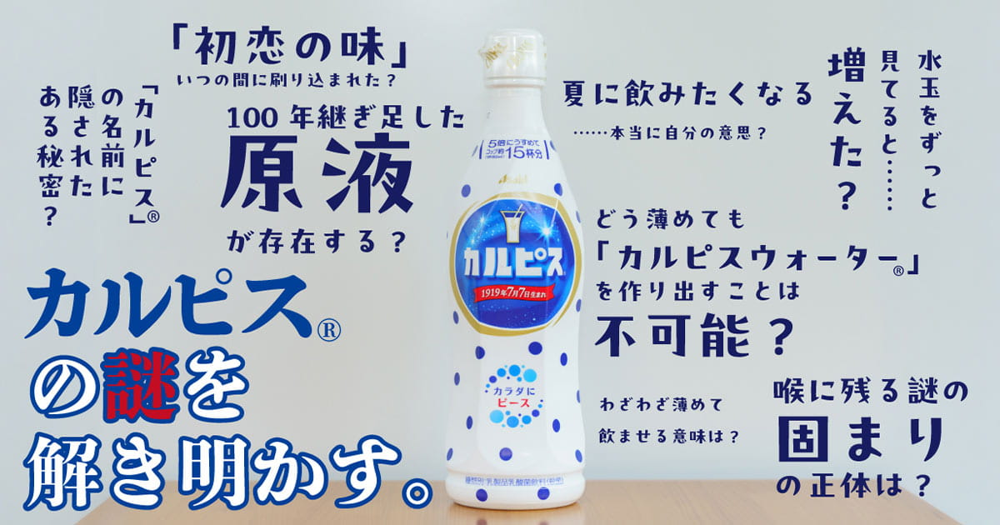
原液は100年継ぎ足し？ 「カルピス®」の謎を追ううちにたどり着いた“祭りの存在” | となりのカインズさん
だから、エバンジェリストとして、価値が高い、という話だと思うけど、もしかしてそうではないのか？みたいな、常識はグループが違えば異なるとはいえ、そんな商品を扱ってる部署なら、感覚は分かってないと仕事にならなさそうだけど
ナルC
@GOROman
PFUさん訪問して言われたこと
「このGOROmanという人をHHKBエバンジェリストに推薦(猫山課長など)がきてるんですけど、発売日に分解してバラバラにするからなあ」 x.com/goroman/status…
なるせひろのりさんがリポスト
7月31日まであと32日間しかありませんが、HP上ではモデルY・YL・3の全車種で7月納車ができるみたいですよ。
4〜5月に注文した人の納車が間に合っていないのに不思議ですね。7月末もまた同じことを繰り返すんですか？
早くてお盆前、実際には9月納車だと思いますよ。(YLは9月も怪しい)


イランにも心を配るこういう素早い対応、とても大事。イラン、レバノン、パレスチナの人道状況悪化を受けて、合計1500万ドルの緊急無償資金協力を実施。このうちイランに対しては、国際機関を通じて生活必需品や食料の配布などおよそ16億円相当の人道支援をおこなう。↓
政府、イランに約16億円の緊急無償資金協力を決定 2月の米イスラエルによる攻撃後初めて（TBS NEWS DIG Powered by JNN） - Yahoo!ニュース

政府、イランに約16億円の緊急無償資金協力を決定 2月の米イスラエルによる攻撃後初めて（TBS NEWS DIG Powered by JNN） - Yahoo!ニュース
中国で交通事故に遭ったらこうなった デジタル社会、身をもって体感
中国で交通事故に遭ったらこうなった デジタル社会、身をもって体感
「人が死んでいっている」…エアコンをタブー視してきた欧州で規制緩和の動き（中央日報日本語版） - Yahoo!ニュース
「人が死んでいっている」…エアコンをタブー視してきた欧州で規制緩和の動き（中央日報日本語版） - Yahoo!ニュース
熱波が欧州を襲ってますが、フランスの住宅のエアコン普及率はわずか24％。「人工的な風は健康を害するという認識や、エアコンは地球温暖化を助長するという環境意識、さらに冷房を米国型の過剰消費の象徴とみなす風潮などが重なった結果」とか。昭和時代の老人みたいなこと言ってる……というぬるい感

カプコンの名作「戦場の狼」(海外名 Commando)を、レトロPC「Amiga 500」へ勝手移植!!
現在はまだ開発初期段階の為、BGMは実装はされていないが、それでも凄い完成度ではある事から、今後のバージョンアップでには期待せざる得ないぞッッ!!
https://
indieretronews.com/2026/06/comman
do-1980s-military-shooter-by.html#more
…
横浜と川崎の境目の横浜寄り。

株式会社ゼンリン
@ZENRIN_official
おはようございます！
今日の #クイズ空から見たら は久しぶりの夜景問題
高速道路に滑走路、川やライトアップされた施設まで…盛りだくさんな景色です。ここはどこでしょう～
同志社国際高校の卒業生と思われる方が匿名で書いた記事。揺れる心情がすごく心にぐっと来る。一読をおすすめ。↓
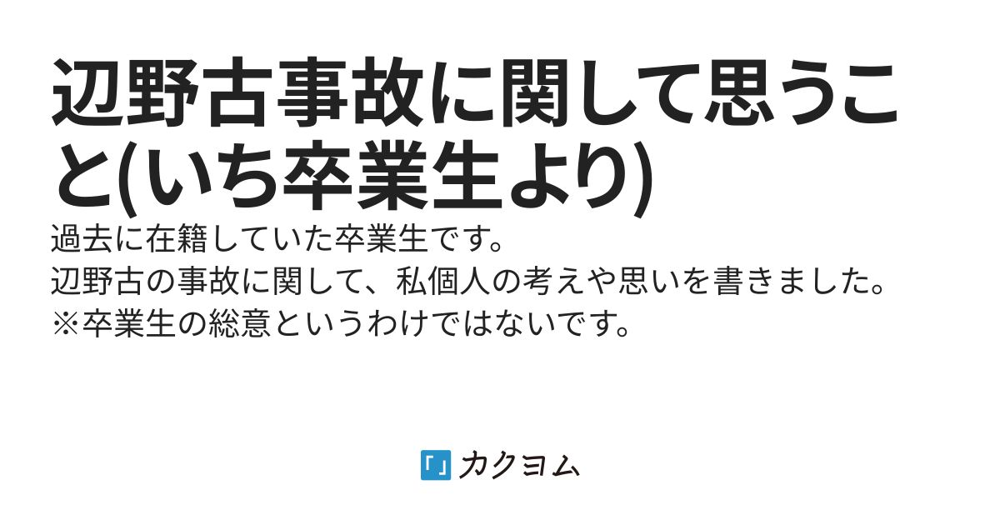
辺野古事故に関して、いち卒業生が感じていること - 辺野古事故に関して思うこと(いち卒業生より)（@mukashinokokusaisei） - カクヨム

辺野古事故に関して、いち卒業生が感じていること - 辺野古事故に関して思うこと(いち卒業生より)（@mukashinokokusaisei） - カクヨム
クライアントに「長期休暇なのでいません」とメール打って以降、受信BOX見てません
なお南極旅行より長い日程です
「カンピロは甘く考えてると痛い目に遭う」客の目の前で丸鶏をさばくという焼鳥店に本職の肉屋や医クラが警告→黒いゴム手袋をしている点も危ない？
「カンピロは甘く考えてると痛い目に遭う」客の目の前で丸鶏をさばくという焼鳥店に本職の肉屋や医クラが警告→黒いゴム手袋をしている点も危ない？
客の目の前で黒い手袋して丸鶏をさばく焼き鳥の店。医クラからカンピロバクター汚染とギランバレー罹患の危険性を指摘する声が。完全なる個人的印象ですが、黒い調理用手袋ってさいきんある種の店のコードになってる気がする……。↓
動画サービス「YouTube」を、ゲームボーイカラーの自作カートリッジで実機再生するビルダーが登場!!
専用カートリッジにWi-Fi機能を搭載し、PCで取得→変換したYouTube動画をゲームボーイカラー実機へストリーミング表示する仕様なンだッッ!!
https://
github.com/ThroatyMumbo/G
BCYouTube
…
29歳男性、イタメシ食べて号泣｜AmanozyakuLab.

29歳男性、イタメシ食べて号泣｜AmanozyakuLab.
日ごろのタイパから離れて、鶴岡の有名店アルケッチャーノを訪れる話。単なるグルメレポートではない、静かに心に刺さる良い記事。↓


AI系の話、質を担保する業務は、それはそれ、ただllmでコストと必要な時間が3桁変われば、社会構造のレベルで前提を変えて適応していくものしか、残らないわけで。faxが、長く残ったけど、消えていってるみたいに？
外部開発にすると、会社の壁と組織の壁で、要望を出して実装されるまで月単位。中の開発者に負担をかけない仕組みとして、理解できたけど、llmが秒で作業を終える今は、その仕組みは、化石といわれるべき、ものだろうなと。
加納しげる
@kanoushigeru01
勘違いしてる人多いけどAIで業務システムを内製できる時代になってもSIerの仕事はなくならないから。「内製＝無料」ではないからね、AIを使っても人件費などもろもろのコストはかかるから。しかも品質を商用レベルまで持っていくのは想像以上に大変なんだよ。だから企業は「内製した場合」と「外注した x.com/HardModeDE/sta…
本来はエサをいれるカゴに魚がかかったのか…。

野楽Gotta
@noragotta
友人がサビキで奇跡おこした。
これ、網・カゴを使った違法な漁扱いになるんだろうか…
階層都市断片集 - つくみず / 第1話 原子力潜水艦 | くらげバンチ
https://
buff.ly/qqL9hi3

核時代の原子力潜水艦を舞台にした映画って冷戦のころにたくさんあった。この漫画はその舞台をまったく別の視点から描いていて味わい深い。しみじみと明るい終末。↓

新卒一括採用はオワコンか 強まる即戦力志向、中途比率は5割超え
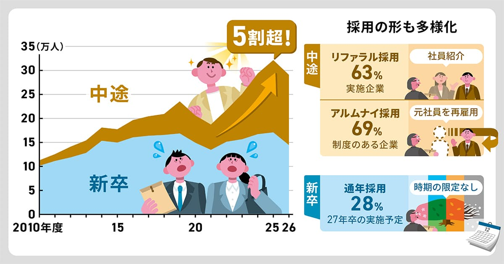
新卒一括採用はオワコンか 強まる即戦力志向、中途比率は5割超え
あれ、エアタグどこやったっけ…
めっちゃブラックで面白かった＞ウミガメのスープ。↓
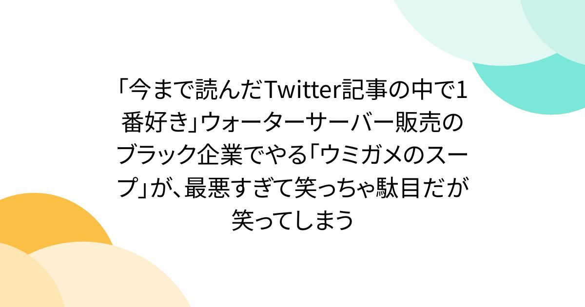
「今まで読んだTwitter記事の中で1番好き」ウォーターサーバー販売のブラック企業でやる「ウミガメのスープ」が、最悪すぎて笑っちゃ駄目だが笑ってしまう

「今まで読んだTwitter記事の中で1番好き」ウォーターサーバー販売のブラック企業でやる「ウミガメのスープ」が、最悪すぎて笑っちゃ駄目だが笑ってしまう
AirMini誰かプレゼントして
日東電工、最大240万円の転勤支援金を導入 若手の多様な経験後押し
https://
nikkei.com/article/DGXZQO
UF136730T10C26A5000000/?n_cid=SNSTW005&n_tw=1782641936
…
一般社員が対象で、社内の等級に関係なく月5万円を最大4年支給します。転勤を敬遠する傾向が強まるなか、社員が転勤に前向きに取り組める環境づくりを進めます。

日東電工、最大240万円の転勤支援金を導入 若手の多様な経験後押し
18日間のアメリカ旅行のパッキングしてるんだけど、あまりにも荷物が多すぎてCPAPが入らない
自民党・中曽根氏、愛子さまにとんでもない失言で批判殺到・大炎上 #炎上
自民党・中曽根氏、愛子さまにとんでもない失言で批判殺到・大炎上 - オレ的ゲーム速報@刃の記事ページ
jin115.com
おはようございます。
【今週のモチベ】「リズム天国 ミラクルスターズ」や「がんばれゴエモン大集合！」が発売される 2026年6月29日〜7月5日
https://
4gamer.net/s/G095479.2606
28004
…
「リズム天国 ミラクルスターズ」には80種類以上のミニゲームを収録。魔法使いとなって冒険するRPG風モード「ビートスペル」も見どころの1つだ。

【短期連載】男色蹴球日記〜世界大会とサカつく2026〜（2）：「日本サッカーは本当に強くなった」
https://
4gamer.net/s/G091522.2606
23029
…
ダイジェストありとはいえ，ワールドカップ全試合を観ているというディーノ選手。試合の合間やハーフタイムには「サカつく2026」をプレイして，充実の毎日だそうです。
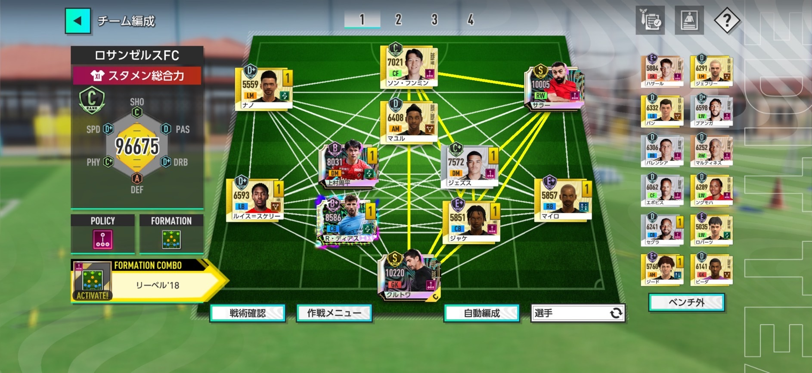
なるせひろのりさんがリポスト
キノコの栄養素って誤差に等しいと認識しているので、すなわち「キノコなんてものを食べられる余裕のある人」は金銭的にも精神的にも余裕があり、うつ病になりにくい、という可能性が結構あるなぁ、と思いました。
ナゾロジー@科学ニュースメディア
@NazologyInfo
キノコをよく食べると「うつ病リスクが半減」する可能性
https://
nazology.kusuguru.co.jp/archives/98199
米PSUの先行研究で、キノコをよく食べる人は、そうでない人に比べ、うつ病発症率が半減していることが判明。なぜキノコは「心の健康」にいいのでしょうか？
朝食
鮭節や利尻昆布を使ったフレーバーバターをバター醤油ご飯にして食べることが推奨されている
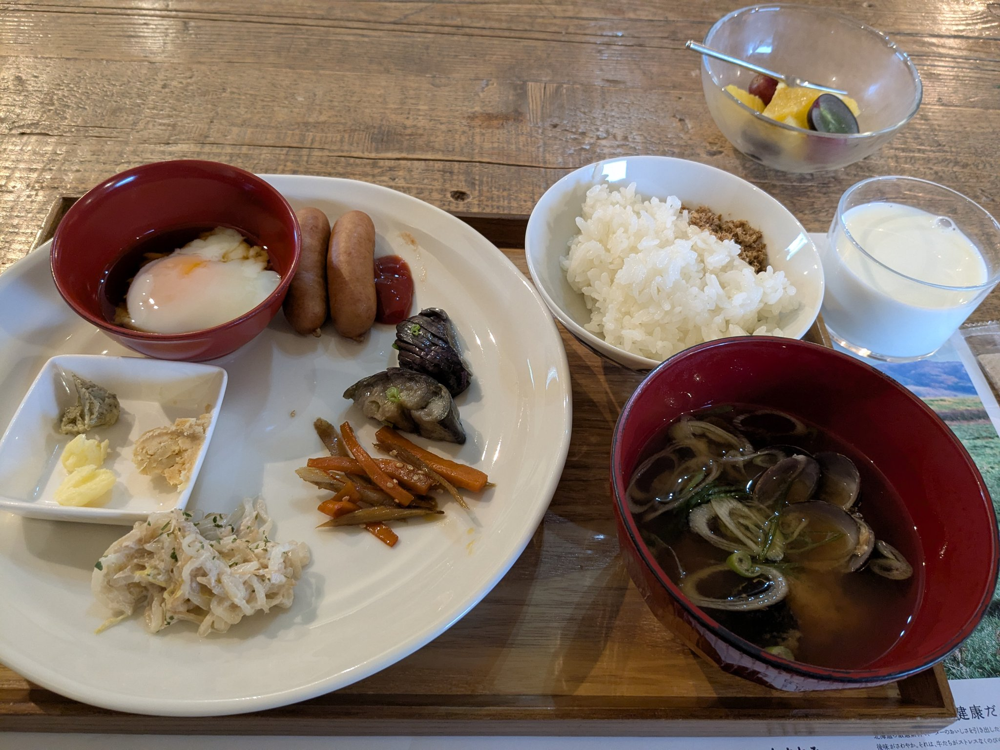
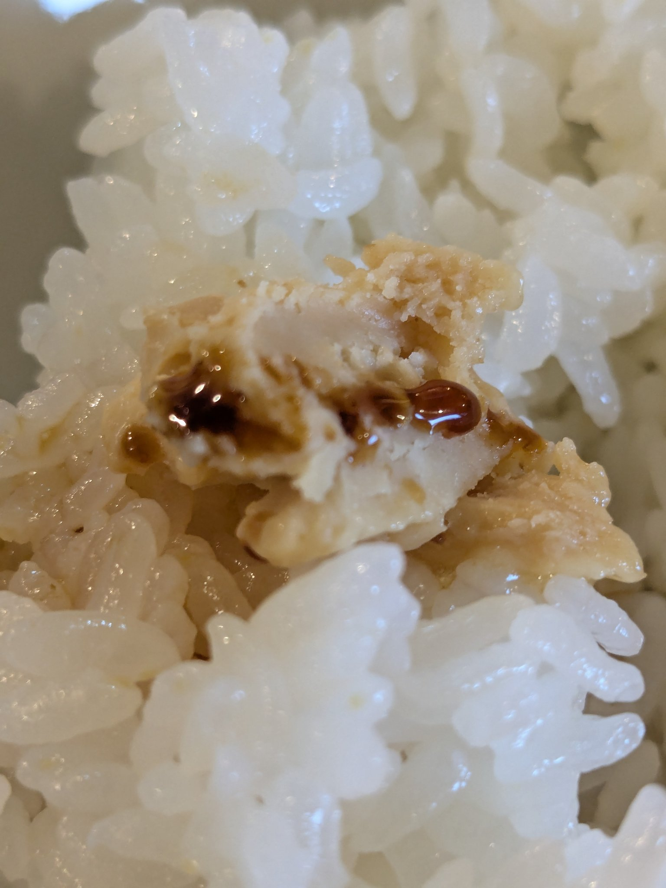
Banの開発者の方は、アンソロピック勤めになって年収がすごいことに、見たいのをみたけど、開発者はコードを書くものなのか、linuxみたいにコードを通して世界を支えるものなのか。
じっと手を見ちゃいますね。
Publickey
@publickey
ブログ書きました： Deno 2.9正式リリース。起動が2倍速、消費メモリは半分に。WebViewを用いたデスクトップアプリが作れる「Deno Desktop」など
https://
publickey1.jp/blog/26/deno_2
92webviewdeno_desktop.html
…
まだmapしか見てないけど、anemoiの舞台に離島がある時点で完璧な聖地巡礼本を出すのは無理だと確信に変わった
冬コミどうしよう…不完全なものでも出すことに意義があるか
ハム速を見ているらしいAdoさん「本当にハムスターを飼いたい ハムスターを毎日触りたい」ハムスター画像が殺到する
ハム速を見ているらしいAdoさん「本当にハムスターを飼いたい ハムスターを毎日触りたい」ハムスター画像が殺到する : ハムスター速報
高いから買ってもらえない、になるなら、ほんとハードウェアはゴミ、ですね。高かろうが、それが素材の原価から計算してめちゃくちゃ高かろうが、そこが出すものなら売れる、ゆえの利益率が、ブランド、なのでしょうから。
センチリメイクやるのか
枝野幸男氏、新党の見方否定 政治団体「立憲ネット」設立巡り
枝野幸男氏、新党の見方否定 政治団体「立憲ネット」設立巡り
マイネームイズさんがリポスト
こちらのマップを参考に聖地巡礼してきました！
MV通りに撮るならこの向きになります行く方の参考になれば嬉しいです
あと境界線や色味の調整をAIにお願いしちゃったため、
一部MVと雰囲気が異なる箇所があります...ｽﾐﾏｾﾝ…..ﾂｲｰﾄｺﾞﾆｷﾂﾞｲﾀ...元画像載せておきます
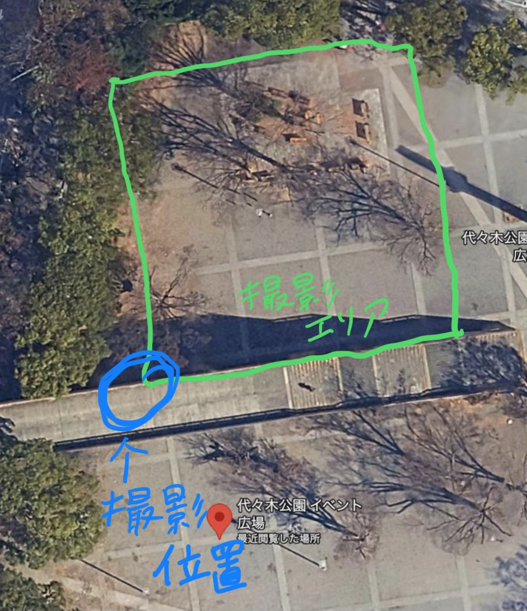
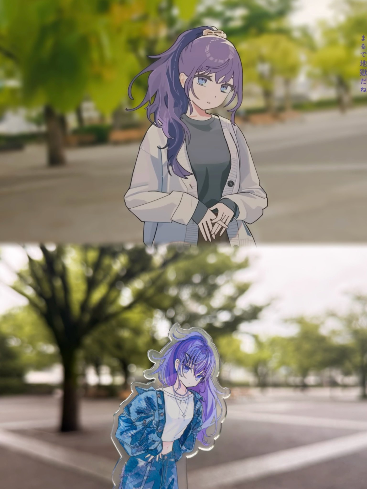

マイネームイズ
@MyNameIs_smrn
プロセカの渋谷聖地巡礼マップ（2026年版）を作成しました！
花結びイベの咲希や「旅に帰る」MVなど、最近登場した聖地も記載しました！
記載が細かいのでタップ推奨です！！
貝さんさんさんがリポスト
これ「やってもいいのかな、ここのパーツ歪んでるし、でもカット内で統一されてないし……」ってなったりするんだけど、先日「総作監でも設定と違ってたりしたら返してくれていいし直せそうなら直していい」とお墨付きをもらいまして、びくびくしながら手を付けたりしてます。
佐藤恵子(よこさく)
@keianisato
力のある動検さんは、
総作画監督修の後でも
構わず直してなぁ。
スタジオ所属の動検さんならではの
だけどね。
…パッと聞くとおかしいでしょw
でもそうやってフィルムのクオリティ
維持されているんですよw
撮影さんとかラッシュ後に
作画上がりの
其の辺にいた監督や演出が直し…w
#アニメーター
京セラ、部品事業に6500億円投資 AI半導体向け売上高3倍へ
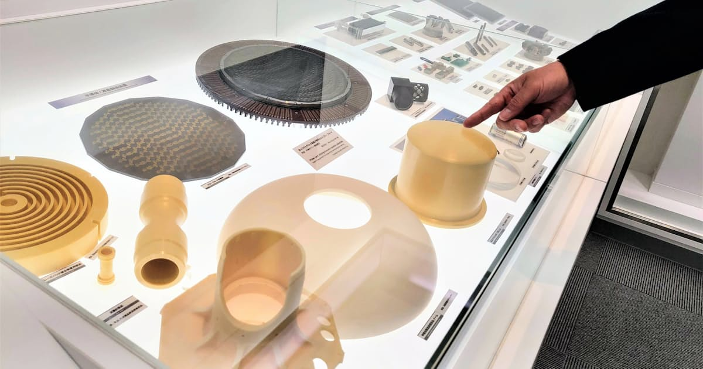
京セラ、部品事業に6500億円投資 AI半導体向け売上高3倍へ
日経平均、米半導体株安の売りと短期筋の買い交錯（先読み株式相場）

日経平均、米半導体株安の売りと短期筋の買い交錯（先読み株式相場）
ヨーロッパ熱波で1300人超死亡 WHO事務局長、各国に対策促す
https://
nikkei.com/article/DGXZQO
GR2833P0Y6A620C2000000/?n_cid=SNSTW005&n_tw=1782685351
…
フランスでは平時より著しく死亡数が増加する「超過死亡」が6月24日以降で約1000人に。
隣国のスペインでも猛暑によるとみられる死亡者数が327人に上るといいます。
欧州熱波で1300人超死亡 WHO事務局長、各国に対策促す
脱ナフサでバイオ素材支援 経産省、補助拡大へ基金積み増し検討
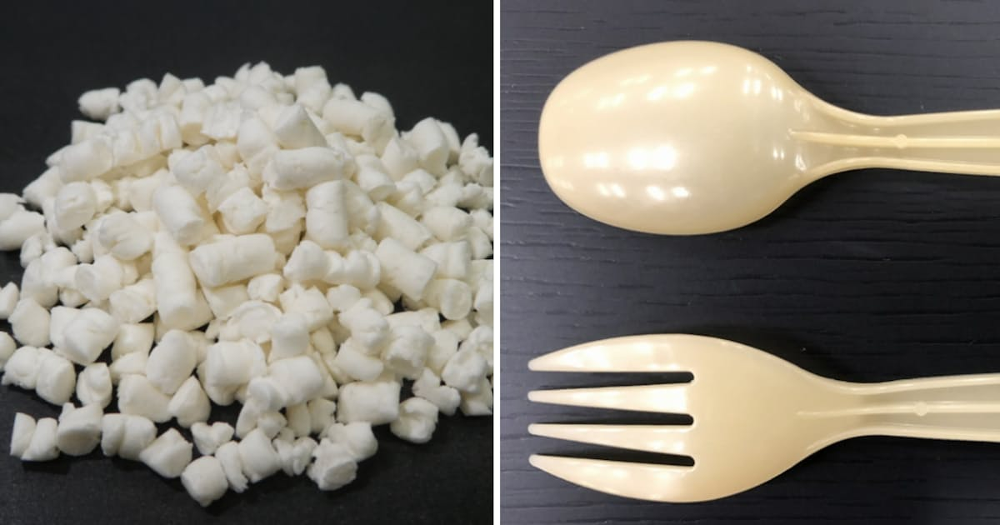
脱ナフサでバイオ素材支援 経産省、補助拡大へ基金積み増し検討
朝から東京出張なのに近鉄脱線騒ぎで京都駅までタクシー使わざるを得なくなるなど。
なるせひろのりさんがリポスト
新型キックスの『プロパイロット』
驚愕の進化の全容。
★カメラの進化
52度から120度へ広角化。
約2倍の画角。
約6倍の解像度。
★AIの採用
車線認識にプロパイロット2.0で採用しているAIが導入される。道路全体から走行ラインを考え、自己判断できるようになった。

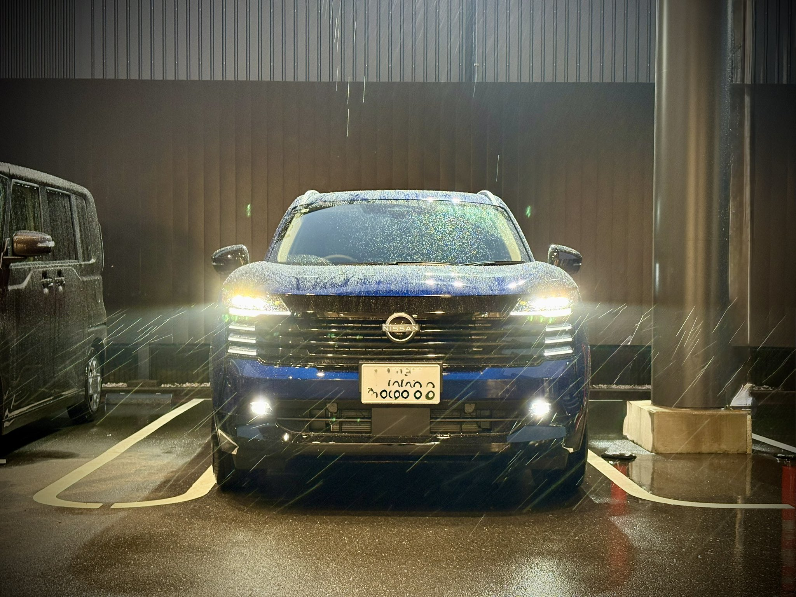
ぐっち
@gucci1111817
明日、
重大発表をします。
技術の日産を思い知れ。 x.com/gucci1111817/s…
Haruhiko Okumuraさんがリポスト
ＡＩ節電へ「感謝控える」教育 道徳教材見直し提言
https://
kyoko-np.net/2026062901.html

ここまで暑いのか…

Felix
@_aufgegleist
今日、エッセンで世界初の路面電車用廃棄物山が開業しました。
AI系でキオクシアとかイケイケだけど、今のお仕事の関連のところはお金がもうなさそうで、特に外でお仕事をもらう立場なところは真っ先に削減対象で、来年はもうお仕事ないかも？みたいな。今できることは、今のお仕事を頑張って、次につながる可能性を育てましょう。
ご近所で、ヘーベルハイムのお家が建設中で、普通のコンクリートブロックで塀を作るんだって見てたら、加飾されていい感じの塀になってました。ぬいぐるみも、中身はどれもワタですものね。左官職人さんの腕って、こういうものなんだなって。
はGSで仕事を果たした。
お疲れ様でした
Fabrizio Romano
@FabrizioRomano
公式：南アフリカは2026年ワールドカップから脱落。
円安・物価高を止める方法は三つ。
・政策金利を上げる→高市政権が抑制
・為替介入しまくる→米国大統領激おこ
・他国より景気が良くなる
円安・物価高を止めるには、景気を良くする以外なくなりました。
戦争経済でもやるのかね？
47NEWS
@47news_official
【速報】政府、骨太方針で日銀けん制へ
https://
47news.jp/14538072.html?
utm_source=twitter&utm_medium=social&utm_campaign=api
…
「鉄拳8」，ボブのゲームプレイトレイラーを公開。スピード＆ウェイトの代名詞が8月25日に参戦
https://
4gamer.net/s/G065722.2606
29004
…
ロジャーJr.もチラ見せ。新規トレイラーは10月11日のEVOフランスで公開予定だ
逆にすごい。大手コンサル作「AIのすごさを証明する報告書」がハルシネーションだらけ
逆にすごい。大手コンサル作「AIのすごさを証明する報告書」がハルシネーションだらけ | ギズモード・ジャパン
開催国カナダ、南アフリカとの決勝T1回戦制し16強一番乗り サッカーW杯
https://
nikkei.com/article/DGXZQO
DH281YA0Y6A620C2000000/?n_cid=SNSTW005&n_tw=1782684315
…
初めて決勝トーナメントに進出したチーム同士の対戦。
後半追加タイムにクロスのこぼれ球をエウスタキオが沈めました。
#FIFAワールドカップ
開催国カナダ、南アとの決勝T1回戦制し16強一番乗り サッカーW杯
鎖錠が切れたのか、先端が密着してなくて割り出したのか、なんか気になる。＞RP
【動画あり】スクーターの女性、スマホを見ながら運転して、ノーブレーキで車に突っ込む→その後、マジで最悪すぎる展開に・・・ #酷い話・事件
【動画あり】スクーターの女性、スマホを見ながら運転して、ノーブレーキで車に突っ込む→その後、マジで最悪すぎる展開に・・・ - オレ的ゲーム速報@刃の記事ページ
jin115.com
コシアカツバメは「とっくり型の巣」を作る
おばあちゃんちの軒下に“見たことない”形のツバメの巣 驚きの姿に「一級建築士」「とても芸術的」
（記事URLはリプから）

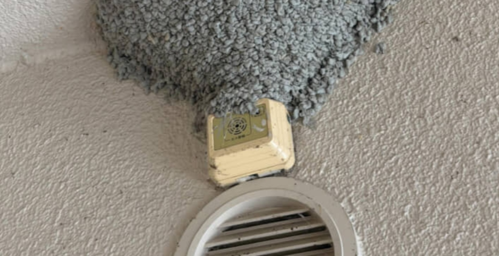
おばあちゃんちの軒下に“見たことない”形のツバメの巣 驚きの姿に「一級建築士」「とても芸術的」（1/3） | その他生き物 ねとらぼ
4Gamerの1週間を振り返る「Weekly 4Gamer」，2026年6月22日〜6月28日
https://
4gamer.net/s/G004099.2606
28005
…
今週は，ステキなプレゼントがもらえる，その名も「プレゼントコーナー」を用意しています。芸がないなあ。

トウカイのクマさんがリポスト

トウカイのクマさんがリポスト
今週の長月さん(6/29-7/5)
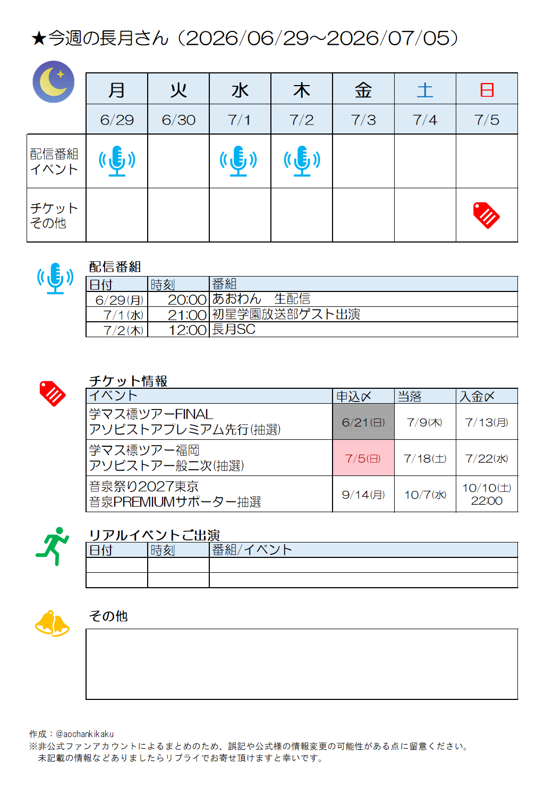
［EVO2026］「VIRTUA FIGHTER CROSSROADS」，仮面の闘士「バクナワ・キラー」のアナウンストレイラーを公開
https://
4gamer.net/s/G086589.2606
29003
…
映像では，パイ・チェンが素顔を見て驚いている様子を確認できるが，正体は謎のままだ

ファストリ、取引先の違法就労厳しく監査 700工場で欧州規制対応
https://
nikkei.com/article/DGXZQO
UC280S70Y6A420C2000000/?n_cid=SNSTW005&n_tw=1782637462
…
年1回をめどに、工場の衛生環境や安全性、賃金や労働時間などの基準を守っているか監査しています。今回、各国・地域の実情に応じた独自の項目を導入しました。

ファストリ、取引先の違法就労厳しく監査 700工場で欧州規制対応
米イラン、攻撃停止で合意と報道 30日にカタールで協議
米イラン、攻撃停止で合意と報道 30日にカタールで協議
京都駅内で近鉄脱線か
anemoi / key 聖地巡礼その37
#anemoi
#アネモイ
#聖地巡礼


山人@耳すま
@yamabito0
2026.6.26 12:26
anemoi 聖地巡礼
初回特典CDのジャケットイラストモデルです。
オトンルイ風車発電所です。歩いて行ける場所(距離)ではありません。車必要です。
#anemoi
#幌延町
#聖地巡礼
星野リゾート流採用のすすめ 「新卒」と「一括」を分離、主体性育む
https://
nikkei.com/article/DGXZQO
DK251IY0V20C26A6000000/?n_cid=SNSTW005&n_tw=1782637925
…
選考日程や入社時期は、学生自身が主体的に決めます。
期間の縛りがなくなることで、この仕事は一生をかけるに値するか、学生は見極められます。
星野リゾート流採用のすすめ 「新卒」と「一括」を分離、主体性育む
anemoi / key 聖地巡礼その36
#anemoi
#アネモイ
#聖地巡礼
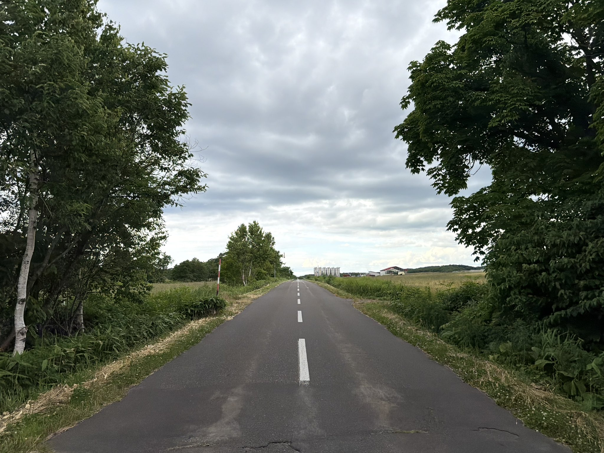


山人@耳すま
@yamabito0
2026.6.26 16:10
anemoi 聖地巡礼
ここでは無いかと言われている、、、
#anemoi
#苫前町
#聖地巡礼
日本経済新聞 電子版（日経電子版）さんがリポスト
アンソロピック「Fable」週内に提供再開か 背後に迫る中国AI

アンソロピック「Fable」週内に提供再開か 背後に迫る中国AI
＞ω＜さんがリポスト
確かにもう時代が変わって、半導体の顧客の中ではすでにAppleはモブなんだと思う。もうメインストリームじゃない。
#Apple #半導体 #DRAM #NAND
パウロ
@paurooteri
Appleがメモリの最大顧客と勘違いしておる人が多すぎなんですよね
もう時代が変わってしまった
なるせひろのりさんがリポスト
麻薬取締法違反の疑いで逮捕された
"今日好き"出演の人気グラドル「三野宮鈴(22)」、
先に逮捕された「青木容疑者(28)」と
交際してた模様
ガンギマリのこんな男とよく付き合えるなw
#三野宮鈴

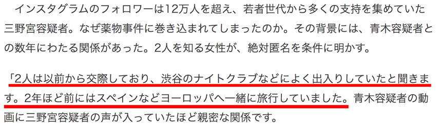

ポン☆潤々さんがリポスト
【速報 JUST IN 】近鉄京都線 京都駅の構内で脱線事故 “けが人の情報なし”
https://
news.web.nhk/newsweb/na/na-
k10015163381000
… #nhk_news
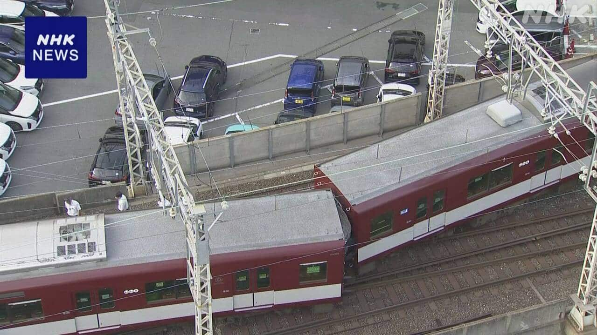
近鉄京都線 京都駅の構内で脱線事故 “けが人の情報なし” | NHKニュース
MICHEE-N（ミッチー・Ｎ）さんがリポスト
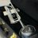
近鉄京都線脱線ってどうやったらこんなことなるん

エンドスさんがリポスト
ゴブラン学生による2026年アヌシー・フェスティバル向けオープニングシーケンスにおける、映画（そして今敏への）への素晴らしいトリビュート。
https://
youtube.com/watch?v=w7g1SZ
HcLMY
…
ミリシタ9周年おめでとうございます。
このイベントは「もがみきゅう」であってますかね？

むくり。
平均72歳を派遣する高齢社 モットーは「は・げ・あ・た・ま」
平均72歳を派遣する高齢社 モットーは「は・げ・あ・た・ま」
日本経済新聞 電子版（日経電子版）さんがリポスト
超株高で高級ブランド強気値上げ グランドセイコーは1265万円
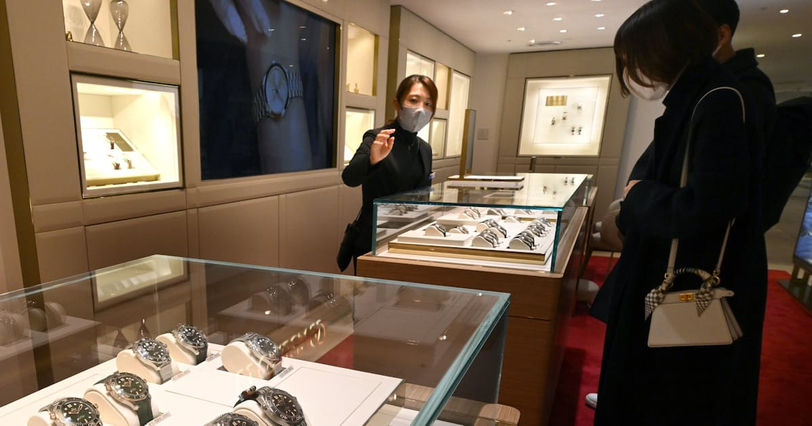
超株高で高級ブランド強気値上げ グランドセイコーは1265万円
日本経済新聞 電子版（日経電子版）さんがリポスト
トヨタ、車両仕様書をAIで統一 工程3割減らし国内生産スピード向上
トヨタ、車両仕様書をAIで統一 工程3割減らし国内生産スピード向上
JFEエンジがごみ最終処分に参入 収集・再利用・焼却、初の一貫体制

JFEエンジニアリングがごみ最終処分に参入 収集・再利用・焼却、初の一貫体制
北極政策の政府指針、初めて改定へ 「みらいⅡ」国際研究拠点に

北極政策の政府指針、初めて改定へ 「みらいⅡ」国際研究拠点に
報酬1億円以上の役員930人超 首位はソフトバンクGハース氏61億円

決算:報酬1億円以上の役員930人超 首位はソフトバンクGハース氏61億円
再帰的自己改善とは 「AIがAIをつくる」暴走リスクも

再帰的自己改善とは 「AIがAIをつくる」暴走リスクも
三井金属、株価10倍のROIC優等生 銅箔のAI需要が迫る投資の決断
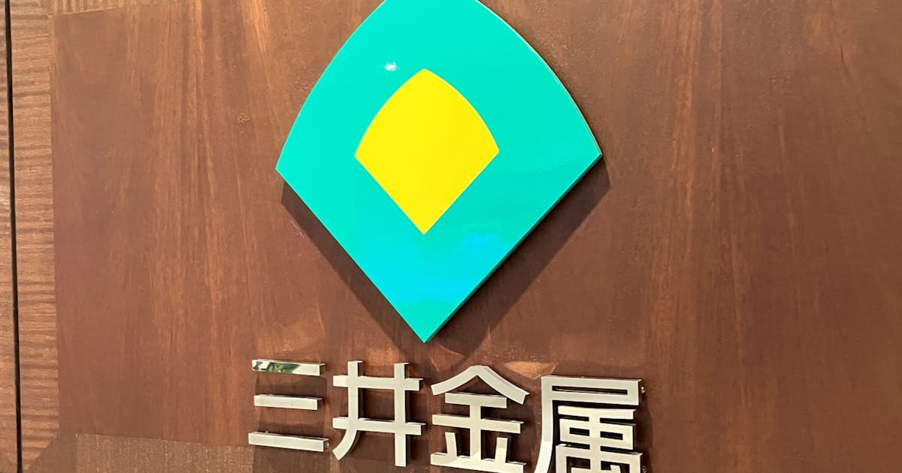
三井金属、株価10倍のROIC優等生 銅箔のAI需要が迫る投資の決断
割安株ファンドは３タイプ トラップの回避力が決め手
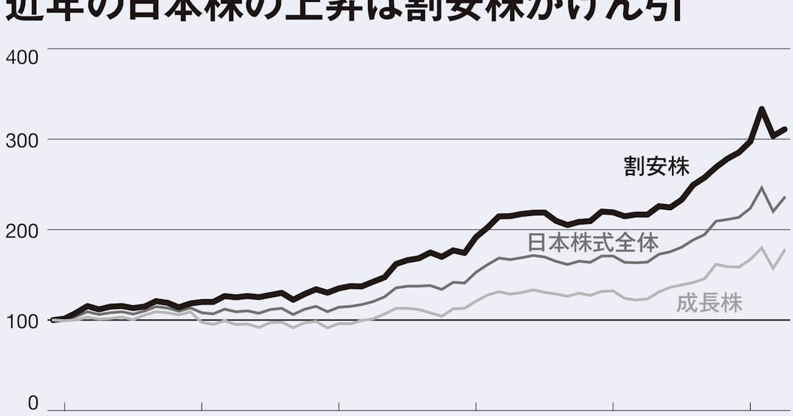
割安株ファンドは3タイプ トラップの回避力が決め手
戻り鈍い世界貿易 中東問題の重荷、影響長引く可能性
戻り鈍い世界貿易 中東問題の重荷、影響長引く可能性
人にブタ臓器移植、明大発新興が28年に国内初治験 ドナー不足補う

人にブタ臓器移植、明治大学発スタートアップが28年に国内初治験 ドナー不足補う
日本経済新聞 電子版（日経電子版）さんがリポスト
韓国SK、賞与で営業益10%を分配 キオクシアに適用なら1人5000万円

韓国SK、賞与で営業益10%を分配 キオクシアに適用なら1人5000万円
日本経済新聞 電子版（日経電子版）さんがリポスト
高齢者医療費の自己負担拡大「賛成」52％、若い世代高く 世論調査
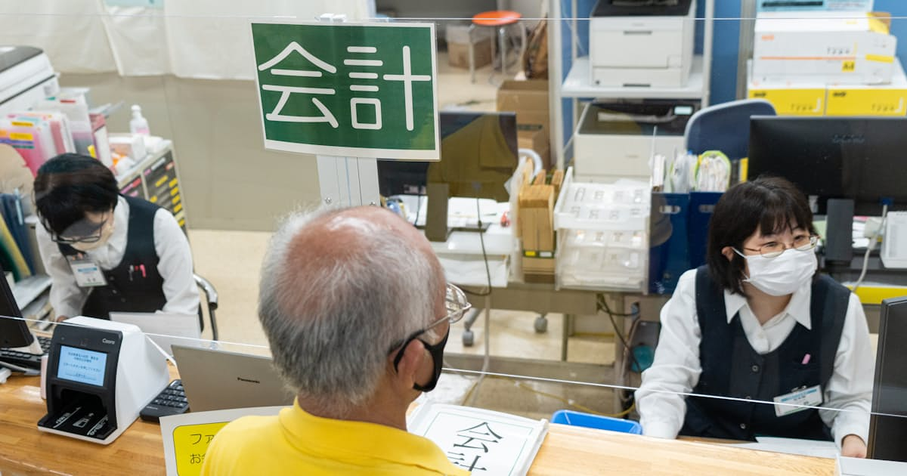
高齢者医療費の自己負担拡大「賛成」52%、若い世代高く 世論調査
ネット銀、夏の定期預金1%台に メガバンクのポイント攻勢で競争激化

ネット銀行、夏の定期預金1%台に メガバンクのポイント攻勢で競争激化
混沌の世界、信頼と価値磨く 市場経済と民主主義守る決意新た

混沌の世界 信頼と価値磨く 日経、創刊150周年 編集局長 菅野幹雄
乱高下の日本株、個人マネーに膨らむ余力 「待機資金」最大の16兆円

乱高下の日本株、個人マネーに膨らむ余力 「待機資金」最大の16兆円
【胸糞】妻に騙されて自分の子どもだと思い育ててきた夫、DNA鑑定で実子ではないことが判明 → その後、間男と妻と話し合った結果・・・ #酷い話・事件

【胸糞】妻に騙されて自分の子どもだと思い育ててきた夫、DNA鑑定で実子ではないことが判明 → その後、間男と妻と話し合った結果・・・ - オレ的ゲーム速報@刃の記事ページ
jin115.com
悲劇の元凶となる最強外道ラスボス女王は民の為に尽くします。Season2
最終回視聴
逆ハーレムものだけど、今期も最後まで楽しめた
プライドが可愛いだけでなく、次期女王として堂々とした姿がかっこよすぎる
でも、戦の直前の中途半端なところで終わったなぁ
3期もやるつもりなのだろうか
#ラス為
『渡辺コージ中』メンバーシップ情報です(7月3日・22:30頃〜限定配信「Kカフェ(営業中)から」につきまして)。
#mond
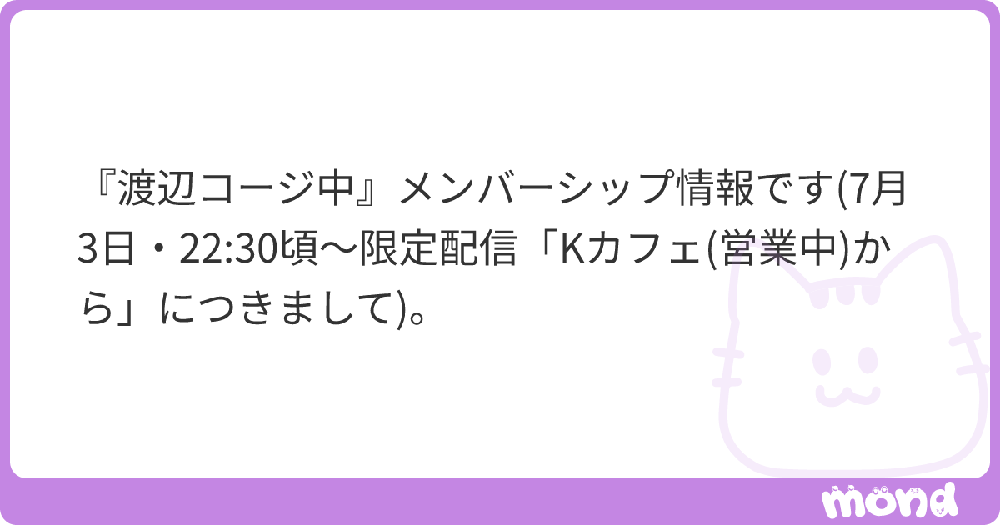
『渡辺コージ中』メンバーシップ情報です(7月3日・22:30頃〜限定配信「Kカフェ(営業中)から」につきまして)。 | mond
開かずのカフェ「Kカフェ」、『渡辺コージ中』メンバー限定で営業・闇営業します。
(メンバー限定営業)
7月3日 20:00~23:00 ラストオーダー22:20
★ワンドリンクサービス有
★22:30~ 公開…
(残り437文字)
#mond_kozysan

渡辺浩弐 answered the question | mond
来週からずっと晴れ予報になってるが明けるのか？
貝さんさんさんがリポスト
原作：キノシタ・エリ 作品：君の色
https://
sakugabooru.com/post/show/2769
96
…
#zoeto #作画
EUのAI規制厳しすぎるし、ここはひとつ51番目の州ということで日本にですね…（届かぬ思い）
Chubby
@kimmonismus
オーストリアはAnthropicをヨーロッパに誘致しようとしている。
しかし、それは絶望的な行為のように見える。結局のところ、米国の規制により、ヨーロッパは最も強力なモデルへのアクセスを断たれており、ヨーロッパが米国との良好な関係を維持しているにもかかわらずだ。 x.com/AndrewCurran_/…
WIT山中Pとコロリド桃原P、超かぐや姫！の絆だ（超かぐで制作協力いたはだいたお返し？）

TVアニメ『LONA』公式
@LONA_animation
┈┈┈┈┈┈┈┈┈┈┈┈┈┈
オリジナルTVアニメーション
『LONA』
STAFF クレジット公開！！
┈┈┈┈┈┈┈┈┈┈┈┈┈┈
TV Series SPring-2027
#LONA
先に参加スタッフ明らかにしちゃうアニメ初めてみた
もうちょっと体力が残ってたら色々もっと突っ込んだ話もできたのかな、人多かったからむずかったけども
Torishima / INTP
@izutorishima
こういうイベントがある日ほど作業捗って、寝ないといけないと分かってるのに作業して徹夜しちゃうやつを結局今回も無事達成してしまった… x.com/izutorishima/s…
欧州熱波で1300人超死亡 WHO事務局長、各国に対策促す
欧州熱波で1300人超死亡 WHO事務局長、各国に対策促す
「Amazonで中古のポケモンソフトを購入した！」 → ヤバすぎるポケモンが入っててネット騒然ｗｗｗｗｗ #3DS
「Amazonで中古のポケモンソフトを購入した！」 → ヤバすぎるポケモンが入っててネット騒然ｗｗｗｗｗ - オレ的ゲーム速報@刃の記事ページ
jin115.com
AVITAMINOSEさんがリポスト
低い断熱性なぜ放置、世界に遅れる「窓」後進国ニッポン
https://
nikkei.com/article/DGXMZO
78836460U4A021C1000000/
…
今の欧州の状況を見ると、「日本の住宅の断熱性は遅れている」という記事も、だいぶ寒々しい

低い断熱性なぜ放置、世界に遅れる「窓」後進国ニッポン
AVITAMINOSEさんがリポスト
イタリアで午後3時の会議が始まるとき

貝さんさんさんがリポスト
片桐監督がスタッフたち一人一人ついてコメントを‥！
私も片桐さんについて書いていきたいです。
片桐さんはバブルの演出されていた時からお世話になっているのですが、作品への情熱や熱量が半端なくて、やばいほどインプットして練り上げてぎゅっとしてアウトプットしてるイメージです。
片桐崇@LONA
@naushikagatobu
齋藤さんはWITが抱える宝です。
片桐の感覚では、料理の作画は、進撃の立体軌道装置と同じくらい描くのが大変です。
しかし、齋藤さんはそれを描くことができます。それだけではなく、キャラの芝居もとんでもなく魅力的なのです。
齋藤さんの作画を見て震えてください
#生命を吹き込む作画
#LONA x.com/nungyuuu_anime…
本当に、家族という言葉があれば…イヴァンもティルも…
ビジュで言うとルカが一番で僅差でイヴァンなんだけど、所作とかも含めるとイヴァンが良すぎるところもアリ… でもR O U N D 6のティルのビジュが好み過ぎるんだよな…
エイステの男たち、日によって誰が一番好きか変わるくらいに全員好きで困るし全員エロすぎる
まどマギ廻天、マギレコのアニメがアレだったから不安しかないんだよなぁ
総監督・脚本は違うけど、公開延期してるし…
あかね噺
最終回視聴
やはり落語についてはよく分からないといったのが正直な感想だけど、可楽杯のあたりが一番面白かった
あかねが成長していく様も楽しめた
高校を卒業して、志ぐま師匠に弟子入り
ようやくスタート地点に立ったってとこか
2期では流派間の因縁に巻き込まれるのかな
#あかね噺
AVITAMINOSEさんがリポスト
速報：中国四川省でマグニチュード5.29の地震が発生したと、GFZドイツ地球科学センターが発表。
詳細は
http://
aljazeera.com

ストーリーばかりやってるけど、バトルやる相手がいないので
近年だとガルクラで話題になってた記憶。ちなみに実写だとスターウォーズ関連でローグ・ワンのルックデブ担当者のひとりが日本人だったり。
貝さんさん
@morikai3
SHIBUYA ANIME BASE #32
東映アニメーション・大泉スタジオへ潜入。ガルクラの制作裏の解説。CGアニメの裏側を分かりやすく解説。フルCGアニメにおけるレイアウトの解説は個人的にも興味深かった。あとこの手の番組でルックデブの解説があるのは結構珍しい気もする。
https://
abema.app/9jfX
恐らくルックデベロップメント（ルックデブ）のことかなと。3Dで作られたモデルのルック（見た目）の質感をテクスチャやシェーダ（陰影付け、表面の質感や凹凸の設定、各画素の表示色の決定など）を調整しながら作り上げる、CGアニメで目にする機会の多い名称です。
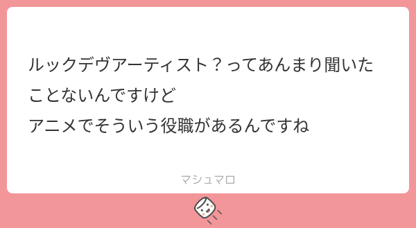
ルックデヴアーティスト？ってあんまり聞いたことないんですけど アニメでそういう役職があるんですね | マシュマロ
64版より勲章取りやすい気がする
#スターフォックス #StarFox
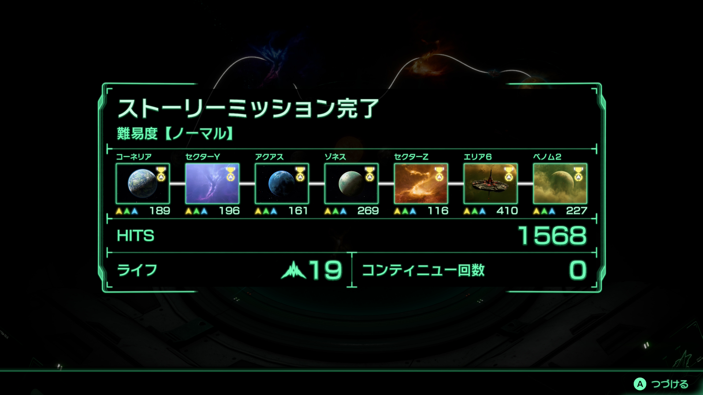
なるせひろのりさんがリポスト
『劇場版 魔法少女まどか☆マギカ〈ワルプルギスの廻天〉』本予告映像＆あらすじが公開。主題歌はFictionJunctionに決定
“トカゲさん電話”や“名塚底根”など気になるワードが満載。ほむらの物に似たメガネをかけているキュゥべえの姿も…？
https://
dengekionline.com/article/202606
/79719
…
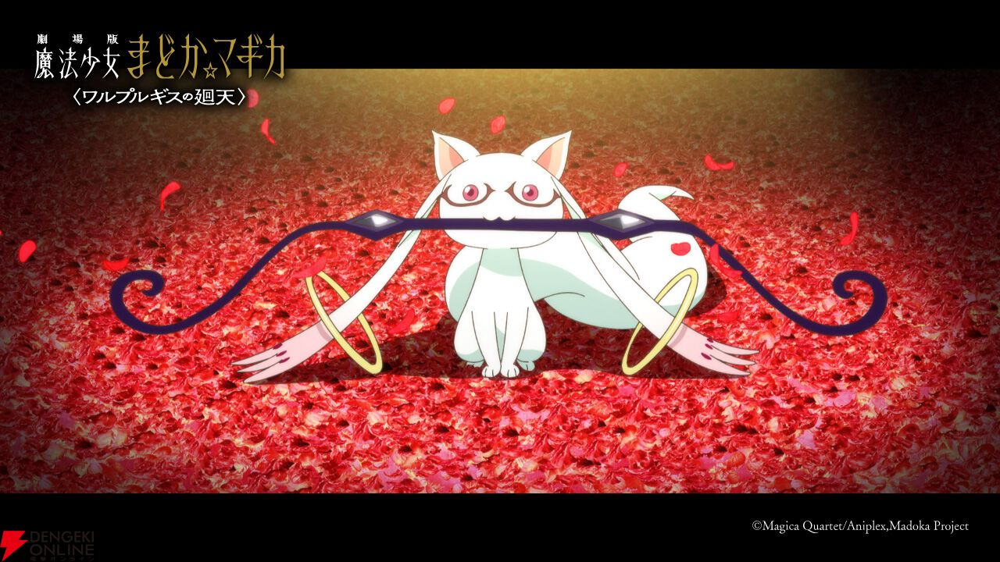
貝さんさんさんがリポスト
片桐は撮処理を濃くしたいと言った次の瞬間に、このカットは処理を薄くしてくれという信じられないオーダーをかまします。
しかし、この世にはそれが出来る人物が2人います。
峰岸さんと宮城さんには頭が上がりません
#僕たちはいつもT2スタジオと共に
#LONA
峰岸 健太郎_Kentaro Minegishi
@sauce971
オリジナルTVアニメーション「LONA」
撮影監督として弊社宮城と連盟で参加させていただきます。
どうぞ、よろしくお願いいたします！
#LONA x.com/LONA_animation…
AVITAMINOSEさんがリポスト
うわっ！太陽上で複数の巨大なプラズマフィラメントが連続して切断されました プラズマフィラメントは太陽の異なる領域を磁力でつなぎ合わせ、強力な電流がそれらを脈動します。フィラメント構造の変化はしばしば近くの太陽黒点を爆発させます...

輿水畏子さんがリポスト
#シェリハン
貝さんさんさんがリポスト
そのように言ってただけて、大変恐縮です...！
これからも頑張りますので、
どうぞよろしくお願いします！
片桐崇@LONA
@naushikagatobu
片桐は毎回イカれた色にしたいと無茶振りをして、田中さんを困らせます。
しかし、そこはさすが田中さん。難なく片桐の意見を集約し、素晴らしいものに仕上げてくれるのです。
劇場spyの時から助けられています。
#これからも色チェックお願いします
#LONA x.com/tanaka_k_2022/…
なるせひろのりさんがリポスト
インテルCoreにRTX50搭載なのに22万円台で買えるHPの最新ゲーミングノート＝「HyperX OMEN 15」実機レビュー
インテルCoreにRTX50搭載なのに22万円台で買えるHPの最新ゲーミングノート＝「HyperX OMEN 15」実機レビュー
貝さんさんさんがリポスト
大迫さんはただものではありません。
カメラセンスが高く、LOのキレの良さはまさにその賜物です。しかもめちゃくちゃ絵が上手い！
僕と大迫さんは無限大ホールにお笑いライブを見に行くほどのお笑い好きという共通点もあります。
#次はピザを食いに行きましょう
#LONA
大迫 光紘
@kosakoara
野木さん！！！！！ x.com/lona_animation…
紫雲寺家の子供たち第7話におけるコンテ演出、大迫光紘さん(動画工房所属)の追従するような一人称視点によるカメラワーク、撮影アプローチ等についての話。動画工房期待の若手演出として知られる氏の映像技法が詰まった話数。 x.com/kyouray/status…
貝さんさん
@morikai3
紫雲寺家の子供たち第7話におけるコンテ演出、大迫光紘さん(動画工房所属)の追従するような一人称視点によるカメラワーク、撮影アプローチ等についての話。動画工房期待の若手演出として知られる氏の映像技法が詰まった話数。 x.com/kyouray/status…
注目したい方が多々いますが、やはり中心となる監督の片桐氏の全体のまとめ方は実際の本編を見て注目したいところ。他にも個人的にはコンテ演出陣、その中でも大迫光紘氏が参加されている点が楽しみ（動画工房作品で近年話題になった回を複数担当されている）。
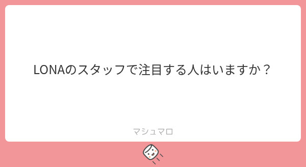
LONAのスタッフで注目する人はいますか？ | マシュマロ
なるせひろのりさんがリポスト
フェンタニルに仮想通貨詐欺に、なんでもやってんなあw
いや。草生やしてる場合じゃない
日本経済新聞 電子版（日経電子版）
@nikkei
中国フェンタニル組織、日本拠点で仮想通貨詐欺か 資金洗浄の疑い
https://
nikkei.com/article/DGXZQO
GN09AMG0Z00C26A3000000/?n_cid=SNSTW005&n_tw=1782599712
…
そしてここでもまた永瀬アンナさん…！
次世代の覇権声優すぎる…
＞LONA
池田瑛紗さんリアル ヴァイオレット・エヴァーガーデンじゃん
#乃木坂工事中
えっ待って！
脚本：野木亜紀子さん！？
有名ドラマを数々手掛けている、あの…？
アンナチュラルも逃げ恥もMIU404もめっちゃ好きです
＞LONA
TVアニメ『LONA』公式
@LONA_animation
┈┈┈┈┈┈┈┈┈┈┈┈┈┈
オリジナルTVアニメーション
『LONA』
Teaser PV 公開！！
┈┈┈┈┈┈┈┈┈┈┈┈┈┈
原案・脚本：野木亜紀子
監督：片桐 崇
企画・アニメーション制作：WIT STUDIO
TV Series SPring-2027
#LONA
Game*Sparkさんがリポスト
アニメ「サイバーパンク: エッジランナーズ2」ティーザー第2弾6月30日0時30分よりプレミア公開！「これまで以上に生々しく、ハードに描く完全新作」
https://
gamespark.jp/article/2026/0
6/29/168550.html?utm_source=twitter&utm_medium=social&utm_content=tweet
…
ホロライブの人気Vtuberさん、ガチでやばい睡眠障害になったことを告白「布団に入ってから眠るまで◯時間」「睡眠外来に行く」 #VTuber
ホロライブの人気Vtuberさん、ガチでやばい睡眠障害になったことを告白「布団に入ってから眠るまで◯時間」「睡眠外来に行く」 - オレ的ゲーム速報@刃の記事ページ
jin115.com
お客さんが溝口さんの後ろの人目当てで撮ってるのをバラしてしまうフレネミー。
坂部文哉@WEIN/BACKSTAGE Group
@Fumiya_skb
この動画がAIやら偽物やら言われまくっているので元動画を出します。溝口が通った後もカメラ向いてるのは僕の後ろにあっすんさんがいたから。最後まで見てくれたらわかる。
いろいろ言われててもリアルで会ったらみんなこんな感じで暖かいです
@mizoguchi_yuji x.com/fumiya_skb/sta…
え、頑張ってハンター・ハンターを読み直したのに⋯「ジャンプの連載再開は今日から」で「最新刊は7/3日」なの？ この4日間の時間差はどうすればいいの！？ツェリ王子の能力の影響化にいるの！？
憲法記念日おめでとうございます。
Volodymyr Zelenskyy / Володимир Зеленський
@ZelenskyyUa
私たちの戦士たちは、ウクライナの憲法制定記念日を高い精度で迎えました。昨夜、私たちの長距離制裁がロシアの2つの製油所に到達しました。クラスノダール地方のスラヴャンスク製油所が攻撃を受けました—最前線から約300キロメートルです。私たちはまた、ヤロスラヴリ地方の製油所にも到達しました。
社会を支えるどころか要自立支援に
瀬名
@02bd025
日本って高齢出産が増えすぎて、パラリンピックめっちゃ強くなりそう
なるせひろのりさんがリポスト
iPhone18 Proが2026年9月9日発表、11日に予約受付、18日発売か
https://
ift.tt/U4Rhj2z

「ベラルーシ軍」なんてまともな戦力じゃないよ
戦場に出されてもただウクライナ軍に無双されるだけ
ベラルーシの人々は状況を理解しているので、参戦などと言われたらまずルカシェンコを討つだろう
そのままクレムリンを討ってくれ
読売新聞オンライン
@Yomiuri_Online
ロシアがベラルーシに「参戦」圧力か…兵力は約５万人、ウクライナは阻止図る : 読売新聞
https://
yomiuri.co.jp/world/20260628
-GYT1T00010/
…
#ベラルーシ #ロシア #ウクライナ
ワイも自前の激閃光とマレット持ってチャイム叩いてたけどめっちゃ叩きにくかった←
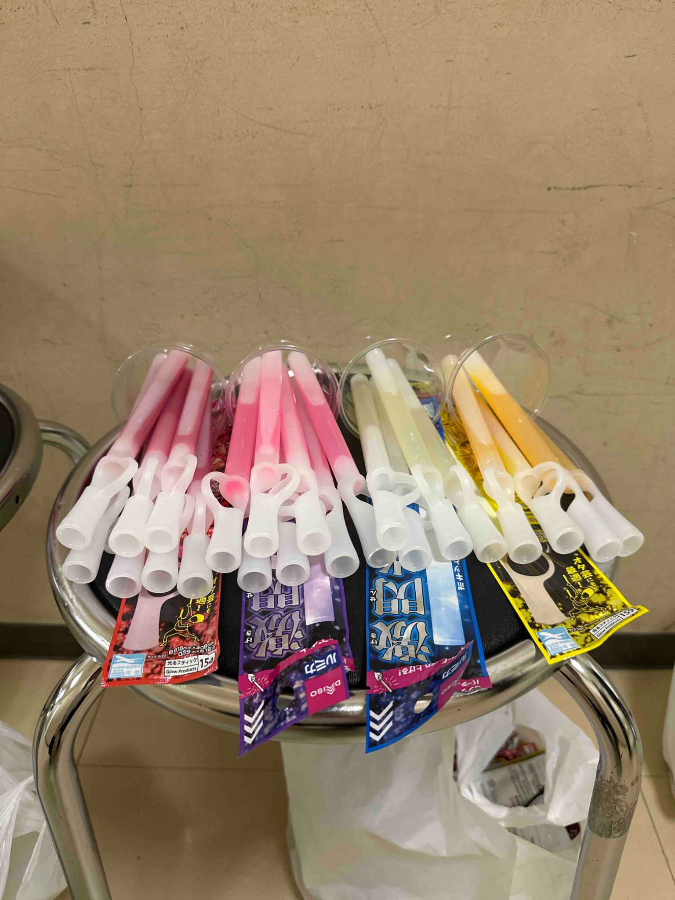
ぎぶん！
@given_shyrui
サイリウムを配って仲間を増やし
自分はしれっとUOを折りました←
夜のしごおわから帰宅！
突然の反逆劇w
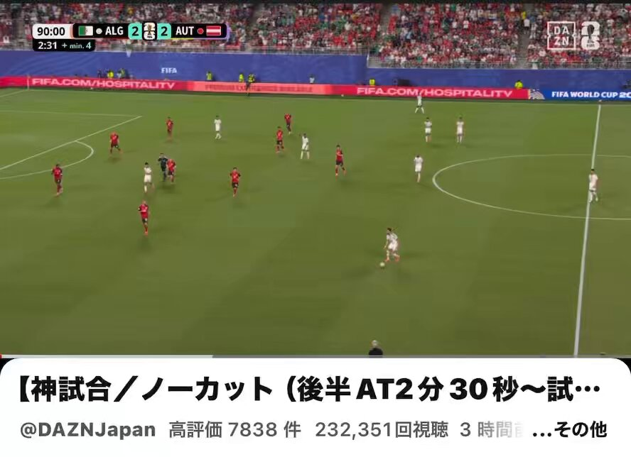
唐揚げ食べ放題に来たで！！
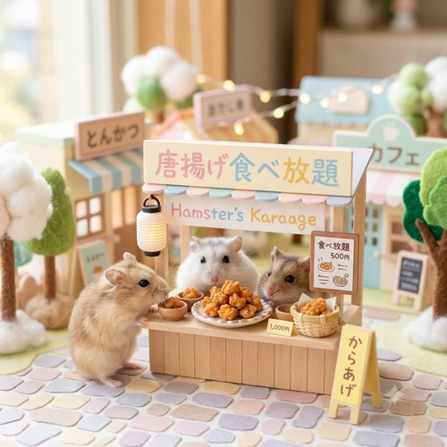
唐揚げ食べ放題に来たで！！ : ハムスター速報
定食も食べてきたっす！
めっちゃ美味しかった
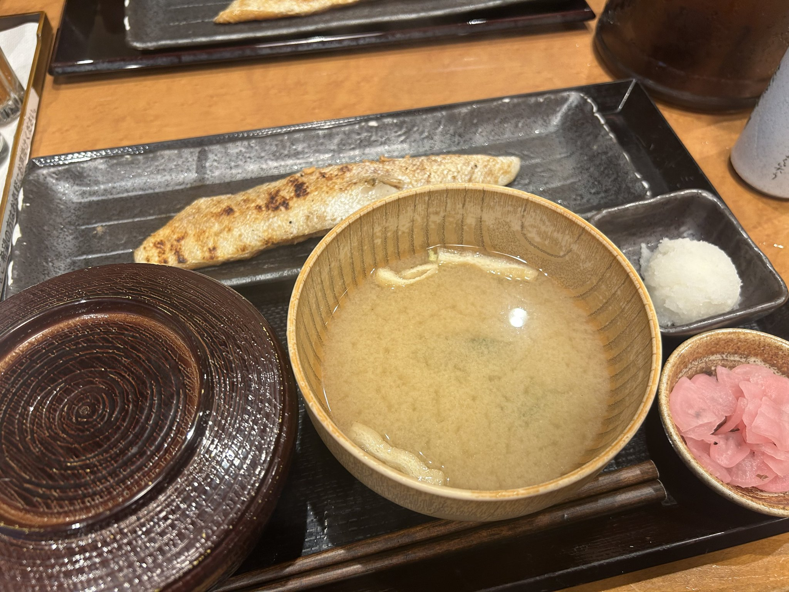
Torishima / INTPさんがリポスト
兄貴、それがブロックされたら、それが良いって分かるよ。
Elon Musk
@elonmusk
Grok 4.5は、1.5T V9基盤モデルを基盤とし、カーソルのデータを補完トレーニングで追加したもので、現在SpaceXおよびTeslaでプライベートベータ版として利用可能です。初期評価では、Opusに近い性能、場合によっては上回る結果を示しています。
RLはモデルの大幅な改善を続けています。また、Grok
ほんまにそこで、国旗損壊云々よりも、こんな建て付けの悪い法律を前例にしてもっと酷い悪法が作られる流れだけは止めないといかん。「○○が迫害されたとき、私は声を上げなかった。以下略」ってやつですよ。
基本的人権がない人は、酷い扱いされるよね。
移動の自由、職業選択の自由、表現の自由、参政権のない日本人。
47NEWS
@47news_official
【速報】愛子さまと結婚する人いないと自民中曽根氏
https://
47news.jp/14542040.html?
utm_source=twitter&utm_medium=social&utm_campaign=api
…
お誘い頂いてHUB行ってきた〜
祈りの羽根とSherry 'n Cherryが
甘くて自分好みだった！！
フードもマジで美味！！
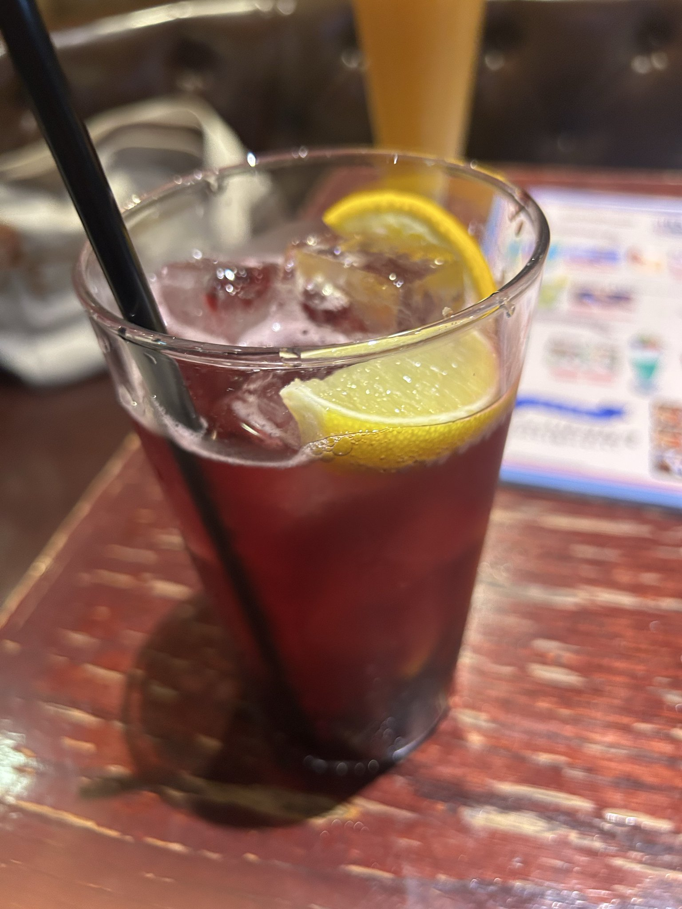
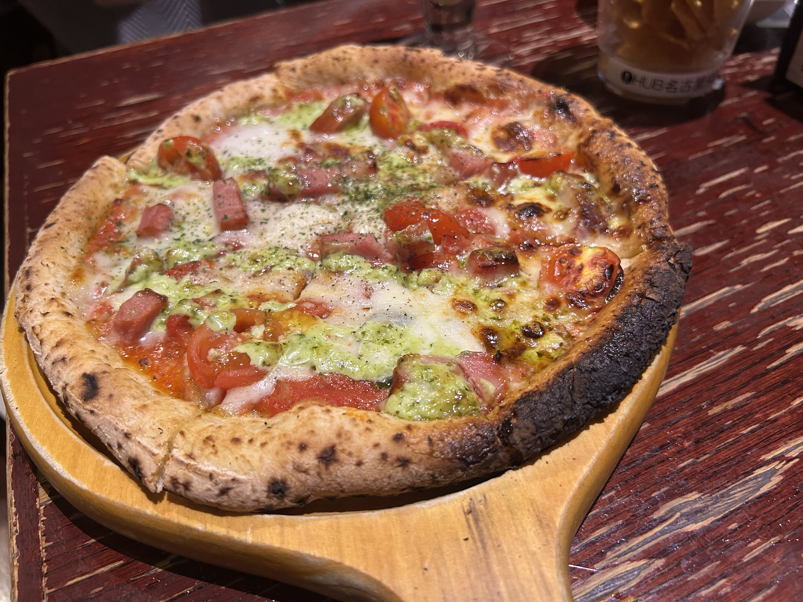
山人@耳すまさんがリポスト
民宿30ノット宿泊させて頂いたので朝起きて目の間でこの光景が見える……
御主人は凄く親切でお優しい(本当に)おじさんでしたが、どうにも聖地巡礼には余り好ましく思われていない様で……
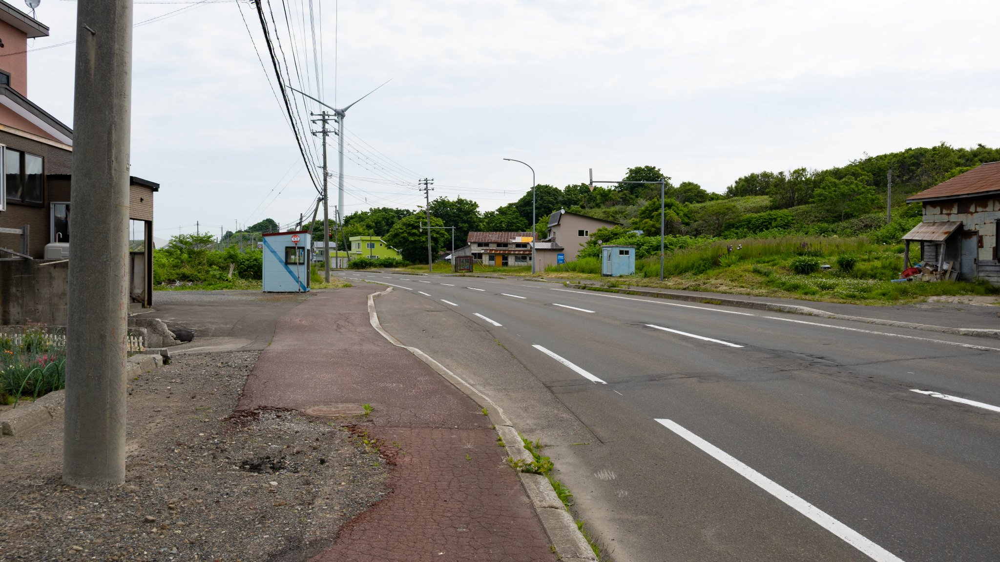

ワルプルギスの廻天、意外とこの作品でアニメーションシリーズとしてはしっかり完結させてくる可能性ありそう。
＞ω＜さんがリポスト
霧箱でこんなに見える石が滋賀で採れるんか
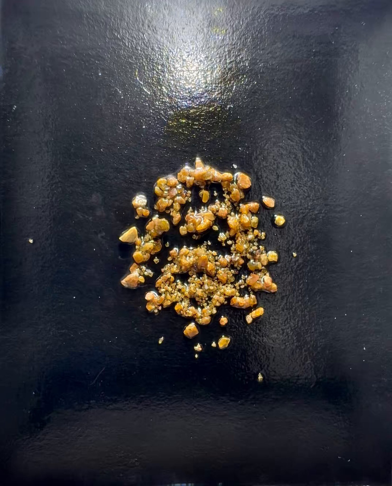
趣味の砂金採り
@Ore_smelting
放射線の観察
放射線の飛跡を見ることが出来る霧箱という箱で放射線を可視化する実験を行いました。この実験ではウラン,トリウムを含む【モナズ石】という鉱物を使用しました。
モナズ石の採取産地［滋賀県田上山］
AVITAMINOSEさんがリポスト
中央ヨーロッパの3カ国で現在、過去最高の気温記録が更新されています。 その最高値はチェコ共和国で記録され、ドクサニが41.9 °Cに達しました。そこの気温はまだ42 °Cまで上昇する可能性があります。中央ヨーロッパでは、過去最高の気温記録が異例で広範な波として目撃されています。
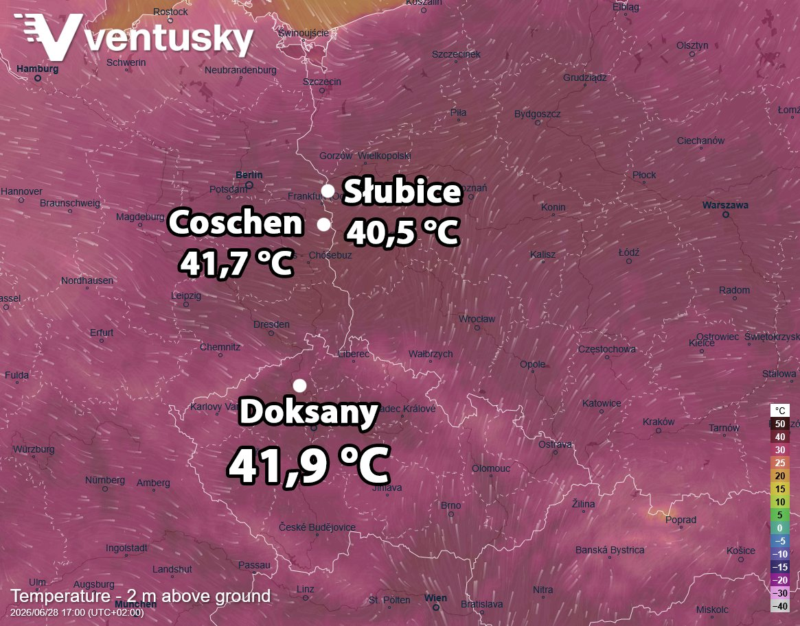
やっぱ梶浦サウンドよなぁ
Kalafinaさんは・・・
琉璃袋という植物は…
草神の力をもってしても収集しにくいことで有名だ
度厄真君の育成は早めにしておいたほうがいい
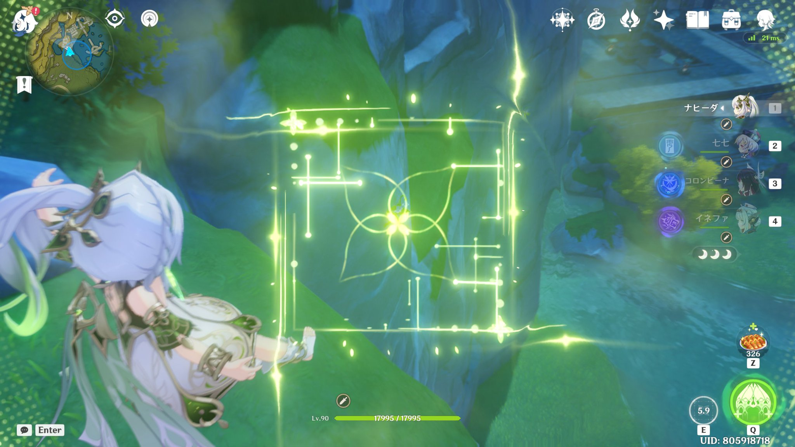
輿水畏子さんがリポスト
暑。 #けものさば
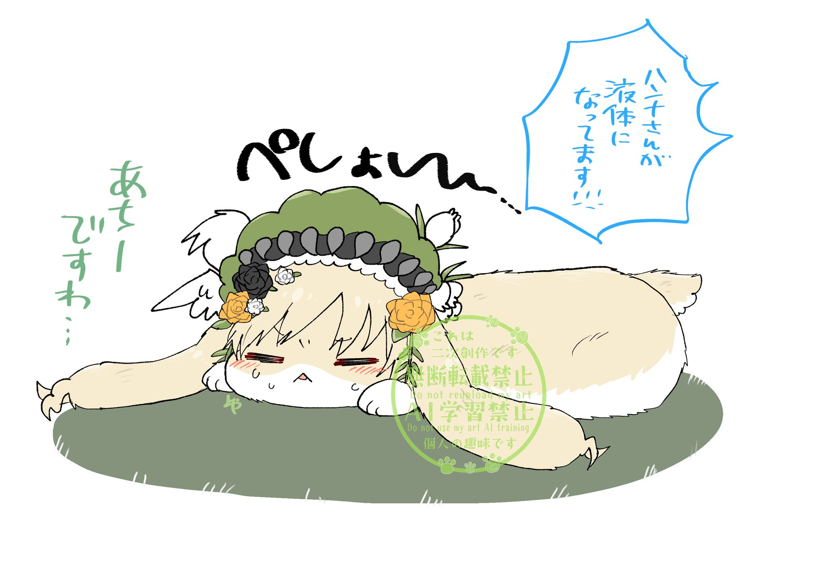
今年からふるさと納税を米にかなり振ったんで、まだ一回も米買ってません
で…
ウチでもお米余ってるヤバいw
日本経済新聞 電子版（日経電子版）
@nikkei
新米3000円割れが見えてきた 「もう倉庫に入らない」、生産も過剰
https://
nikkei.com/article/DGXZQO
UB1967I0Z10C26A6000000/?n_cid=SNSTW005&n_tw=1782599712
…
鈴でもなく。犬でもなく。クマ除けにもっとも効果があったのはドローン
鈴でもなく。犬でもなく。クマ除けにもっとも効果があったのはドローン | ギズモード・ジャパン
Wordle 1,836 4/6
ラクダ売ってW杯チケット買ったヨルダン人www
𝐟𝐞𝐝𝐞𝐯𝐚𝐥𝐯
@heis_fede
うわ、泣けてくるんだけどこれ何？
【ネタバレ解禁】
本日より以下のX投稿のネタバレが解禁となりました。
・「熾天臥龍演義」
ガイドラインに沿って投稿していただけます。
▼配信／投稿ガイドライン
https://
wfs.games/terms/contents
_guideline_heavenburnsred_streaming.html
…
#ヘブバン
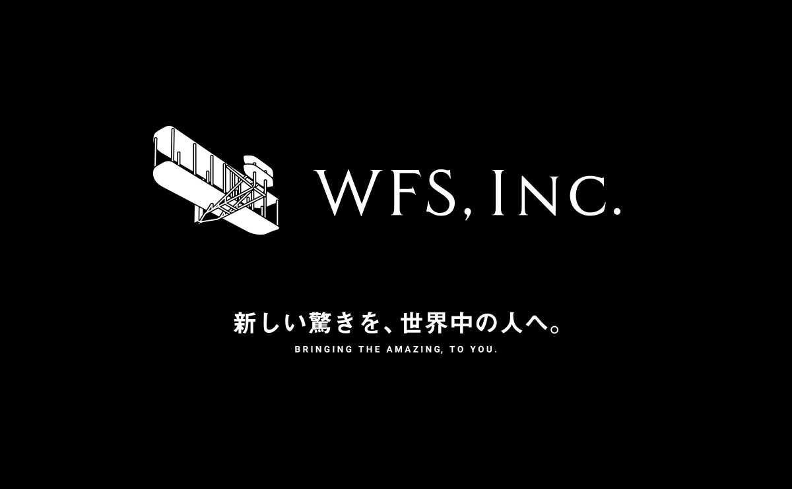
「ヘブンバーンズレッド」配信／投稿ガイドライン
貝さんさんさんがリポスト
━━━━━━━━━━━━━━
劇場版 魔法少女まどか☆マギカ
〈ワルプルギスの廻天〉
主題歌 決定
━━━━━━━━━━━━━━
｢彼方｣ FictionJunction
https://
youtu.be/HD6vwmNvcXo
梶浦由記さんからコメントをいただきました！
#まどかマギカ
貝さんさんさんがリポスト
━━━━━━━━━━━━━━
劇場版 魔法少女まどか☆マギカ
〈ワルプルギスの廻天〉
本予告 公開
━━━━━━━━━━━━━━
https://
youtu.be/HD6vwmNvcXo
#まどかマギカ
なるせひろのりさんがリポスト
34話無料公開始まりました
第34話 つかのまの / ふたりバス - 豊林サカネ | サンデーうぇぶり [
https://
sunday-webry.com/episode/122074
21983893843689
… ]
第34話 つかのまの / ふたりバス - 豊林サカネ | サンデーうぇぶり
日本屈指の逆神さん、嘘のポジションを吹聴して勝手に要人扱いするマーケットを惑わせることを覚える
嘘つき出したら我々は一体どうしたらええんやw w pic.twitter.com/MfhUBQ5IUP— ちゃわんご (@chawan_wabita) June 26, 2026 自分の呪力を利用した壮大な株価操作。ひどい！— ひがっし (@MRCuWz2SsWGoVZ6) June 27, 2026 岐阜さんの謝罪シーン見に行ったら謝る前ニッコニ
kabumatome.doorblog.jp
楽画喜堂に6月29日配信開始の電子書籍リストを追記しました。＞
https://
rakugakidou.net/#20260629kindl
es
…
「人生辛い時しんどい時、逃げに逃げ続けた31歳独身男性の貯金額がこちらです」 → 逃げ続けた代償がデカすぎる・・・ #雑談・その他の話
「人生辛い時しんどい時、逃げに逃げ続けた31歳独身男性の貯金額がこちらです」 → 逃げ続けた代償がデカすぎる・・・ - オレ的ゲーム速報@刃の記事ページ
jin115.com
来期の無職転生、MXの放送時間がとんでもないことになっているな…
AVITAMINOSEさんがリポスト
ベネズエラの人々は、厳しい問いと向き合っています。長年にわたる経済的・政治的混乱と、今また壊滅的な二重地震に見舞われた後、彼らの国は回復できるのか、それとも亀裂はあまりにも深すぎるのか？
https://
cnn.it/3QKaAyE
HAPPY BIRTHDAY！！
本日6月29日は、
第31C部隊所属 桜庭星羅の誕生日
ゲーム内では、デイリーログインボーナスにて当日限定の専用セリフも登場！(※AM4:00〜)
ログインしてチェック♪
#ヘブバン #桜庭星羅生誕祭2026
いるか@心が酒びたっているんださんがリポスト
女の子座りのぼっちちゃんを語る虹夏ちゃん

あっちさん勝手に苦しんでて草w
産経ニュース
@Sankei_news
W杯快進撃でも「高市ブルー」が止まらない朝日新聞 国旗損壊禁止が「息苦しい」毎日新聞
https://
sankei.com/article/202606
28-KBJWIZPA3NFI3JGEHSHHUTC6KA/
…
わが国は内心の自由は保障されている。どうしても日の丸を傷つけたいという人は、自宅にこもって、藁人形でも打つかのように存分にやればいい。
貝さんさんさんがリポスト
あまりにも家族写真
上の画像の、蕾叶の行動に3人は驚いてるけど、心玖だけ普通に受け入れてるのは、分かってる人って感じですか？
行動力すごい…！あとグローグーグッズ私もホスィ。ユニクロでTシャツ出ていたよな？！と今日行ってみたけどダースベイダーの顔がドーンのやつしかなかったです。映画を見るのが遅かったね…。
渡辺浩弐さんがリポスト
カフェ内で居合わせた「塩肉」さん（
@sionic4029
）とも対話し、著作物を購入してサインも頂きました。先生のお父様が「くにお君」シリーズの音楽を担当していたと言う事で、子供の頃に夢中で遊んでいました！ と興奮気味に伝えさせて貰った。作品に関しても、なるべく早く読了して感想を上げたい。
Game*Sparkさんがリポスト
『めっちゃカメレオン』偽のSNSアカウント登場と作者が注意喚起。最新アプデではマップにランダム性をもたらす仕組み実装―まずは「かくれんぼの屋敷」から
https://
gamespark.jp/article/2026/0
6/28/168549.html?utm_source=twitter&utm_medium=social&utm_content=tweet
…

あと200ページでハンターハンター最新刊の準備が整う。あと20分しかない
ポン☆潤々さんがリポスト
マンダロリアンの4dx観たすぎて前日に決めて弾丸で大津まで行ってきた笑
大統領の立場でボロカス言うのアリなんだ
貝さんさんさんがリポスト
作画を担当しております漫画版「ガールズバンドクライ」第1巻が6/29に発売されます。
バンドなどに興味ある方はぜひ！
なるせひろのりさんがリポスト
【お知らせ】
2026年”秋”Netflix独占配信決定
CDPR x TRIGGER最新作
『Cyberpunk：Edgerunners２』のキービジュアルがついに公開となりました！
こちらのイラストは本作でキャラクターデザイン・総作画監督を務める菅野一期さんによる描き下ろしとなります。
配信開始を楽しみにお待ち下さい！
AVITAMINOSEさんがリポスト
インドネシアのメラピ山は、2026年6月28日日曜日に火山灰流を発生させました。
その流れは、上流のサト/プティ川地域に向かって西へ約2km進み、ほぼ2分間続きました。

AVITAMINOSEさんがリポスト
このアニメーションは、次のヨーロッパの熱波がどのように形成されるかを示しています。
今週、スペインの高原内陸部から下降する持続的な東風が、下降気気の広範な断熱膨張暖めを引き起こし、ヨーロッパの西に多くの熱を蓄積し、それが後に東へ戻ります。
数年前に地下500m坑道の工事が完了したようで見学記念カードにも記載があるものの、今はまだ人用エレベーターが一系統しか伸ばせて無いらしく安全上一般公開はしておらず350mが見学できる最深とのこと
数年後にエレベーターが2基体制になったら公開されるかも…？
AVITAMINOSEさんがリポスト
ヨーロッパの気象機関が大混乱？
ECMWFが外部へのデータ提供に影響を及ぼす「大規模な停電」を起こしているようです。
良くない！
https://
status.ecmwf.int
今年度は12年前に埋設した人工バリアを取り出しているようで埋められた坑道のコンクリートの蓋の前まで見学できた(取り出し作業は隣のトンネルから掘り進めて行われているらしい)
https://
newsdig.tbs.co.jp/articles/-/274
4464
…
なるせひろのりさんがリポスト
なおアニメ版もあります( ◜ᴗ◝)

こちやん
@syobo_yatiko
まさかケロロ軍曹のコマにこんなシーンがあるとは…(´；ω；｀)
ぎゃん codex使い切っちゃった⋯
圧倒的って言葉が似合う人だな
#情熱大陸
『7つの激変: いかがわしい者たちが主役の「インターネット産業」30年史』
@dennotai
著 一気に読んだ。この手の歴史は失われる前にちゃんと体系的に整理しておかないとなー。昔話じゃなく世の中がどう動いてきたかってダイナミズムを知っていると、これからの変化にコミットできる機会を得る端緒にも
Masanori Kusunoki / 楠 正憲
@masanork
なるせひろのりさんがリポスト
【物議】同志社国際高校の生徒が、授業の政治的偏向を告発
・移民受け入れを一方的に称賛
・「共産党は左翼」と答えると教師が激怒
・「百田尚樹が卒業生なのは恥ずかしい」
・「共産党が日本を共産主義にしようとする志は素晴らしい」
・文化祭では保守や日本人ファーストを悪役化

幌延深地層研究センター
原子力発電で発生する高レベル放射性廃棄物の地層処分技術を研究している施設
協定上実際に核物質を用いた実験は行っていない事もあり事前申込で地下350mの坑道も見学可能
なるせひろのりさんがリポスト
なんと…！応募資格年齢制限
手紙(作文)で免除とかありませんかねリメイク楽しみです

ファミ通.com
@famitsu
『センチメンタルグラフティ』リメイクの制作が発表。1998年にセガサターン用ソフトとして発売された恋愛シミュレーションが令和に蘇る
https://
famitsu.com/article/202606
/79709
…
エンターグラムがリメイク、キービジュアルはオリジナルのイラストレーターの甲斐智久氏が描き下ろし。
なるせひろのりさんがリポスト
【半額】『ギルティギア ストライヴ』を50%オフで購入できるセールが開催中。DLCキャラをアンロックできるシーズンパス1～4も最大60%オフに
https://
news.denfaminicogamer.jp/news/260628o
新キャラ「ロボカイ（CV.千葉繁）」も7月2日より参戦。カッコいい演出で派手に殴り合う2D対戦格闘ゲームをお得に始められる
貝さんさんさんがリポスト
#アワーノーツ #millsage #家団
AtoriEさんによる手描きアニメCMと、ニチカラインさんによる3DアニメMVがそれぞれ公開されました！
すでに出ているキャラプロフィールなどと合わせて、新バンド２つも輪郭が少しずつ見えてきたんじゃないでしょうか
すでにドラマが描かれているMyGO!!!!!・Ave
【悲報】W杯試合前に、日本人vsブラジル人の喧嘩が勃発…ブラジル「日本の歴史の半分が強姦、自殺、小児愛、いじめ、原爆で、社会性ゼロみたいな国」 #芸能・スポーツ
【悲報】W杯試合前に、日本人vsブラジル人の喧嘩が勃発…ブラジル「日本の歴史の半分が強姦、自殺、小児愛、いじめ、原爆で、社会性ゼロみたいな国」 - オレ的ゲーム速報@刃の記事ページ
jin115.com
ISSのロボットアームで描画。『宇宙兄弟』の最終巻に特別エピソード収録
ISSのロボットアームで描画。『宇宙兄弟』の最終巻に特別エピソード収録 | ギズモード・ジャパン
日本経済新聞 電子版（日経電子版）さんがリポスト
首都圏で定期借家マンション急増 都心エリアで拡大、港区は4割弱
首都圏で定期借家マンション急増 都心エリアで拡大、港区は4割弱
自分も沖縄の戦跡には足を運ぶ努力はしているが…、安里の栄町で飲んでるだけになりそうでｗ #うさがみそーれー
AVITAMINOSEさんがリポスト
アメリカ議会で緊急事態が展開しています。「KIDS Act」——インターネット利用の厳格な年齢確認やプライベートメッセージングの規制などを含む包括的な立法パッケージ——が、29日の下院投票に突然予定されています。
EFF（Electronic Frontier
EromancerSFW
@EromancerSFW
インターネットを救うために、残り24時間ちょっとの時間しかありません。投票は29日月曜日に米下院本会議に急いで持ち込まれます。
とりあえず魔手やってみるかな
『シャインポスト』公式さんがリポスト
今年は沢山推しのお誕生日をお祝い出来て幸せでしたっ
来年もお祝いできますよーーーにっ！！！
#風祭朝陽生誕祭 #シャインポスト

ポン☆潤々さんがリポスト
【交換】SideM FiFS 表情フォトカ フォト風カード
譲）
箔：翔真、悠介、直央
N：翔太、北斗、翔真2、キリオ、享介2、悠介、志狼、クリス2
求）
箔：龍
N：龍
郵送交換もしくは大阪梅田手渡し
検索からもお気軽にお声がけください！
いるか@心が酒びたっているんださんがリポスト
こちらの講演会、開催１週間前です！
ぜひ、ご参加ください！
Shin Hori 弁護士 講演：「リベラル」ではない人のための憲法21条のお話
なるせひろのりさんがリポスト
たぶん、僕は誰が「最後にゲームとして仕上げたか？」は知っている。当時、fcgamemで知り合いだったｗ
渡辺浩弐さんがリポスト
7月18日はあなたに衝撃を与えるいちにちになるはずです！（大きくでたね？）そしてこの日はメルダーの新譜をゲットできたり、渡辺浩弐さんとの合同サイン会がありますから中野ブロードウェイにぜひきて！！
メルドレコード
@MELDRECORDS
次回予告
#メルダーの公開練習
7月18日土曜日14時開場
入場料：2000円/予約不要
会場：Ｋカフェ
#中野ブロードウェイ 4階
アコースティックライブに渡辺浩弐さんとの実験的コラボ『小説+朗読+音楽』あります！コラボ企画遂に新展開か？！ここだけで体験できる楽しさをぜひ体験しにきてください！
貝さんさんさんがリポスト
文字起こしだけで既に面白くて笑って読んでしまいました…
みやーんZZ
@miyearnzz
東野幸治 アニメ『淡島百景』最終回で抱いたなんともいえない気持ちを語る
https://
miyearnzzlabo.com/archives/120394
（東野幸治）サッカーの前に『淡島百景』の最終回をちょっと見て、なんかこうデトックスじゃないけど、なんとも言えん気持ちになって全然、日本代表のサッカー見るモードなれへんぐらい（笑）。
もう見て見ぬふりはしない。あの掃除のハードルを軽くする、折りたたみコードレス高圧洗浄機 #BuyPR
もう見て見ぬふりはしない。あの掃除のハードルを軽くする、折りたたみコードレス高圧洗浄機 | ギズモード・ジャパン
ウチのおばあちゃんも反エアコンだったけど両親が無理やりエアコンつけたらエアコン推進派に鞍替えした
Torishima / INTPさんがリポスト
こりゃどこも新車入れるに決まってるわな…
中古なのに4両で6億とか…
この制度はいいね。

読売新聞大阪社会部
@osaka_syakai
厳しい経営環境にある地方鉄道で、新造車両を導入する動きがある
「中古車両が出回らなくなり、探しづらくなった。両側に運転台をつける改造にも費用がかかり、新車の方が早く導入できる」
https://
yomiuri.co.jp/local/kansai/n
ews/20260628-GYO1T00001/
…
撮って出しだと暗くなるな
そろそろ地下の総統司令室ですね！
NEXTA
@nexta_tv
プーチン：「ロシアは戦場で敗北することはない。」
クレムリンの指導者によると、ロシアは歴史的な決定的な瞬間を迎えている。
「ロシアは我々の発展を妨げようとするあらゆる試みに自信を持って抵抗している。私たちには十分な力、資源、そして政治的意志がある」と独裁者は語った。
bilibili動画にアップしました
[HDR] 孤独摇滚! 光雕投影 东京都厅 ぼっち・ざ・ろっく！プロジェクションマッピング 東京都庁_哔哩哔哩_bilibili
https://
bilibili.com/video/BV12jTg6
oE4b/
…
さたけ
@takesatake_take
都庁のぼざろプロジェクションマッピング来たらすげー人いてビックリした
都庁プロジェクションマッピングは何度か来てるけど、これほどまで人が集まってるのは初めて見た
コンテンツ力すごすぎ
渡辺浩弐さんがリポスト
次回予告
#メルダーの公開練習
7月18日土曜日14時開場
入場料：2000円/予約不要
会場：Ｋカフェ
#中野ブロードウェイ 4階
アコースティックライブに渡辺浩弐さんとの実験的コラボ『小説+朗読+音楽』あります！コラボ企画遂に新展開か？！ここだけで体験できる楽しさをぜひ体験しにきてください！
実はメイドが黒帯で、メイドが客を投げ放題というオチもあったりしてw
馬車道はげみ 龘龘大正風シンデレラ系ラジオパーソナリティー及び新米秋葉原ご当地VTuberあ
@Bashamichi_H
秋葉原でこれ見かけると
一瞬ドキッとしちゃうんだよな
テスラさんがリポスト
今年も珈琲屋ドリームに笹の葉が設置されました！
日本経済新聞 電子版（日経電子版）さんがリポスト
IT資格取得者に報奨金、1000万円支払う企業「受注につながる」と評価

IT資格取得者に報奨金、1000万円支払う企業「受注につながる」と評価
反エアコン、笑っちゃいけないんですが申し訳ないけど字面がおもろすぎる
渡辺浩弐さんがリポスト
Kカフェからのお知らせもご覧ください！

Kカフェ営業につきまして(2026年7月〜)
Torishima / INTPさんがリポスト
TVアニメで事前に詳細なスタッフ情報（話数の表記はなし）を公開するパターンは初めて見た。
オリジナル作品が視聴者に興味を持ってもらうきっかけの1つとしてはアリかもしれない（そもそもスタッフに着目する視聴者は多くないだろうけど）。
TVアニメ『LONA』公式
@LONA_animation
┈┈┈┈┈┈┈┈┈┈┈┈┈┈
オリジナルTVアニメーション
『LONA』
STAFF クレジット公開！！
┈┈┈┈┈┈┈┈┈┈┈┈┈┈
TV Series SPring-2027
#LONA
Torishima / INTPさんがリポスト
LONAに携わるスタッフは皆真面目で一生懸命。かつ、クオリティの高い素晴らしい映像を作っています。
みんな、いつもありがとう！
片桐は感謝の気持ちでいっぱいです。
少しずつ皆さんのことを片桐が讃えていきます！ちょっとお待ちください！
#凄いよWIT_STUDIO
#LONA
TVアニメ『LONA』公式
@LONA_animation
┈┈┈┈┈┈┈┈┈┈┈┈┈┈
オリジナルTVアニメーション
『LONA』
STAFF クレジット公開！！
┈┈┈┈┈┈┈┈┈┈┈┈┈┈
TV Series SPring-2027
#LONA
貝さんさんさんがリポスト
色のついている原画について
打ち合わせの時にそういったカットがあって、その色雰囲気を使いたい、という話になっていればその色を使用しますが、
渡辺浩弐さんがリポスト
【新作発売記念サイン会のお知らせ】
7月18日土曜日16時から18時
渡辺浩弐さん新刊発売とメルダー新譜発売を記念しまして、中野ブロードウェイ・Kカフェにて合同サイン会を開催いたします！サイン会参加方法や、現在予定されている当日のタイムテーブルは画像またはKカフェのブログをご参照ください
なるせひろのりさんがリポスト
映画の後に田所商店でラメーン
今度は九州の味噌で☆
こっちの方が好みではあるけど味は豚汁だった笑
豚汁とさつま揚げって合うんだなぁ
なるせひろのりさんがリポスト
14歳の時にオーディション落ちてるのでリベンジしたかったのですがさすがに応募資格を満たしていませんでした
ファミ通.com
@famitsu
『センチメンタルグラフティ リメイク』ヒロインのキャストが一新。オリジナル同様に6人のヒロイン役を一般公募オーディションで募集
https://
famitsu.com/article/202606
/79709
…
エンターグラムのサイトに本作のティザーサイトとオーディションページがオープン。応募締切は7月31日まで。
なるせひろのりさんがリポスト
今まで XeGrader plus を紹介してくれたサイト一覧（抜粋）。本当にありがとうございます！
Time Extension
XeGrader, A "Puzzle Adventure Shooter" From The Creator Of Hydlide, Is Coming To Steam
なるせひろのりさんがリポスト
明日、
重大発表をします。
技術の日産を思い知れ。

ぐっち
@gucci1111817
新型キックスのプロパイロット、使ってみた。めっちゃレベルアップしてて驚き。
綺麗に車線をキープし、動作がなめらか………。なんだ、これ。
調べたら、
広角カメラの性能と情報処理能力が、ぶち上がってるらしい。
スゲーな。
いるか@心が酒びたっているんださんがリポスト
【お詫びと訂正】
第7回 #響けファンコン で配布したパンフレットのうち、プログラムページの「トゥッティ！」の編曲者名が間違っておりました。正しくは添付画像の通りとなります。編曲者のむーさ様をはじめ、関係の皆様にご迷惑をおかけいたしましたこと、心よりお詫び申し上げます。
由羽@レモンアイコンの人さんがリポスト
代わりと言ってはなんですが、今のラブライブ!のファンの方はマナーが良いので安心しているらしいです
居酒屋が増えた事による酔っ払いやスケボー、自転車乗っている人の方に警戒がいっているそうです
とりあえずトップが変わると商店街は細かく変わってくるので、マナーよく楽しんでください
岡田金魚店
@OkadaKingyo
うーん、監視カメラあるのによくやるなぁ
どんな人がやったのかはわかりませんが、今の仲見世の会長さんは見た目は優しいけどかなり厳格なので、トラブルはあかんよ…
コスプレパレードも参加者の行動を見て懸念を示して中止にさせたぐらいだから…
逆に言えばマナー良ければ受け入れられるので
湘南ペンギンさんがリポスト
「無能な指揮官」 韓国W杯敗退で李大統領が痛烈批判
https://
mainichi.jp/articles/20260
628/k00/00m/030/260000c
…
サッカーのW杯北中米大会で、韓国の1次リーグ敗退が確定したことを受け、李在明大統領は自身のXに監督やサッカー協会などを痛烈に批判する内容を投稿しました。韓国の1次リーグ敗退は2018年大会以来8年ぶりです。
「無能な指揮官」 韓国W杯敗退で李大統領が痛烈批判
貝さんさんさんがリポスト
確かにワイヤレスオーダーではあるな。ラブホテルにあったアレみたいなやつw
塩谷 歩波
@enyahonami
西荻窪のハンサム食堂のワイヤレスオーダーシステムがあまりにも好きで。
キッチンと2階席が離れてるので、カプセルにオーダー用紙をいれて、それを透明パイプに入れてキッチンまで流すシステム。確かにワイヤレスだし、入れてて楽しいし、祈りを込めて投入口へいれるのもすき！
スノーピークのジャグは大容量なのにたためる。水場への往復が激減します
スノーピークのジャグは大容量なのにたためる。水場への往復が激減します | ギズモード・ジャパン
ほぼベッドになるワークチェア。在宅ワークの「休む」を最適化してみた #BuyPR
ほぼベッドになるワークチェア。在宅ワークの「休む」を最適化してみた | ギズモード・ジャパン
これ多分言わんでいいツイートなんだけど、蕾叶と心玖、これで完全にジェネリックあやちさみたいな雰囲気や関係がお出しされたら流石にちょっとどうすればいいか分からないな…というビビりと、いやジェネリックあやちさみたいなやつ別に滅茶苦茶見たいですけどね！？！という本心、正直に両方あるな。
なるせひろのりさんがリポスト
一緒に泣こう♡
矢倉蓬咲さん、上背も相当あるし明らかに顔立ちそのものはバンドリにおけるイケメン枠(瀬田薫軍団)に分類されるタイプの目鼻立ちの造形をしている。ハロウィン限定ガチャで吸血鬼の格好とかしてほしい(気が早すぎ)
AVITAMINOSEさんがリポスト
家に帰ってきて、瓦礫の中からなんとかこれたちを見つけることができました 唯一の生存者たち

⑅
@nanamikasas
より良い日々が、いつか必ず訪れますように。 x.com/nanamikasas/st…
なるせひろのりさんがリポスト
鹿児島5歳児不明から1週間 近くの川に流された可能性も、捜索範囲拡大 - 産経ニュース
https://
sankei.com/article/202606
28-BCHXTQHWXNMNBCSOIGQ5DTY56Y/
…
鹿児島県霧島市の温泉施設で熊本県八代市の男児（5）が行方不明となってから、28日で1週間が経過した。
鹿児島5歳児不明から1週間 近くの川に流された可能性も、捜索範囲拡大
【雑談】ゲームしながら / ニコ生配信中
【雑談】ゲームしながら
伝説のギャルゲが28年の時超え再び『センチメンタルグラフティリメイク』発表！新キャストの一般公募オーディションも開催に
https://
gamespark.jp/article/2026/0
6/28/168548.html?utm_source=twitter&utm_medium=social&utm_content=tweet
…
なぜ四国放送…
「ガールズ＆パンツァー もっとらぶらぶ作戦です！」公式アカウント
@garupan_love2
TV放送決定
『ガールズ＆パンツァー もっとらぶらぶ作戦です！』
2026年10月よりTOKYO MX、BS日テレ
チューリップテレビ、四国放送にて放送開始
戦車道乙女が繰り広げるもうひとつの青春を
TVでもお楽しみください
#ガルパンらぶらぶ #garupan
予告
新イベント『Stella Generalprobe!』
6/30(火)17時より開催を予定しております
また明日6/29(月)20時頃、さらに詳しい情報を公開します
ぜひ明日もチェックお願いします
#ユメステ #ワーダイ #ワールドダイスター
この体格差、もっと練習していかないとな〜〜ちょっと描くの難しかった
御礼
イベント『Eden第4章～第3幕～』を
プレイいただいた皆さま、ありがとうございました
次回イベントはこのあと情報公開いたします
#ユメステ #ワーダイ #ワールドダイスター
AVITAMINOSEさんがリポスト
W杯グループリーグ敗退の韓国について、李在明がXで言及
「無能な人間を指揮官に選べば、結果は火を見るよりも明らかです」
そうでなくても監督は吊るし上げられ、戦犯扱いされているのに、大統領まで火に油を注ぐような発言をするのはどうかと思う
コメントには「自分の話か？」との反応多数
Dr.STONE SCIENCE FUTURE
最終シーズン第3クール最終回視聴
ついに終わってしまった
初回放送から7年間、全シリーズ面白かった
最後の方のホワイマンの正体とかは、当然ながらオカルト展開になってしまったけど、科学の面白さ・偉大さを教えてくれる良作だった
唆るアニメだったぜ
#DrSTONE
AVITAMINOSEさんがリポスト
#速報 欧州の熱波で1,300人以上の超過死亡が記録：WHO
なるせひろのりさんがリポスト
あやか「振り込んだのは15時前です！」
管財人「調べたら18時30分過ぎでした。返して。」
あやか「じゃあ破産が確定したら返します！」
管財人「破産が確定しました。返して。」
あやか「え？わたし政治に使ったんですけど？」
管財人「・・・。」
#大津綾香


カレーは中辛。
@m56102pa25
【速報】
大津あやか
破産決定後に預金を引き出したのが、破産管財人に調査により、ばれてしまうwwww
つまり窃盗、又は横領wwwww
また一つ嘘が明らかになる
#大津あやか #みんつく党 #第二回債権者集会
親ガチャが大当たりした女性の末路・・・ #雑談・その他の話
親ガチャが大当たりした女性の末路・・・ - オレ的ゲーム速報@刃の記事ページ
jin115.com
【特集】サグラダ・ファミリア完成へ―2026年に『Gaudi バルセロナの風』をプレイしてみた【ガウディ生誕100周年】
https://
gamespark.jp/article/2026/0
6/28/168547.html?utm_source=twitter&utm_medium=social&utm_content=tweet
…
正確には「イエスの塔」というメインタワー部分が完成するだけ……とはいえ140年以上建築が続けられる未完の建造物完成への大きな一歩。
日本経済新聞 電子版（日経電子版）さんがリポスト
光通信基板10倍増産、JX金属の勝算 AIデータ拠点の「銅代替」に照準
光通信基板10倍増産、JX金属の勝算 AIデータ拠点の「銅代替」に照準
なるせひろのりさんがリポスト
260km走り、実車も徹底的に調べました。新型キックスは、SUVが好きではない私でも欲しいというか、SUVとは思えない全体の仕上がりに惚れ込みました。
【これは傑作SUVだ！】新型キックスを260km徹底検証！e-POWERの走り・乗り味・内装・荷室まで本音レビュー
https://
youtu.be/QNHyCDdE6xs?si
=m_Z1sWglOTU1AhIY
…

渡辺浩弐さんがリポスト
Kカフェにて。渡辺浩弐先生に直接お会いし、「中野ブロードウェイ怪談」の二次創作小説執筆に関して菓子折りを持参しご挨拶。流石に礼儀として事前に了承を得るべきと緊張していたが、快諾して頂けました。現地でご本人を目の前にしつつ、当該の小説を執筆していると言う、不思議な体験の最中……。
ワガママだけど憎めない反抗期ガール。自己顕示欲が強いが、あまり頭が回らないので失敗ばかり。でもめげない。声がでかい。の人、明らかに乳もでかい
女さん！
大変ですよ！！
ツッコミ待ち案件
@ushijimanvoice
【非情】
ネイマールの「92回の浮気」と、支え続けた妻。
ブラジルの至宝が抱える、あまりに深い闇が話題です。
■繰り返される裏切り
年収は約316億円（2億ユーロ）超。
世界の頂点に立つネイマールですが、私生活は泥沼です。
これまで報じられた浮気疑惑は、なんと「92回以上」。
キャラ紹介ページに書いてある『他人にはそこまで踏み込まないし、踏み込んでほしくないと思っている。』っていう体裁をこの人が保てる期間、たぶん最初の20分くらいだと思う
自称料理人・こめお氏、イベントを欠席したキャバ嬢に「仕事ナメんなアバズレ」と激怒
↓
「こめお、お前だって昨日仕事に遅刻して皆に迷惑かけただろ」とツッコミ
↓
こめお氏「いやだって仕事の話もらったの数ヶ月前っすよ？仕事なくなったと思うだろ普通」
↓
こめお氏のヤバすぎる思考回路が話題に
滝沢ガレソ
@tkzwgrs
【悲報】フルーツサンド店「ダイワ中目黒店」さん、日テレの昼のバラエティ番組「ヒルナンデス」に急遽取材を申し込まれるも撮影予定時刻の“1時間後”にキャンセルを喰らう
↓
店主さん、番組用＆放送需要用に大量製造されたフルーツサンドを前に闘志を燃やす
ダイワ中目黒店
https://
s.tabelog.com/tokyo/A1317/A1
31701/13246178/
…
『シャインポスト』公式さんがリポスト
朝陽ちゃん、改めてお誕生日おめでとう〜
ケーキ屋さんのシュークリームだよ
#風祭朝陽生誕祭 #シャインポスト
アジア枠は減らして良いよ…
オセアニアと統一して3減
Fooootest（サッカーブログ）
@Fooootest
地域別で見たW杯決勝ラウンド進出数
欧州：13/16
南米：5/6
アジア：2/9
アフリカ：9/10
北中米：3/6
オセアニア：0/1
今大会ではアフリカ勢が大躍進
なるせひろのりさんがリポスト
うわぁ、、めっちゃいきたい、涙する自信しかない、
島みやえい子
@eikoshimamiya
ようやく白川郷フェス打ち上げライブでお披露目する、
この日のための記念の歌が9割出来ました。
アレンジは今回バンドでキーボードを弾いてもらうナカムラジュンキさん@jun_key_n
（つい最近、水樹奈々さんに楽曲提供されています）
ずいぶんお待たせしてしまって
多忙なジュンキさんごめんなさい
つば二郎@きいちゃんすこすこ侍さんがリポスト
【今夜！ツイキャスのお知らせ】
#きいきゃす #75
「7月5日(日) 花火大会やるよー！！！」
6月28日（日）22:30～
https://
twitcasting.tv/tsukino_kiiro
春の学園祭やってからもう3ヶ月！？
ドタバタで後夜祭もできずでしたが……お待たせ……！！
夏の花火大会のお知らせですよ～～集合～～！！！
月野きいろ
@tsukino_kiiro
今夜 #きいきゃす やりますっ！！ ゲリラっ！！
やっとやっと重大発表ぉ〜〜！！
22:00より後になると思いますっ！！
スト6、MASTERランクに到達してからは
なんか勝ってもそんなに嬉しくないし…
逆に少しのミスで負けるしで
なんか、あんまりドーパミンが出なくなったというか
全然やらなくなりましたね…
試合もなんかもう読みのぶっぱで、適当でも良いよ
>ストリートファイター6
らくがきシェリハン
朗読劇制服本当に可愛い！！
ナチュラルに距離感が近すぎる二人の学生生活をどうか…見せてください…
馬橋心玖のことどう考えても既に相当好きで、逆にこれでAVE_EEEが別にハマらないキャラだったら……ど、どうする……！？？！！？という謎の緊張感すらある。
貝さんさんさんがリポスト
一家Dumb Rock!「ホーミー・タイッ！！」にCGアニメーターとして少し参加させていただきました！
終わりら辺の5人の顔の画像が揃うところやってます。サムネになっててとてもうれしいです。
#バンドリ #アワーノーツ #家団
一家Dumb Rock!
@DumbRock_ofc
＼MV公開／
一家Dumb Rock!
『ホーミー・タイッ！！』
https://
youtu.be/yEceBm82tt0
#バンドリ #家団
ワンダーランズ×ショウタイム
書き下ろし楽曲
『オールイン・ワン』和田たけあき・重音テトver.公開
和田たけあき（
@WADATAKEAKI
）
YouTube：
https://
youtu.be/8RKzlK2yl04
ニコニコ動画：
https://
nicovideo.jp/watch/sm464806
10
…
#プロセカ
『プロジェクトセカイ カラフルステージ！ feat. 初音ミク』ワンダーランズ×ショウタイムへの書き下ろし楽曲▼DL&Stre...
youtube.com
各キャラのカットインと共にクソデカゴシック体(グラデーション仕様)で表記されたキャラ名がふりがな付きでｽｨｰ…と流れていくMV、絵面全てがありえんほどダサくてかなり良い。ここにきて「なんかよく分かんねーけどめっちゃ主人公チームっぽいやつら」が12組目のバンドとして出てくるのも妙味だよな
プロジェクトセカイ カラフルステージ！ feat. 初音ミク【プロセカ】さんがリポスト
ワンダーランズ×ショウタイム × 鏡音レン
『オールイン・ワン』
2DMVイラストを担当させていただきました`´
#プロセカ
プロジェクトセカイ カラフルステージ！ feat. 初音ミク【プロセカ】
@pj_sekai
『オールイン・ワン』Full ver.
ワンダーランズ×ショウタイム × 鏡音レン
21:15よりプレミア公開
https://
youtu.be/erMpHZQVcF8
#プロセカ #ワンダショ
Haruhiko Okumuraさんがリポスト
公務員がXを3年半実名で運用して分かったこと｜高橋 広和/Hirokazu TAKAHASHI
@techniczna

公務員がXを3年半実名で運用して分かったこと｜高橋 広和/Hirokazu TAKAHASHI
貝さんさんさんがリポスト
【MV公開】
一家Dumb Rock! 「ホーミー・タイッ！！」
なんとこちらも作詞・作編曲を担当しております
普通に楽しそうなバンドアニメ始まってて安心しました(本当に昨日の人たちと同じ作品の方？)
あとFenderって書いてあるのでそれだけで最高
#アワーノーツ #家団
一家Dumb Rock!
@DumbRock_ofc
＼MV公開／
一家Dumb Rock!
『ホーミー・タイッ！！』
https://
youtu.be/yEceBm82tt0
#バンドリ #家団
関宮さんがリポスト
速報：ドイツの公共放送局が、エアコン使用の危険性を警告する「反エアコンキャンペーン」を開始、地域を襲う記録的な熱波の中で。
なるせひろのりさんがリポスト
２０２０年代の科学技術で暗黒太極拳の再現を。
１００万ポリゴンで。１２０フレームで。
地震も多いし、念のため90%までEVを充電しておくかな。
リジスさんがリポスト
『センチメンタルグラフティリメイク』制作が決定。ヒロイン声優6名を一般公募
https://
entergram.co.jp/senti-re-tease
r/
…
CAST
沢渡ほのか：橘美來
永倉えみる：巻野椿
綾崎若菜：宮沢小春
森井夏穂：日向もか
杉原真奈美：夏目ここな
松岡千恵：相川奏多

日本経済新聞 電子版（日経電子版）さんがリポスト
中国フェンタニル組織、日本拠点で仮想通貨詐欺か 資金洗浄の疑い

中国フェンタニル組織、日本拠点で仮想通貨詐欺か 資金洗浄の疑い
人気女性配信者さん、普段XLサイズなのに見栄を張ってLサイズのホットパンツ姿を公開 → 最高すぎてネット民大歓喜ｗｗｗｗｗ #N/A
人気女性配信者さん、普段XLサイズなのに見栄を張ってLサイズのホットパンツ姿を公開 → 最高すぎてネット民大歓喜ｗｗｗｗｗ - オレ的ゲーム速報@刃の記事ページ
jin115.com
開店しました。
渡辺浩弐
@kozysan
本日20時〜23時、Kカフェは闇営業します。★「渡辺コージ中」メンバー限定です。
https://
mond.how/ja/topics/enu7
rjopn1ec4yn/rqeky7b9ka9gcud
…
こいつら5人のこと何も知らね～～～～けどこいつら5人が戸建ての一軒家で一緒に暮らしてるっぽいのなんかめちゃくちゃ嬉しい～～～～！！！！！！！という気持ちが既に何故か存在するな、一家Dumb Rock!さん
女性「すみません、ワリカン苦手なんですけど」
女性「すみません、ワリカン苦手なんですけど」 : ハムスター速報
貝さんさんさんがリポスト
これは明朗快活な痛快サクセスストーリーが期待出来るバンドだ……！！
焼かれテル
@nandehalhikage
ミルミル、なかなかに不穏な物語を歩みそうということが分かりました。
家団はバランスとってわちゃわちゃ破天荒サクセスストーリー寄りか……？
刑法第37条も民法第698条も、それらの規定に該当するかどうかは裁判所が判断するしかないから、訴訟されない保証という考え方がそもそも間違いだからなぁ。刑事の方は司法官憲での運用で調整できるかもだけも、民事は訴訟提起を制限するわけにはいかんし。
山人@耳すまさんがリポスト
やっぱこれだなぁ。存在感の塊。
キャッスル@ジブリフリーク
@castle_gtm
歌手で俳優の #美輪明宏 さんが死去されました。
「もののけ姫」ではモロの君を、「ハウルの動き城」では荒地の魔女を演じ、どちらも強烈なインパクトを残しました。
謹んでお悔やみ申し上げます。
貝さんさんさんがリポスト
考察。
室内に貼られているカレンダー、5月1日が水曜日のように見えますね。
ここでアニメムジカ劇中の時系列を確認。
5月1日(水)2013年、2019年、2024年。
7月25日(土)2015年、2020年、2026年。
マイムジは2020年の可能性が高く、家団は1年の時間のズレがあると推測。
#家団 #アワーノーツ
一家Dumb Rock!
@DumbRock_ofc
＼MV公開／
一家Dumb Rock!
『ホーミー・タイッ！！』
https://
youtu.be/yEceBm82tt0
#バンドリ #家団
貝さんさんさんがリポスト
#家団 #バンドリ #アワーノーツ #ンイラカチニ
一家Dumb Rock!「ホーミー・タイッ！！」
2Dワークスで参加させていただいてます
めちゃんこ楽しいMVになっています！
何卒よろしくお願いいたします
一家Dumb Rock!
@DumbRock_ofc
＼MV公開／
一家Dumb Rock!
『ホーミー・タイッ！！』
https://
youtu.be/yEceBm82tt0
#バンドリ #家団
貝さんさんさんがリポスト
ゆめみたの方向性はアニメ次第だし、マイムジmillsageがあんな感じだから(あんな感じ？)、家団はかなり光のバンドかもしれん
今週末の #きままクラフト
AVITAMINOSEさんがリポスト
大統領がサッカー代表チームの敗退を叱責。独裁国家ではよく見る光景だが、韓国のような民主国家が行うのは異例。「無能な人を指揮官（監督）にした」とは流石に・・・
이재명
@Jaemyung_Lee
崔煕永大臣と関係公務員の皆さん、お疲れ様でした。
私も前任の名誉プロサッカー団長であり、心境的には赤い悪魔として、予想外の結果に戸惑いを越えて呆然とする思いです。 x.com/hwiyoung_chae/…
南米はマフィアやギャングがデカいツラしてる国が多いから、日本も同じだと思ってるだけでは…
この写真、とてもSCPみがあってよい。
木星に浮かぶ巨大な「黒い円」、NASAが19年に発見 直径3540キロ
貝さんさんさんがリポスト
ホーミー・タイッ！のMVみるとMyGOと一家Dumb Rock!もかなり対照的ですね！
一家Dumb Rock!→カラフルな「雨（ペンキ）」を降らせる
MyGO→カラフルな「傘」をさす
#MyGO
#家団
中国大陸とか東南アジアに「進出」して、農地とか農民とか油田とか接収しまくりたいということでは。あれ？何か既視感が…
長瀞渓谷に向かい、そこらへんにいるオタクに「長瀞渓谷と言えば式守さんとわたてんだよな！」と語りかけてきた。
ツインボーカル編成というのが好き（近年の同シリーズはみんなコーラス等やってるけど、本楽曲、ツインボーカルならではの曲という感じがする）
貝さんさん
@morikai3
一家Dumb Rock!「ホーミー・タイッ！！」【Official Music Video】
監督・コンテ・演出：岡こずえ
CGディレクター：山田晟衣良
制作プロデューサー：保住昇汰
アニメーション制作：ニチカライン
岡さん初監督兼演出までやるのも初？サンジゲンの演出家育成の成果も感じる。
https://
youtu.be/yEceBm82tt0?si
=SmKngRqPWY4kxC3z
…
『無職転生 〜異世界行ったら本気だす〜 クロニクル・オブ・エコーズ』最新情報解禁!! 6/28(日)20:00よりプレミア公開【クロエコ】
https://
youtu.be/TJ5ssMeqeyE?si
=lcYbJ-i97jAFD0tN
…
@YouTube
より
『クロエコ』ゲーム オープニングムービー主題歌解禁 ＆ 2026年7月27日（月）ゲームリリース決定!!ゲーム オープニングムービ...
youtube.com
「ヨルダン―アルゼンチン」の試合結果詳細やサッカー解説者のコラムは、日経電子版特設ページでチェックできます。
https://
nikkei.com/special/soccer
-world-cup?n_cid=SNSTW005&n_tw=1782279545
…
#FIFAワールドカップ

サッカーワールドカップ2026 北中米大会
貝さんさんさんがリポスト
ファミリーって、最高だ！！！
一家Dumb Rock!
@DumbRock_ofc
＼MV公開／
一家Dumb Rock!
『ホーミー・タイッ！！』
https://
youtu.be/yEceBm82tt0
#バンドリ #家団
『オールイン・ワン』Full ver.
ワンダーランズ×ショウタイム × 鏡音レン
21:15よりプレミア公開
https://
youtu.be/erMpHZQVcF8
#プロセカ #ワンダショ
アニメ『サイバーパンク: エッジランナーズ2』2026年秋Netflix独占配信！ティザーアート＆第4弾キャラクター公開
https://
gamespark.jp/article/2026/0
6/28/168546.html?utm_source=twitter&utm_medium=social&utm_content=tweet
…
天気が残念(´･_･`)
サンジゲン、MyGO!!!!!以降はコンテ演出においてCG・作画・撮影・編集を中心に社内演出家を育成してメインに起用している。
一家Dumb Rock!「ホーミー・タイッ！！」【Official Music Video】
監督・コンテ・演出：岡こずえ
CGディレクター：山田晟衣良
制作プロデューサー：保住昇汰
アニメーション制作：ニチカライン
岡さん初監督兼演出までやるのも初？サンジゲンの演出家育成の成果も感じる。
「ホーミー・タイッ！！」作詞・作曲・編曲：藤井健太郎ーーーーーーーーーーーーーーーーーーーーーーーーーーー一家Dumb Ro...
youtube.com
ホーミータイッめっちゃかっこよくない？？
ふぇむ(せかんど！)さんがリポスト
このマップまだ出回ってんのかよ。前も言ったけど元号を冠した勝手なポジショニングに私を巻き込まないでください。戦後の教科書みたいに黒塗りでもしておいていただきたい。反天皇主義者の名前をここに並べないでくれ。
大垣書店★高野店
@takano_ogaki
そして大垣書店高野店に、令和人文主義MAP作成者の織沢実@orisawa30321さんが来られ、新たな固有名が追加されました！
今回追加されたのは
・こたけ正義感@kotake_seigikan
・阿賀沢紅茶@agasawa_tea
・長谷川あかり@akari_hasegawa
・トマトスープ@Tsoup2
・儒烏風亭らでん@juufuuteiraden
です！
なるせひろのりさんがリポスト
おれの憩いの場、歌舞伎町小次郎で
クソ揉めてるから何事かと思ったら
女性1人で小次郎で飯食ってる
↓
トイレ行った隙に知らない男が席でビールと焼きそばを注文して食べてる
↓
女性発狂で警察案件
手前の警察官が男から話聞いてるけど、多分酩酊状態か薬やってるわ
こんなのあんの？w
男性「うわ竜巻やんｗ動画撮って友達に送ったろｗ」→とんでもない事態に・・・ #雑談・その他の話
男性「うわ竜巻やんｗ動画撮って友達に送ったろｗ」→とんでもない事態に・・・ - オレ的ゲーム速報@刃の記事ページ
jin115.com
日本経済新聞 電子版（日経電子版）さんがリポスト
1500社が眠る「宝の山」 東証スタンダード市場に投資の好機

1500社が眠る「宝の山」 東証スタンダード市場に投資の好機
一家Dumb Rock!「ホーミー・タイッ！！」【Official Music Video】
https://
youtu.be/yEceBm82tt0?si
=vkFdJtp6509fZ4xG
…
@YouTube
より
「ホーミー・タイッ！！」作詞・作曲・編曲：藤井健太郎ーーーーーーーーーーーーーーーーーーーーーーーーーーー一家Dumb Ro...
youtube.com
えんびたんさんさんがリポスト
＼MV公開／
一家Dumb Rock!
『ホーミー・タイッ！！』
https://
youtu.be/yEceBm82tt0
#バンドリ #家団
本日22時より、
Phantom maze monster
アフターライブを開催
#プロセカ
なるせひろのりさんがリポスト
当時の空気感を知らない人のために補足しておくと、センチブームは本当にものすごかったのです。では何故息の長いコンテンツにならなかったのかと言うと…
これは一重に「全オタクがソフト発売と同時に燃え尽きたから」。これに尽きる。(続
フジヤマタカシ@レトゲーとお絵描き
@fujiyamax
センチメンタルグラフティのリメイクってことは…
また１２股かけてからの本命以外全員振るとかやらなあかんの？
あれマジで辛かったんですけど。。。。
なるせひろのりさんがリポスト
現在制作中の横スクロール型2.5Dシューティングの紹介です。制作スタッフはBGM担当の神坂さんと僕の二人だけ。生成AIや外部アセットは一切不使用、Unityの基本機能だけで作っています。ぜひ、この「SPOLOUS2」をあなたの心の中のウィッシュリストに！
(ver0.5公開まであと19日)
Torishima / INTPさんがリポスト
イーロンがopus 4.8を指していることを願います。grok 4.5が主要ベンチマークでopus 4.8を上回れば、歓迎すべきリリースになるでしょう。
Elon Musk
@elonmusk
Grok 4.5は、1.5T V9基盤モデルを基盤とし、カーソルのデータを補完トレーニングで追加したもので、現在SpaceXおよびTeslaでプライベートベータ版として利用可能です。初期評価では、Opusに近い性能、場合によっては上回る結果を示しています。
RLはモデルの大幅な改善を続けています。また、Grok
もう、今月は聖地巡礼しなくてもいいよね、、、疲れたから、、、
さすが俺たちのEU
AVITAMINOSEさんがリポスト
当局によると、北東フランスで民間機が墜落し、11人が死亡
Eleven killed in civilian aircraft crash in north eastern France, authorities say
Torishima / INTPさんがリポスト
LONAついに情報公開された！！
作品情報と共にスタッフクレジットもめちゃ公開されてる！
コンテ演出で参加します！！
宜しくお願い致します！！！
#LONA
TVアニメ『LONA』公式
@LONA_animation
┈┈┈┈┈┈┈┈┈┈┈┈┈┈
オリジナルTVアニメーション
『LONA』
Teaser PV 公開！！
┈┈┈┈┈┈┈┈┈┈┈┈┈┈
原案・脚本：野木亜紀子
監督：片桐 崇
企画・アニメーション制作：WIT STUDIO
TV Series SPring-2027
#LONA
日本の人気バンド・羊文学が釜山のロックフェスに出演
↓
照明のミスにより、なぜか観客席の一般人が一生ピカピカ照らされまくる事態に
↓
ソシャゲのガチャだったら確実にSSRっぽいと話題に
滝沢ガレソ
@tkzwgrs
【話題】令和最新のヴィジュアル系バンドLIVE、もはやわけがわからないことになる x.com/tkzwgrs/status…
確かににゃるらのファンは若年女性達なのかもしれないけど、にゃるらにとってそれは養分でしかなくて、本気で自分含め「救済(打倒)」したいのはあの頃一緒にTLにいたり、侍と呼称されている連中だから、その古臭いオタク像でいいと思う。
ふぇむ(せかんど！)
@000Amaurot
にゃるらがアニメが進むにつれてだんだんとテンション下がっていったのはわかる。
https://
note.com/fancy_coyote77
84/n/n7ce35747f6c8?sub_rt=share_b
…
貝さんさんさんがリポスト
絵が素敵すぎる

野木亜紀子
@nog_ak
#LONA
光で脳に挑みます
発表は16:00 作品公式 @LONA_animation から
2泊4日のanemoi聖地巡礼の旅から帰宅ー！(内、1泊は車中泊からの寒さで中止からの宗谷岬)
総走行距離:1,446km
東京〜沖縄(那覇)間が直線で1,400kmらしいので、3日間でこの距離を、、、よく無事に帰れた、、、
#anemoi
ワイと結婚する人いないとワイ氏
にゃるらがアニメが進むにつれてだんだんとテンション下がっていったのはわかる。
ニディガ十三話感想「時代がにゃるらを許さなかった」｜deepMotherSocker
ヨーロッパ、庶民にエアコン与えなかったせいでまたフランス革命されそうな感じになってる
貝さんさんさんがリポスト
力のある動検さんは、
総作画監督修の後でも
構わず直してなぁ。
スタジオ所属の動検さんならではの
だけどね。
…パッと聞くとおかしいでしょw
でもそうやってフィルムのクオリティ
維持されているんですよw
撮影さんとかラッシュ後に
作画上がりの
其の辺にいた監督や演出が直し…w
#アニメーター
不敬オタクもびっくりのクッソ不敬発言きたな
JVCケンウッド、米子会社の開発人員5割増へ 無線システムで収益拡大
JVCケンウッド、米子会社の開発人員5割増へ 無線システムで収益拡大
なるせひろのりさんがリポスト
発表されました「センチメンタルグラフティリメイク」、制作のお手伝いをさせて頂いています。
とても影響を受けた人間として光栄に思います、どうぞよろしくお願いいたします。
ENTERGRAM / エンターグラム
@entergram_info
◤制作決定◢
『センチメンタルグラフティリメイク』制作が決定いたしました！
ティザーサイトを公開しておりますので、ぜひご覧ください
ティザーサイト
https://
entergram.co.jp/senti-re-tease
r/
…
発売日などは後日公開いたしますので、お楽しみに！
#センチメンタルグラフティ
#エンターグラム
ユーチューバー「ポケカショップで10万円の利益大還元福袋買ってきた！」 → 中からとんでもない物が出てきて大問題に・・・ #炎上
ユーチューバー「ポケカショップで10万円の利益大還元福袋買ってきた！」 → 中からとんでもない物が出てきて大問題に・・・ - オレ的ゲーム速報@刃の記事ページ
jin115.com
米国に反発を主張出来ることは、あなた達の命を守るために必要かも知れない
母国に反発を主張したら、女子選手達と同じになる
ここは命を賭ける場所ではない
GOAL Japan
@GoalJP_Official
イラン主将がFIFAに激怒
厳しい制限を受けたイラン、主将タレミが訴え。
「最悪のワールドカップだ。まったく不公平。誰が僕らを助けてくれるんだ？」
「90分間プレーした直後にアメリカを出ないといけないなんて、現実的にあり得る話なんだろうか？」
日本経済新聞 電子版（日経電子版）さんがリポスト
新米3000円割れが見えてきた 「もう倉庫に入らない」、生産も過剰
新米3000円割れが見えてきた 「もう倉庫に入らない」、生産も過剰
正体を明かしたが故に、今度はみんなから逆襲されるニディガラジオっていうのも聴いてみたいですw
「センチメンタルグラフティリメイク」の制作・発売が決定。1998年にリリースされたセガサターン向け恋愛SLGがよみがえる
https://
4gamer.net/s/G102118.2606
26053
…
対応機種や発売日は後日案内されるので続報に期待しよう
ろじぱら ワタナベさんがリポスト
‥…・‥…・‥…・‥…━☆
シリーズ10周年記念
完全新作劇場版
「KING OF PRISM-Tri-Star Act-」
制作開始!!
☆━・‥…・‥…・‥‥…・
今作の舞台はトリオ大会「PRISM.3」
新たな戦いの火蓋が切られる―！
#キンプリスパライ にて特報映像が解禁！
#kinpri #kinpri10th
日本丸、ハーバーランド、川崎造船所、三菱重工、冬木。神戸からちょっと船に乗るだけで全部見えてすばらしい景色です。
テック企業CEOたち、イケイケどんどんだった発言を撤回中。「AIは仕事を奪いません！」
OpenAIのChatGPTが世界に公開されたのが2022年11月。以来、この新たなテクノロジーを語るとき、テック企業のエラい人たちが言い続けてきたこと。それは、「あなたの仕事はAIに奪われます」でした。ある人によれば、自由な時間でより豊か
gizmodo.jp
1200度の炎からも中身を守る。貴重品管理にサッと持ち出せるソフト金庫 #BuyPR
1200度の炎からも中身を守る。貴重品管理にサッと持ち出せるソフト金庫 | ギズモード・ジャパン
さたけさんがリポスト
用宗ぎおん祭りにて！
『レプリカだって、恋をする。』放送感謝記念の花火を上げていただきました〜！！！！！
みんな見てくれました？？天気悪すぎて家族と親戚にゲラゲラ笑われました！これもいい思い出か〜！？
#レプリコ
AIで消せるのにな
ポンデべッキオ
@pondebekkio
ワールドカップ予選リーグ敗退が決まった韓国代表チームのホン・ミョンボ監督がモザイクかけられてる動画が流れてきて笑ってる。これもう笑ってはいけないワールドカップ2026だろ。
Torishima / INTPさんがリポスト
自由だなぁ(行間)
AM9:21
@AM921543266
CodexからChatGPTを使わせる事ができるとんでもOSSを発見し、作成者を調べたらOpenAIの従業員で大横転
しかもOpenAIに入社してからも開発が続行されてるの恐ろしすぎるだろ？？？
南朝鮮では外国に敗北した選手監督は一族郎党炭鉱行きです
https://
x.com/jkope0218/stat
us/2071088644664996349
…
もう世界滅亡まで化石燃料を使い続けるつもりだって理解した
いい加減にしろよ
AFPBB News
@afpbbcom
欧州で記録的熱波、数千万人が直面 独仏などで史上最高気温更新
https://
afpbb.com/articles/-/364
1490
…
WIT STUDIOが「おにぱん！」作ってくれた恩を忘れた不埒なオタクがいるようだな…
なるせひろのりさんがリポスト
新たに判明した「DJI Osmo Pocket 4 P（4Pro）」と「Insta360 Luna Ultra」の画質、ログ、トラッキング、運用面での違いをまとめ

マイネームイズさんがリポスト
あなたしか見えないの
#prsk_FA
ウィストリアがあるため、アニメがあるので帰ります失敗の日曜日
渡辺浩弐さんがリポスト
今夜もKカフェはひっそり闇営業！
素敵な日曜の夜をお過ごしください
渡辺浩弐
@kozysan
本日20時〜23時、Kカフェは闇営業します。★「渡辺コージ中」メンバー限定です。
https://
mond.how/ja/topics/enu7
rjopn1ec4yn/rqeky7b9ka9gcud
…
湘南ペンギンさんがリポスト
【速報】愛子さまと結婚する人いないと自民中曽根氏

【速報】愛子さまと結婚する人いないと自民中曽根氏
ポン☆潤々さんがリポスト
アイドルマスター SideM × FiFS イラスト展
『スリー・ワン・ファイヴ』:EXTRA
最終日閉場いたしました。
フィナーレからの延長戦という事でやってきましたが、イラスト展『スリー・ワン・ファイヴ』
はこれで完全終了となります。
心からの応援、本当にありがとうございました。
つば二郎@きいちゃんすこすこ侍さんがリポスト
西連寺亜希さんとのコラボアイテム第2弾が
大好評予約受付中
受注締切以降はご購入いただけなくなります
詳細・ご購入はコチラ
https://
livertineage.jp/SHOP/189784/24
5631/list.html
…
#LIVERTINEAGE #LTA #リヴァティーンエイジ #西連寺亜希
@renren_aki12


エンドスさんがリポスト
「当事者である天皇をはじめとする皇族の意見に耳を傾けることをせず、天皇の「地位は国民の総意に基づく」と記す憲法から乖離(かいり)した、反天皇的、反国民的、反憲法的な政策が現実化しつつある」
毎日新聞
@mainichi
歴史観なき高市首相は「真正保守」から程遠い 近現代史研究の第一人者、保阪正康が緊急警告（サンデー毎日）
https://
mainichi.jp/sunday/article
s/20260622/org/00m/010/002000c
…
トウカイのクマさんがリポスト
TikTok更新
TikTokにて #コメティック キャストによるダンス動画を公開
是非チェックしてくださいね
https://
vt.tiktok.com/ZSCSpPaaD/
「アイノウ／コメティック」パーセントチャレンジ
川口莉奈 (斑鳩ルカ 役)
三川華月 (鈴木羽那 役)
小澤麗那 (郁田はるき 役)
#シャニマス #シャニソン
彼らは給油するために列んでガソリンを消費している
非国民だ
Ambassador Jonatan Vseviov
@vseviov
どう始まったか。
どう進んでいるか。
攻撃は報われない。
なるせひろのりさんがリポスト
マジで終わってる、、、
トクリュウのリクルーター役とみられる男、不起訴処分 鹿児島
メッセージアプリで詐欺の受け子役などに勧誘したとして職業安定法違反の疑いで逮捕・送検されたブラジル国籍のとび職の男について、鹿児島地検は２６日付で不起訴処分。

トクリュウのリクルーター役とみられる男、不起訴処分 鹿児島（鹿児島ニュースＫＴＳ） - Yahoo!ニュース
なるせひろのりさんがリポスト
つきあってるわけじゃない2人と相合傘(1/4)
【W杯2026】1次L敗退の韓国、監督への批判が殺到…「出禁」にするレストラン、コンビニも出てきてしまう #酷い話・事件
【W杯2026】1次L敗退の韓国、監督への批判が殺到…「出禁」にするレストラン、コンビニも出てきてしまう - オレ的ゲーム速報@刃の記事ページ
jin115.com
テスラさんがリポスト
寝室のUSBアダプターがエグい量になりました…（スマホとタブレットと照明と他色々用）
自衛隊、機密システムに感染USB接続 中国系ウイルス１年気づかず
自衛隊、機密システムに感染USB接続 中国系ウイルス1年気づかず
8月1日 倉本千奈の誕生日に向けて
「誕生日お祝いメッセージ」募集開始
▼送付先はこちら
https://
forms.office.com/r/biv9nSNrBC
募集は7/8(水)まで！(予定)
みなさまのメッセージをお待ちしております！ #学マス
きゅうりドラゴンがあらわれた
晩酌に用意されたおつまみが……「やばいwww」 350万表示の“とんでもない光景”に「真似したい！！」「わあ！！」
（記事URLはリプから）
晩酌に用意されたおつまみが……「やばいwww」 350万表示の“とんでもない光景”に「真似したい！！」「わあ！！」（1/2） | グルメ ねとらぼ
ポン☆潤々さんがリポスト
【今週の人気記事】「イオン八王子滝山」を見てきた ネットスーパー拠点と一体の商業施設
https://
watch.impress.co.jp/docs/news/2118
694.html
…
エンドスさんがリポスト
||◤ ◥||
放送記念！応援イラスト
～第1夜～
||◣ ◢||
#たらちねジョン 先生
（『海が走るエンドロール』）
@new_john1
オオサンショウウオvsキングサーモン、注目のカード、負けた方は握り寿司になります
なるせひろのりさんがリポスト
『センチメンタルグラフティ』リメイクの制作が発表。1998年にセガサターン用ソフトとして発売された恋愛シミュレーションが令和に蘇る
https://
famitsu.com/article/202606
/79709
…
エンターグラムがリメイク、キービジュアルはオリジナルのイラストレーターの甲斐智久氏が描き下ろし。
とりさんさんがリポスト
単純というにはattention+MLPのサイズがでかすぎるので、数の暴力でMLPですら知能のようなふるまいができる、みたいな感じなきがする。
由羽@レモンアイコンの人さんがリポスト
うーん、監視カメラあるのによくやるなぁ
どんな人がやったのかはわかりませんが、今の仲見世の会長さんは見た目は優しいけどかなり厳格なので、トラブルはあかんよ…
コスプレパレードも参加者の行動を見て懸念を示して中止にさせたぐらいだから…
逆に言えばマナー良ければ受け入れられるので
MIU404はオタクじゃないのでもちろん見ている。
ふぇむ(せかんど！)
@000Amaurot
ドラマを見る理由、アニメの人が脚本反してるから。
Torishima / INTPさんがリポスト
Grok 4.5は、1.5T V9基盤モデルを基盤とし、カーソルのデータを補完トレーニングで追加したもので、現在SpaceXおよびTeslaでプライベートベータ版として利用可能です。初期評価では、Opusに近い性能、場合によっては上回る結果を示しています。
RLはモデルの大幅な改善を続けています。また、Grok
まさかまさかの
「まさかすぎて滅ww」 M!LK、次回曲のメンバー発表→まさかの展開に「今日イチの大横転」「予想の斜め上超えてきたぞ!!」
@milk_info
▼記事を読む▼
https://
nlab.itmedia.co.jp/cont/articles/
3896526/
…
『急に具合が悪くなる』を観まして。映画はその人が抱えている問題や過去の体験によって見え方が違うものですが、介護医療が抱える構造的問題、共同体の理想と壁、哲学を現場に落とし込む、ワークショップ、希望の対話と、どれも今の制作会社に変換しながら観た濃厚な3時間超でした。観れて良かった。
【話題】渋谷で“お持ち帰り”される女性、これもう誘拐だろと話題に
・渋谷で男性が女性を無理やりタクシーへ押し込む様子が撮影される
・押し込み後、男性が女性を殴打
・撮影者は「男性は日本人、女性は台湾人とみられ、警察に動画を見せたが“事件性なし”と言われた」と語る
https://
x.com/AKIdotxyz/stat
us/2070861733607174485/video/1
…
滝沢ガレソ
@tkzwgrs
沖縄那覇にて「泥酔者がビルの階段で寝ている」との通報
↓
駆けつけた警官が男性をどかせる
↓
泥酔男が警察を殴る(警察談)
↓
警官が男を公務執行妨害で取り押さえるも、髪を鷲掴みにする動作が「やりすぎでは」「これくらい普通では」と賛否両論
※撮影者は「男性に抵抗する様子はなかった」と証言
平日空いてそうな時にまた雇用
都庁のぼざろプロジェクションマッピング来たらすげー人いてビックリした
都庁プロジェクションマッピングは何度か来てるけど、これほどまで人が集まってるのは初めて見た
コンテンツ力すごすぎ
その他バターを使った料理の数々
【日本は６月に詰む】ナフサがイラン衝突前の価格以下に暴落 政府直販のナフサ供給にも申請数がわずかという現実 ナフサ不安民とはなんだったのか？
【日本は６月に詰む】ナフサがイラン衝突前の価格以下に暴落 政府直販のナフサ供給にも申請数がわずかという現実 ナフサ不安民とはなんだったのか？ : ハムスター速報
今朝4時台に山あいを走る道道走っていたら鹿が道路の真ん中に10回くらい鎮座していて必ずや数を減らさねばならぬと思った(飛び出してこられはしなかったのでセーフ)
貝さんさんさんがリポスト
12話 「決めた」
［社説］東電新会長は改革の先頭に
［社説］東電新会長は改革の先頭に
エゾ鹿の山わさびバターうめー もっと鹿狩りまくろうぜ！
なるせひろのりさんがリポスト
娘「パパ！私Vtuberになりたいの！」
父「本気なんだな？」
娘「うん！」
父「…前使ってた良いPCがある。使いなさい」
娘「パパ…！」
父「前使ってたWEBカメラがある。使いなさい」
娘「パパ…！！」
父「前使ってたボイチェンがある。使いなさい」
娘「パパ？」
なるせひろのりさんがリポスト
テスラの納車トラブルでテスラ擁護している人はさすがに頭おかしいやろ。予約していた飛行機や宿が手違いで予約できてなくて、しかも代わりの手配もできないのでお引き取りくださいと言われても黙ってられるのかな。
でなー
「anemoi」×「Summer Pockets REFLECTION BLUE」POP UP SHOPへキタッーーー！
その2
https://
medicos-e.net/newsdetail/ane
moi-summer_rb/
…
Benさんがリポスト
0時からYouTube でのんびり雑談するよ。せっかくのお祭りでしたからね。
NEEDYアニメの話をするよ
https://
youtube.com/live/GZWdoFMWa
8s?si=NPVq0EX6q3JXzR7i
…
「anemoi」×「Summer Pockets REFLECTION BLUE」POP UP SHOPへキタッーーー！
その1
https://
medicos-e.net/newsdetail/ane
moi-summer_rb/
…
『シャインポスト』公式さんがリポスト
朝陽ちゃん、これが私の大好きなアイスカフェラテだよ〜
#風祭朝陽生誕祭 #シャインポスト

ああ、確かに、
そういえばなんか前回の生配信も非公開にしたとか
きのっぴ氏が言ってましたね
でも再公開されても毒舌とかが消されてると思うので
やっぱり聞いておけば良かった…w
実在性の為に「中の人なんていません」で通すのかと思ってましたけど、最後に明かすのなら今まで隠した意味…(?)
天城サリーさん、結構ニディガラジオで暴言吐いてましたけど…w、
超てんちゃんが言ってるならセーフ(?)でも
今後はやり辛くないですか…w
AVITAMINOSEさんがリポスト
ウガンダの主要メディアは、「軍事的包囲下にある」と述べています
Uganda's NTV and Daily Monitor say they under 'military siege'
［社説］認知症や独居高齢者の支援を切れ目なく
［社説］認知症や独居高齢者の支援を切れ目なく
なるせひろのりさんがリポスト
平和丸の船長、自宅は家財がなく空き家状態、所在不明ってよ
これ、もしかして、家に家財もない状態って、沖縄で事件起こしたから逃亡してない？
事件起こした後に、平和丸の船長も呼びつけて会議してたオール沖縄どうしてくれんの？

オオサンショウウオvsキングサーモン
前の生配信の時もアーカイブ公開まで時間が空いたと思うので、後付けでもいいので公開してもらえるとありがたいです。
輿水畏子さんがリポスト
妖精さん
高市内閣支持2ポイント上昇68％ 食品消費税1％案に賛成49％
高市内閣支持2ポイント上昇68% 食品消費税1%案に賛成49%
なるせひろのりさんがリポスト
63年『アルゴ探検隊の大冒険』より人vs骸骨の剣戟を描いた伝説的名場面。予め実写撮影された俳優の独演に合せ、7体の骸骨兵を位置やタイミング等計算し記憶して、寸分の狂いもなく緻密にアニメート。この数分のために費やされた日数4ヶ月半、これぞコマ撮り特撮の頂点！
#レイ・ハリーハウゼン生誕祭
登山者「山中なのにコンドーム落ちてる・・・なんで？」→衝撃の理由がこちら・・・ #雑談・その他の話
登山者「山中なのにコンドーム落ちてる・・・なんで？」→衝撃の理由がこちら・・・ - オレ的ゲーム速報@刃の記事ページ
jin115.com
なるせひろのりさんがリポスト
【悲報】ラーメン屋でノンアルコールビール飲んだ男、飲酒運転で逮捕
【悲報】ラーメン屋でノンアルコールビール飲んだ男、飲酒運転で逮捕 | Tweeter BreakingＮews－ツイッ速！
最近ゲーセンダイエットで毎週10-15キロくらい歩いてる（最寄りのゲーセンまで電車代をケチってオタク特有の早足で歩いて通うの意）
原始人すぎる工作
ママ「こんなもの作ってどうするんだ！」→小2男子の“傑作”に「ビジュアル完璧すぎひん？」「上手すぎませんか！」
（記事URLはリプから）
ママ「こんなもの作ってどうするんだ！」→小2男子の“傑作”に「ビジュアル完璧すぎひん？」「上手すぎませんか！」（1/3） | 育児 ねとらぼ
「叶わなかった夢の残骸を拾い集め、別の形へ作り直すための作業でもあった」“絶望”から生まれた短編サイコホラー『Restless Dreams』制作秘話を赤裸々に訊いた【開発者インタビュー】
https://
gamespark.jp/article/2026/0
6/28/168545.html?utm_source=twitter&utm_medium=social&utm_content=tweet
…
ポン☆潤々さんがリポスト
#サンリオキャラクター大賞
とうひょうしてくれたみんな
とうひょうしなくても気にしてくれたみんなへ
わたしのこと少しでも思いだしてくれて
ありがとう
わたしのことをおいしく食べてくれて
ありがとう
おうえんしてくれて ありがとう
わたし、うれしいよ…！！ きりみ
演劇リーグ開催
第153回演劇リーグは本日24時までの開催です！
今回の楽曲は、
「銀月照らす美しき罪」になります
まだプレイされていない方はお忘れなく！
#ユメステ #ワーダイ #ワールドダイスター
なるせひろのりさんがリポスト
観光地の魅力を120%引き出す、DJI RS 5ジンバルの撮影テクニック3選
①パンフォロー：横から追いかけ「旅の視線」を演出
②3Dロール360：空間を回してドラマチックな非日常感を
③パン＆チルト：被写体の目線に合わせて発見の驚きを伝える
プロモ映像やVlogを撮る人、これ必見です
なるせひろのりさんがリポスト
新しいクルー。同じカオス。『Cyberpunk: Edgerunners 2』が今秋登場。Netflixで独占配信。
今期一番の問題作と思われるアニメ
『NEEDY GIRL OVERDOSE』
「超てんちゃん」の声優さんは明かさない方針だと思ってたけど、最終回で公開するんだ…
まぁ"天城サリー"さんだと声でバレバレでしたけどね
てか最終話キャスト生配信がアーカイブ無しで非公開になってる…何を言ったんだろ…
#ニディガ
アニメイトタイムズ公式
@animatetimes
『NEEDY GIRL OVERDOSE』超絶最かわてんしちゃん役・ #天城サリー さんが「インターネット・エンジェル」を見て思うこと【インタビュー】
「世界を救う代わりに目の前の誰かを救える作品になってくれていたら」#ニディガ
https://
animatetimes.com/news/details.p
hp?id=1781885376&utm_source=twitter&utm_medium=social
…
今大会ベストバウト、アルジェリアvsオーストリアでいいですか？
さくらちゃんのお兄さん、確かにいい感じだもんねぇ。
#ツナビー
iPhoneからAndroidに移行前後のストレス、いろいろ軽くなりました
iPhoneからAndroidに移行前後のストレス、いろいろ軽くなりました | ギズモード・ジャパン
サイバー、AIが消費者インタビュー 本音を深掘り商品開発に反映
サイバー、AIが消費者インタビュー 本音を深掘り商品開発に反映
日本経済新聞 電子版（日経電子版）さんがリポスト
日東電工、最大240万円の転勤支援金を導入 若手の多様な経験後押し
日東電工、最大240万円の転勤支援金を導入 若手の多様な経験後押し
貝さんさんさんがリポスト
なるせひろのりさんがリポスト
この映像は中国のスマホ農場だし、中国からの大量アクセスによって、高市叩きが行われていたというのはすでに報道されている
それを考えると、こういうシステムによって誹謗中傷を浴びているのは野党連中などではなく、高市だと理解できないかね？

報道特集(JNN / TBSテレビ)
@tbs_houtoku
今日午後５時半からの #報道特集
【歪む選挙・フェイクの実態と対策】
選挙をも歪めるデマや誹謗中傷
ＳＮＳの閲覧数まであやつる「農場」とは
「あっ、１００万回になった」
予告動画をアップしましたので、
ぜひご覧ください。
#TBS #JNN
なるせひろのりさんがリポスト
奈良市議会のレベルも低過ぎる様だ。
なんでも風刺Nagisama
@NagisamaFuushi
【悲報】奈良市議会、いい大人たちが新人議員を相手に“学級会レベルの集団いじめ”を繰り広げている模様
へずまりゅう氏が議会内の居眠りを指摘
↓
翌日、議長と副議長に呼び出され
「我々はみんな仲間なんだよ。分かるよね？」
↓
日本経済新聞 電子版（日経電子版）さんがリポスト
サッカーＷ杯決勝Ｔ、チーム出そろう ポルトガルは難敵そろうゾーンに
【サッカーワールドカップ】決勝トーナメント32チーム出そろう ポルトガル、難敵ぞろいのゾーンに
なるせひろのりさんがリポスト
毎日納車でみんなが阿鼻叫喚してるのを目にするけど、納車された方安心したらダメです‼︎
その場でちゃんと隅々まで車体のチェックしましょう。
自分は納車されてまだ乗ってもないのに飛び石？で塗装欠けがありましたので…
#テスラ #モデルy #Tesla #modely

ふぇむ(せかんど！)さんがリポスト
最近出てくるオリジナルマジで女×女ばっかだな 自分たちの世代は画力が低すぎて伊達男が描けないというのもあると思うけど
AVITAMINOSEさんがリポスト
こんなに大量の溶岩がこんなに速く流れるなんて信じられますか？
この象徴的なビデオはキラウエアの8番目の割れ目を映しています。いいえ、早送りにされておらず、これが最も驚くべき詳細です。
[ Ken Boyer]
日本経済新聞 電子版（日経電子版）さんがリポスト
美輪明宏さんを悼む 一幕の芝居のような時間、それでも歌は続く
美輪明宏さんを悼む 一幕の芝居のような時間、それでも歌は続く
なるせひろのりさんがリポスト
あの、メルカリのアカウント本人です。ほかもいろいろ出品しているので、xと同じ写真を見かけたら無断転載などの理由で通報しないでくれ笑
あみゃはぁ
@Amyahaa_figure
メルカリにめっちゃスパイダーマンのポージング上手い人おって神
参考にさせてもらおう
なるせひろのりさんがリポスト
2人の近況報告です
仲良くやってるみたいです
日本経済新聞 電子版（日経電子版）さんがリポスト
日経平均7万円前後で推移か、米雇用統計に注視 今週の市場・予定
日経平均7万円前後で推移か、米雇用統計に注視 今週の市場・予定
日本経済新聞 電子版（日経電子版）さんがリポスト
鬼の子孫が営む奈良の宿坊 修験道を支え続けて1300年
https://
nikkei.com/article/DGXZQO
UF269GG0W6A520C2000000/?n_cid=SNSTW005&n_tw=1782564346
…
修験道の開祖に仕えた鬼の夫婦。その5人の子はそれぞれ宿坊を建て、修験者を代々見守ってきました。
現在唯一残る「小仲坊」の61代目、五鬼助義之さんが語る「面白い日々」とは。
鬼の子孫が営む奈良の宿坊 修験道を支え続けて1300年
エンドスさんがリポスト
明日発売・ユリイカの表紙です
『天幕のジャードゥーガル』の世界の、
魅力的なおんなたちが一堂に会しています…！
イラスト・エッセイ・談話・論考・資料・
対談・ダブルインタビューと、
あらゆる角度から作品を掘り下げる、
ファン必携の一冊になりました
詳細はこちら！☟☟☟
AVITAMINOSEさんがリポスト
木星に浮かぶ巨大な「黒い円」、NASAが19年に発見 直径3540キロ
木星に浮かぶ巨大な「黒い円」、NASAが19年に発見 直径3540キロ
いるか@心が酒びたっているんださんがリポスト
エンドスさんがリポスト
美輪明宏というと「お前が三島を殺したんだ」と石原慎太郎に言われ「そうよ、私が三島を殺したのよ。だから今度はお前を殺してやる」と言い返したエピソードが有名だけど「君らなんか、どうせ海軍魂は知らんよな」と中曽根康弘に冷笑されたときの返し文句がとにかくつくづく最高。
渡辺浩弐さんがリポスト
今日は挨拶に伺いたいと思います……。
緊張してしまう性格なのですが宜しくお願い致します。
渡辺浩弐
@kozysan
本日20時〜23時、Kカフェは闇営業します。★「渡辺コージ中」メンバー限定です。
https://
mond.how/ja/topics/enu7
rjopn1ec4yn/rqeky7b9ka9gcud
…
なるせひろのりさんがリポスト
テスラジャパンが2日前、急に延長保証の値上げとか言い出したろ？しかも7月1日からと、急すぎる。
Teslaってのは、性能で仕方なく買ってるヤツが多いと思うけど、2回車検を通してるけど、テスラのバッテリーはマジで何の前触れもなく、逝く。
韓国では昨年までに4351台も多発し、助成金は大幅に減額。

のぶゆき
@mrnobuyuki
テスラでバッテリーエラーの説明を聞いてきたけど、韓国では、国会で問題になるほどの瑕疵なのに、スタッフは何も認識していなかった。
韓国2017年〜2025年9月の累計
累計発生台数: 4,351台
総事例数: 4,637件
※同じ車で2回以上発生している
韓国では強制リコールまで、検討されてるのに、日本は？ x.com/mrnobuyuki/sta…
AVITAMINOSEさんがリポスト
ブータンに王立感染症センター － 日本政府が支援、対策拠点
【ギダコム共同】ヒマラヤの王国ブータン西部ギダコムで28日、日本政府が建設を支援した王立感染症センタ...
news.jp
貝さんさんさんがリポスト
LONA楽しみだ〜
エンドスさんがリポスト
美輪明宏先輩からの伝言
リジスさんがリポスト
去年は今ごろもう梅雨明けしてました
『シャインポスト』公式さんがリポスト
朝陽ちゃん、たこ焼きだよ
#風祭朝陽生誕祭 #シャインポスト
いるか@心が酒びたっているんださんがリポスト
そこの論点がありますので、自民党内で、まずは純粋言論は侵害しないことを構成要件に明記するレベルで確定（有体物限定）させました。
その上で、損壊される旗に印刷・刺繍された記号（表現）の内容に着目した規制である点を、表現の自由の保障の観点から、どう考えるかだと思うんですよね。
石埼学
@ishizakinyaoon
一定の行動を通じた表現行為が憲法21条1項の保護範囲に入るのかどうかを検討しなければならないのに、その点を飛ばして、国旗損壊罪が同条同項に違反するとの主張が後を絶たず困惑しています。
日本の裁判所が象徴的言論の法理を採用するとも限らないのに。 x.com/kawamura202512…
AVITAMINOSEさんがリポスト
#エキサイトよこはま22
>横浜市担当者は「すべてが完了する見通しは具体的に決まっていませんが、少なくとも2050年代まで工事は続くと思われます」
相鉄の横浜駅西口大改造構想だけで2040年代までかかるから
西口バスロータリー周辺や東口ルミネ再開発なども考えると21世紀後半に突入するのは当然かな
13番目の猫
@13banme_no_neko
＞今年度より横浜市は「エキサイトよこはま22」の見直し作業を始めた。2026年度末までに取りまとめられる予定で、そこで定まった方針に基づいて新たな計画を固めるとしている
＞横浜市担当者は「すべてが完了する見通しは具体的に決まっていませんが、少なくとも2050年代まで工事は続くと思われます」 x.com/moneypostweb/s…
Torishima / INTPさんがリポスト
いつもと違った施策で、既に関わって頂いているスーパーハイパークリエイターの皆さまを掲載してます
#LONA
TVアニメ『LONA』公式
@LONA_animation
┈┈┈┈┈┈┈┈┈┈┈┈┈┈
オリジナルTVアニメーション
『LONA』
STAFF クレジット公開！！
┈┈┈┈┈┈┈┈┈┈┈┈┈┈
TV Series SPring-2027
#LONA
Torishima / INTPさんがリポスト
ダリオ・アモデイの「扇動」は、Fable 5とGPT-5.6が禁輸された理由ではありません。それは誤った推測です。
prinz
@deredleritt3r
Fable 5/GPT-5.6の状況についてのいくつかのランダムな考え：
1.
貝さんさんさんがリポスト
明日発売！


別冊太陽（平凡社）
@bessatsutaiyo
＼6/29もうすぐ発売／別冊太陽『アニメーション美術の世界』
『メトロポリス』『攻殻機動隊』など、世界から注目される日本のアニメーション。その背景を描くクリエイターの創作の現場に迫ります。刊行にさきがけて目次を公開します！
https://
heibonsha.co.jp/book/b676306.h
tml
…
なるせひろのりさんがリポスト
確認済み：ソニーが7月にFX5とRX10 Vを発表へ
https://
sonyalpharumors.com/confirmed-two-
sony-cameras-coming-in-july-the-sony-fx5-and-rx10v/
…
いるか@心が酒びたっているんださんがリポスト
❝本当の自由主義における最大の恐怖は、国旗が燃やされることではなく、「多くの人が不快に思う（けしからん！）から、法律で罰してもよい」という前例（バグ）が国家のシステムにインストールされること❞
という田端さんのご指摘、至言ですね。
田端信太郎 ＠ アクティビストが毎朝8時45分から株ライブ！
@tabbata
私は日の丸を燃やす行為自体を品性下劣だと嫌悪しますが、日の丸を燃やすことを「国家権力が刑罰をもってそれを禁止することを許容するか」は、全く別の次元の問題です。
この二つを混同している有権者や政治家が多すぎるのが現状です。 x.com/yoshida16kyoko…
貝さんさんさんがリポスト
ﾋﾟｱｽ...
AVITAMINOSEさんがリポスト
【1週間の日照時間はわずか10時間】
梅雨前線や湿った東風の影響で、関東では日照が少ない状態が続いています。アメダス東京の日照時間を見ると、21日(日)から昨日27日(土)までの日照時間の合計はわずか10.3時間です。
来週も梅雨空が続き、スッキリした青空は期待薄です。
https://
weathernews.jp/news/202606/28
0151/
…
Haruhiko Okumuraさんがリポスト
この論文すごいわ。特筆すべきは厳格な過学習対策。データの40%を「ロックボックス」として、論文がNatureに暫定採択されるまで一切触れずに封印。AIやさんならわかる、震えるわ！

Yuki Sahashi
@Yuki_Sahashi
AIで心臓突然死の予測モデルを作成・多国間検証し、変分オートエンコーダー(VAE)を用いて潜在空間から、どんな特徴量が心臓突然死に寄与したと解析
aVLのPost-QRS Slurという、これまで人間が気づかなかったバイオマーカーを発見したNature論文
https://
nature.com/articles/s4158
6-026-10674-6
…
日本経済新聞 電子版（日経電子版）さんがリポスト
キオクシア、社員600人が「10億り人」 AIが生む富の新景色
https://
nikkei.com/article/DGXZQO
CD24BRL0U6A620C2000000/?n_cid=SNSTW005&n_tw=1782606659
…
株価高騰で部長や課長クラスも10億円超の価値を手に。普通のサラリーマンが経営トップに肩を並べる──。こんな機会に巡り合ったのは、ファンドによる再編がきっかけでした。
キオクシア、社員600人が「10億り人」 AIが生む富の新景色
Torishima / INTPさんがリポスト
米政府当局者は現在、AI競争を中国との国家安全保障上の対抗戦として位置づけ、わずかなリードでも結果を左右する可能性があると見なしている。
AVITAMINOSEさんがリポスト
全国のANA GSみんな同じ気持ちです。もう頑張ろう！とかいう生ぬるい雰囲気じゃないんですよね本当に。何日か教育しただけでできると思わないで欲しい。経営陣とお客様の板挟みでメンタルおかしくなりそう。


貝さんさんさんがリポスト
Marco、アッセ共に3DLOで参加しています！
放送前にクレジット公開という試み、面白いですね
放送までまだまだ先ですがお楽しみに
#LONA
TVアニメ『LONA』公式
@LONA_animation
┈┈┈┈┈┈┈┈┈┈┈┈┈┈
オリジナルTVアニメーション
『LONA』
Teaser PV 公開！！
┈┈┈┈┈┈┈┈┈┈┈┈┈┈
原案・脚本：野木亜紀子
監督：片桐 崇
企画・アニメーション制作：WIT STUDIO
TV Series SPring-2027
#LONA
AVITAMINOSEさんがリポスト
外来種を空中から散布している……生物多様性へのテロでは？
Humanos
@HumanosRaw
アメリカ、コロラド州の砂漠上空にパラシュートで飛び降りた1人の人物が、生物多様性を支援する目的で、空中から24万8千個の種子を撒きました。
MICHEE-N（ミッチー・Ｎ）さんがリポスト
名士バスに新たな移籍車の旭川230あ565
屋根が嵩上げされて天窓を塞いだ跡があるので、新宿WEバスで使われてた元・京王バスの日野レインボーⅡでしょうか？
東京特殊車体で改造された特殊仕様が何食わぬ顔で？溶け込んでました。
Torishima / INTPさんがリポスト
┈┈┈┈┈┈┈┈┈┈┈┈┈┈
オリジナルTVアニメーション
『LONA』
STAFF クレジット公開！！
┈┈┈┈┈┈┈┈┈┈┈┈┈┈
TV Series SPring-2027
#LONA
ふぇむ(せかんど！)さんがリポスト
┈┈┈┈┈┈┈┈┈┈┈┈┈┈
オリジナルTVアニメーション
『LONA』
Teaser PV 公開！！
┈┈┈┈┈┈┈┈┈┈┈┈┈┈
原案・脚本：野木亜紀子
監督：片桐 崇
企画・アニメーション制作：WIT STUDIO
TV Series SPring-2027
#LONA
なるせひろのりさんがリポスト
┈┈┈┈┈┈┈┈┈┈┈┈┈┈
オリジナルTVアニメーション
『LONA』
2027年 春 放送決定！！
┈┈┈┈┈┈┈┈┈┈┈┈┈┈
原案・脚本：野木亜紀子
監督：片桐 崇
企画・アニメーション制作：WIT STUDIO
TV Series SPring-2027
#LONA
なるせひろのりさんがリポスト
「双璧を越えろ。」
━━━━━━━━━━━━━━━━
『ガールズ＆パンツァー 最終章』第5話
キービジュアル公開
━━━━━━━━━━━━━━━━
◤2026年10月9日（金）上映開始！◢
通常上映をはじめシリーズ初となる
Dolby Cinema®での上映を含めた
全5形態の上映で一挙展開
#garupan
AVITAMINOSEさんがリポスト
Twitterでよく見かける「エネルギーと食料自給率をあげろ」という意見。具体的にどうやればいいんだろうか。普通に物理的に不可能だと思うんだけど。どこからエネルギーと肥料がわいてでてくるという設定なんです？
Torishima / INTPさんがリポスト
意外とこれぐらい適当でもいいんだな
Crunio | CGメディア
@Botan_cr
AIフィルムメイキングが、AIによる生成からアニメーション制作へ進化
Midjourneyで生成したキャラをBlenderで配置・カメラワークを組み、Seedanceで統合している。荒々しいハンドヘルドの質感を完璧に再現し、演出の自由度が増えています！
by : reidhannaford氏
なるせひろのりさんがリポスト
この方、テスラジャパンの納車遅れを「日本の市場で投資に値するには、売って売って売るまくるしかない…」とか、持論を書かれてるが。
では「売って売って売りまくった」韓国で、今のテスラがどうなってるか？
毎年リコールと全車点検の繰り返し、挙句納車できない車両が滞留しまくってるのが現実。

Hiroshi Yasukawa
@hiroshiy
起こったことを批判しても何も進まない。次にどうするか？また相手の意図も考えると分かりやすい。日本の市場は現状では投資に値しない。では投資に値するにはどうするか？売って売って売りまくるしかない。こうなることは必然。日本国内のブランド価値を毀損するが、「こういうことが国内で発生しまし x.com/kyuu062213/sta…
MICHEE-N（ミッチー・Ｎ）さんがリポスト
ちょっと遊びで旧型客車の断面を1/1で数値を入れてみました。
左半分は鋼板屋根のオハ46-0で
右半分は木製垂木のスハ43です。
全高はミリ単位で同じ。
図面上のRも共通Rが採用されていますが
ボディとのつなぎは木製垂木は角が出るものに対して
鋼板屋根はシームレスに繋がってることが解りますね。
トウカイのクマさんがリポスト
コメティックえびせん
Haruhiko Okumuraさんがリポスト
今さら気づいたのですが、「教育データの利活用に係る留意事項」が令和8年4月に第4版へ更新されていました。あわせて、国立学校編・私立学校編も新たに作成されています。
教育データの利活用に係る留意事項について
教育データの利活用に係る留意事項について：文部科学省
ふぇむ(せかんど！)さんがリポスト
チーズすぎてビール買おうとしたら店員のおばあちゃんに「上伊那ぼたんですか？」って声かけられて出てきた酒教えられてワロタ

Torishima / INTPさんがリポスト
Grokのトラフィック、大半はアダルトコンテンツが占める 報道 | Forbes JAPAN 公式サイト（フォーブス ジャパン）
https://
forbesjapan.com/articles/detai
l/99803
…
せいぜい1〜2割かと思ってた
報道によれば、xAIは露骨な動画・画像生成ツールに一段と力を入れており、アダルトコンテンツの優勢はGrokのコーディングモデルにまで及んでいる。同コーディングモデルに対しても、利用者がポルノ素材の生成を頻繁に求めているとThe Inform...
forbesjapan.com
エンドスさんがリポスト
NHKが本気でファクトで、デマ屋とヘイト屋に戦闘体制を見せた。遅過ぎた気もするけど、この本気を一度限りで終わらせないでください。デマが出るたびに、徹底的に潰してください。それを継続してください。
NHKニュース
@nhk_news
いま、SNS空間で外国人についての根拠ない情報が飛び交うようになっています
養豚場や寺社の火災が放火だとする誤情報などの投稿は、8300万回超みられるなど拡散
日本に住む外国人の日常的な投稿に、差別的なコメントが相次ぐ事態にも…
何が起きているのか
https://
news.web.nhk/newsweb/na/na-
k10015158371000
…
いるか@心が酒びたっているんださんがリポスト
今日、夫がプレゼントって一万円札くれて、お小遣いだ豪遊だって颯爽と出かけたら一万円忘れました。
これは忘れて出かけたわたしに一万円札を届けようとする一歳児です。
賢いです。

CRYSTALiA公式さんがリポスト
『ディメンション凸ラバース!!』
キャラクターアクリルスタンド＆缶バッジの受注受付は
本日23:59まで！
受注生産のため、この機会をお見逃しなく
ぜひチェックしてください！
https://
amusecraft.booth.pm
#とつラバ
AVITAMINOSEさんがリポスト
【注意】今年の桜桃忌も荒れた「太宰治」の墓、墓前にエナジードリンク、たばこ、横断幕…遺族の「やめて」届かず
https://
news.livedoor.com/article/detail
/31678922/
…
6月19日には太宰の墓に全国からファンが訪れる。孫の津島淳議員は「お供え物はお気持ちだけ頂戴します」とし、飲食物や花の処理が負担になっているという。
ゆうきゆうマンガ家の精神科医マンガで心療内科(50巻以上＆アニメ化)さんがリポスト
人間が犯す最大のミスについての話

AVITAMINOSEさんがリポスト
【6月の気温は4年ぶりの低さ】
6月の日本の平均気温は基準値よりも0.5℃前後高くなる見通しで、最近3年間に比べると低めの水準になります。
東京都心では3日から10日まで8日連続で最高気温が25℃に届かず、20年ぶりの記録となりました。
https://
weathernews.jp/news/202606/28
0091/
…
なるせひろのりさんがリポスト
日本にとって九条は欠かせない存在だと思う。九条なくして日本はあり得ない。九条を守れ、育てよ、注文せよ。
Torishima / INTPさんがリポスト
人力でチャット型AIを再現する謎サイト「your ai slop bores me」に注目
http://
kai-you.net/article/95800
一見するとChatGPTのようなUI。しかし返答しているのは、画面の向こうにいるどこかの人間──AIvs人間を皮肉るユーモア溢れたWebサイトです
つば二郎@きいちゃんすこすこ侍さんがリポスト
長真由美 新曲「会いたくて」30名様限定リリースライブスタートしました！
ツイキャス配信でもお楽しみいただけます！
https://
premier.twitcasting.tv/c:miiya_cafe_o
nline/shopcart/434259
…
#長真由美
#ライブ告知
#会いたくて
#長真由美クラファン
長真由美 STAFF｜生きる希望
@osamayumi_staff
スペシャルサポータープランのリハーサル見学会が終わりました！
この後12:15～本編のライブがスタートします！
ツイキャス配信でもお楽しみいただけます！
https://
premier.twitcasting.tv/c:miiya_cafe_o
nline/shopcart/434259
…
#長真由美
#ライブ告知
#会いたくて
#長真由美クラファン
なるせひろのりさんがリポスト
いよいよ本日納車！スタート11時予約だったので、10分前くらいに着いたら10組程度待ってました。スタッフさんは準備中です。オープン時間は頑なに守るところに笑った。オープンしたら順番に並んで、20分くらいで案内。社長と写真撮ってもらいながら状況確認してもらったところ、あと1時間待ってほしい
＞ω＜さんがリポスト
Appleがこれまでサプライヤーをさんざん締め上げて、
今になって反撃され、それならと利益確保のためにさらに小売価格に乗せた結果、昔のバカ高いmacが帰って来るの終わりの始まりなのかな
エンドスさんがリポスト
美輪明宏さんは、「戦争体験と今の日本に思うこと」を問われ、10歳の時に長崎で被爆した記憶を語った。
夏休みの朝、2階で宿題の絵を描き終え、窓辺に置いて後ろへ下がった瞬間、「マグネシウムを100万個ぐらい炊いたような光」が走り、その後、世界中の音を集めたような轟音が来たという。
なるせひろのりさんがリポスト
ベネズエラでは約１５００人が死亡、７万人ちかい行方不明と。あまりにも悲惨な地震。できることをしよう。日本のメディアはサッカーで舞い上がっていてこの地震のことほとんど報道してないです。あまりに残酷では？人より金。能登地震もそうでしたね。万博優先で置き去りにされた。
RT
@RT_com
ベネズエラの地震で68,900人行方不明 x.com/rt_com/status/…
MICHEE-N（ミッチー・Ｎ）さんがリポスト
防火戸の “くぐり戸（防火扉が閉まった際の出口）” が分からない、知られておらず避難経路が塞がったと勘違いされてしまう問題についても、火災を契機に一時的な話題になっては忘れられることを繰り返していますので周知します。
①：くぐり戸 の文字標識 ⇒ “くぐり戸” の意味が伝わりにくい

こーじ｜元消防士の防災×AI活用
@blueskyfly119
防火扉が閉まってしまうと、いつもみている風景がかなり変わります。
さらにこの扉が開くというのを知らない人も大勢います。
災害時に扉の前で亡くなる人も多いので、しっかりしておいてほしいです。
また、命に比べればですが、段差があるので、これで転倒して負傷する人もいます。
AVITAMINOSEさんがリポスト
【速報】彦根城の石垣崩落、大雨の影響か

【速報】彦根城の石垣崩落、大雨の影響か
Torishima / INTPさんがリポスト
厳しい経営環境にある地方鉄道で、新造車両を導入する動きがある
「中古車両が出回らなくなり、探しづらくなった。両側に運転台をつける改造にも費用がかかり、新車の方が早く導入できる」
https://
yomiuri.co.jp/local/kansai/n
ews/20260628-GYO1T00001/
…
なるせひろのりさんがリポスト
ブッキング・ドットコムの予約情報漏洩か、詐欺誘導多発 カード情報盗難
ブッキング・ドットコムの予約情報漏洩か、詐欺誘導多発 カード情報盗難
なるせひろのりさんがリポスト
本日テスラ納車の皆さん
こういうこともあるようなのでお心づもりを
ETCセットして出発
都市高のETCでゲート開かず
引き返す
ETCの接続を整備の人が確認再接続
整備応援の方を乗せて再度チャレンジするも開かず
ETC機材を交換すると言われる（約３０分ぐらい？）
teskas.net
エンドスさんがリポスト
巨星、天に帰す。
美輪明宏さんには色々と
学ばせて頂きました。
合掌。
NHKニュース
@nhk_news
歌手で俳優の美輪明宏さん死去「ヨイトマケの唄」など知られる
https://
news.web.nhk/newsweb/na/na-
k10015162931000
… #nhk_video
軍手さんがリポスト
負けないで欲しい
AVITAMINOSEさんがリポスト
北京で最も高いビルに小型機衝突、数時間後には何事もなかったように 徹底した情報統制
北京で最も高いビルに小型機衝突、数時間後には何事もなかったかのように 徹底した情報統制
AVITAMINOSEさんがリポスト
いや伝統「的」じゃない本物の伝統の日本建築は世界で一番断熱性が高いんですよね
蔵造りという様式の窓・扉なんか漆喰製で文字通り重厚
壁も分厚く、その断熱・調湿性から醸造設備として現代でも使われます
質素な家だけ和風として定着し過ぎて、高品質な日本文化が忘れられ過ぎてる


やのせん@AI/VR/メタバース教育
@yanosen_jp
日本の建築はマジでクソ、ちゃんと断熱するように作られてない。ヨーロッパを見習え、という話を以前TLでみましたが、夏のことを考えると、熱を逃がす作りも悪くないんですね、、、。
>ヨーロッパの建物は「熱を逃がす」ためではなく 「熱を閉じ込める」ために設計されている。 x.com/ulala_go/statu…
エンドスさんがリポスト
1935年に長崎市で生まれた美輪明宏さんは、10歳だった1945年8月9日、自宅で長崎への原子爆弾投下を経験した。突然の閃光と爆風に襲われ、被爆後の街の惨状を目の当たりにした体験は、その後の人生観を大きく変える出来事となった。この経験から「戦争ほど愚かなものはない」という強い平和への思いを抱

MICHEE-N（ミッチー・Ｎ）さんがリポスト
50年前、私は貧困母子家庭で、母が洋裁の内職していたが、心中も考える毎日だった。ある日、母の契約先の服屋で高額の洋服が大量に売れて、仕立ての仕事が舞い込んだ。その時の対応の活躍で中卒の母が初めて正規雇用され、私の人生も変わった。服を買ったマルヤマさんが美輪明宏と知ったのは、最近。
毎日新聞
@mainichi
美輪明宏さん死去 91歳 老衰のため 歌手、俳優として長年活躍 最期の言葉は「ありがとう」（スポニチ）
https://
mainichi.jp/articles/20260
628/spp/sp0/006/138000c
…
AVITAMINOSEさんがリポスト
要するに、「日本には善きサマリア人法がないから救助者保護が弱い」という言い方は、端的に誤りに近いです。
日本の法制度を理解していないか、海外の法を誤解して誤った期待をしているかのどちらか、あるいはその両方でしょう。
AVITAMINOSEさんがリポスト
これは非常によくある誤解なのですが、日本には「善きサマリア人の法」という名前の法律がないだけで、救助者に対する保護はむしろそういった法がある法域より広い場合も多いです。
田吾作
@idRz4HN07JOJJZn
#教えて倫獄先生
#善きサマリア人の法
日本には、単独の善きサマリア人の法がない
正当行為が保障されていても訴訟リスクそのものはある
これを、日本的に解決する法案を作ってみました
どうですか？ x.com/idRz4HN07JOJJZ…
エンドスさんがリポスト
いま、SNS空間で外国人についての根拠ない情報が飛び交うようになっています
養豚場や寺社の火災が放火だとする誤情報などの投稿は、8300万回超みられるなど拡散
日本に住む外国人の日常的な投稿に、差別的なコメントが相次ぐ事態にも…
何が起きているのか

「養豚場が…」「お寺が…」火災で根拠ない情報拡散 何が？ | NHKニュース
なるせひろのりさんがリポスト
ナレーションがクソだったのはそうだけど、どうやら長谷川さんは何も知らずにほとんどアドリブで一発収録でナレーションさせられたらとか。
やっぱり監督が一番の戦犯じゃないか？
#ケロロ軍曹
天空トマト
@Tenkuutomato
ケロロの映画で1番酷いの
シソンヌ長谷川のナレーションだったね
ちゃんと仕事しろ
AVITAMINOSEさんがリポスト
あ、ガチで溶岩流と火砕流の違いがわかってないパターンか…
公益社団法人 日本地震工学会【公式】
@JAEEGAKKAI
140字解説・地震工学570 富士五湖
富士山の地下水が集まる5つの湖。1万年前ごろ原型を形成。西湖、精進湖、本栖湖は15kmにわたる広大な「剗(せ)の海」でしたが、平安期864年青木ヶ原火砕流(図の手前・赤)が3つに分割。今日湖面の「逆さ富士」の名所です
https://
web-gis.jp/GM1000/GM_Red1
/GM_Red1-144.html
…
なるせひろのりさんがリポスト
「絶対に轢かないだろう、車が止まるだろう」 という相手の善意に基づいた妨害活動。
自分たちの目的の為なら、他人に迷惑をかけていい精神キモすぎだろ。

AVITAMINOSEさんがリポスト
ヨーロッパでは次々とスーパーの冷蔵棚がオフになっている。
冷却システムの性能が追いつかないので、設定温度を維持しようとするとモーターが加熱して壊れてしまうから。
Tom Callow
@au_tom_otive
地元の大きなテスコは、ほとんど冷蔵庫が動いていません。 最寄りのM&Sも同じです。 彼らのほとんどの冷凍庫も故障しています。 肉なし、牛乳なし、新鮮なジュースなし、チーズなし、ヨーグルトなし、アイスクリームなし…
貝さんさんさんがリポスト
「化け物みたいに絵が上手かったですね」…人気アニメーター「斎藤敦史氏」が明かす「京アニ時代」の大先輩 「唯一無二」と絶賛する「釣り漫画のレジェンド」も
https://
dailyshincho.jp/article/2026/0
6280901/?utm_source=twitter.com&utm_medium=social&utm_campaign=twitt
…
#デイリー新潮
「化け物みたいに絵が上手かったですね」…人気アニメーター「斎藤敦史氏」が明かす「京アニ時代」の大先輩 「唯一無二」と絶賛する「釣り漫画のレジェンド」も | デイリー新潮
貝さんさんさんがリポスト
起死開戦PV、誰が死んだとかの考察は一旦置いとくにしても、円のモチーフを多用しつつも正面からそれを受け止めているのは汐見蛍だけで、残りのメンバーはそれこそ天使の輪か花冠のように天井にあるのも面白いし停滞感みたいなものが伝わってくる。だから解放的なサビでは光は繋がりのない帯になってる
輿水畏子さんがリポスト
軍手さんがリポスト
JALファーストクラス専用保安検査場で、私の荷物に起きたこと｜軍手
@gunziotaku
JALファーストクラス専用保安検査場で、私の荷物に起きたこと｜軍手
Torishima / INTPさんがリポスト
うーん、生成AI自動コーディング開発で細かい機能や仕様が「ズレない揮発しない」ように運用するよりも、「ズレても揮発してもサービスとして問題ない」ように設計するほうがスマートな気がするな。
なるせひろのりさんがリポスト
1/12
昨日のTesla納車トラブルについて、続報です。
結果的に納車自体は完了しました。
ただし、本来の予定時刻から10時間以上オーバーしての納車でした。
最初は正直かなり怒っていました。
ただ、現場で話を聞いて印象が変わりました。
#Tesla #テスラ #納車トラブル
昨夜、寝落ちしてニディガの配信、見れなかった…
声優さん、明かされたんですね。
Torishima / INTPさんがリポスト
この前はろうきんに金借りに来てました。
baikuto
@baikuto
稚内はもうダメです
言葉の通じないマナーの悪い人外に侵食されてます
Torishima / INTPさんがリポスト
首もげるほど頷きました
性能良いLLMとハーネス使える環境は大体のクリエイターさんがもう持ってるので、キャンバス情報やアセット情報取って来れるたり、キャンバス作成/編集できるMCP作って貰えばみんなハッピーなのになっていう
AVITAMINOSEさんがリポスト
いいこと思いついたんやけど、大きめの野党がまとまって、なんちゃら改革連合とか名前つけて選挙出たら政権交代できるんじゃね？
とある政治界隈
@Toaru_Seiji_
与党 25,969,470票
野党5党 26,605,934票
自由民主党および日本維新の会を支持している方が民意民意と喚いておりますが野党5党の合計票は与党合計より多いんですが民意があるのはどちらですか？ x.com/nhk_news/statu…
Torishima / INTPさんがリポスト
最近のAI動画はAftet Effectsでもカメラワークを指示できるようになったってことですね。
Seedance2.0にAEで作ったカメラワーク付きの簡易的な動画を参照させて作成しました。
AVITAMINOSEさんがリポスト
変なフレアが発生中です
AVITAMINOSEさんがリポスト
フランス左翼メランション、外交方針を表明。NATO脱退、中国との連携強化による非同盟協力体制を構築とのこと。1989年から時が止まった感だが、大統領選世論調査では今のところ3位。
"Non-alignement coopératif": Jean-Luc Mélenchon veut sortir de l'Otan et renforcer la coopération...
AVITAMINOSEさんがリポスト
世界の反対側では。WPACで859 hPaの史上最高のアンサンブルメンバーが発生しています。これはエンターテイメント目的でのみ表示されており、まだ15日先です。私が知っているのは、あちらでモンスター級のものが現れようとしているということだけです。
AVITAMINOSEさんがリポスト
ハワイ島のキラウエア火山で強いオーバーフロー（溢れ出し）が始まり、噴火エピソード50がまもなく開始することを示しています（おそらくこれがその始まりかもしれません）。ライブ配信をフォローしてリアルタイムでご覧ください。噴水状の噴出は約9時間続く見込みです！
AVITAMINOSEさんがリポスト
日本でやったら湿度が爆騰して蒸し暑さが倍増し、日陰も暑くて逃げ場がなく、エアコンでひやしてる三瀬のガラスはそこかしこが結露してカビるやつだこれ。
大陸性気候（低湿度）でやってる施策を鵜呑みにするとな、想定外の効果のデメリットのほうがでかくなるやで。
いっちー@バーチャル精神科医
@ichiipsy
中国では高層ビルにミスト冷却システムが備わっていて、夏に稼働させることで、屋外の暑さを3〜6℃下げることに成功しているそうだ。
すごいことを考えるな…。
Torishima / INTPさんがリポスト
5.6では以下があります
- Sol (low, medium, high, xhigh, max)
- Terra (low, medium, high, xhigh)
- Luna (low, medium, high, xhigh)
新しいモデルについて不満を言っているわけではないのですが、SolのlowとTerraのxhighのどちらを選べばいいのか。
選択肢が多すぎます
OpenAI
@OpenAI
Solは私たちの新しいフラッグシップであり、GPT-5.5よりもステップ関数的に優れています。
Terraは、GPT-5.5と競争力のある性能を2倍低いコストで提供します。
Lunaは私たちの最もコスト効率の良いモデルで、最低コストで強力な能力を発揮します。
Torishima / INTPさんがリポスト
Codex、長く会話続けたセッションでスクロールバーをホバーすると、どの位置でどんな会話したか表示されて見やすくなったらしい
Codexってコンテキスト圧縮上手いイメージあって、結構ずっと同じセッション使ったりすること多いから助かる
会話数少ないセッションだと出ないっぽい？
OpenAI Developers
@OpenAIDevs
Codexの品質向上アップデートが今週公開されました
長いスレッドから始めましょう：スクロールがよりスムーズになり、会話を行き来する際に位置が固定されるようになりました。
AVITAMINOSEさんがリポスト
韓国社会は《イカゲーム》で勉強しました
日本社会は《龍が如く》で勉強しました
S
@G4Lcds9
ブラジルでは日本はマフィアに完全に支配された国だと思われてるらしいwwwww x.com/sbvsnow/status…
ポン☆潤々さんがリポスト
映画を見た冬馬くん
Torishima / INTPさんがリポスト
米デジタルニュースメディアAxiosの記事
Fable 5へのアクセス再開に向けた交渉がAnthropicと政府の間で進んでいるらしい。
関係者によると、早ければ来週にも解除の可能性があるとのこと。
ただし、日本を含む米国外のユーザーにまで開放されるかどうかは不明。
https://
axios.com/2026/06/27/ant
hropic-fable-5-return-soon
…
Torishima / INTPさんがリポスト
動画生成AIサービスのエージェント機構にストレスが溜まる。
おそらく理由は、モデルが弱いのだと思う。サービス側のコストを考えてのことだろう。
メモリが貧弱。
一つ前のお願いは守るが、二つ前のは忘れる。
話の流れも思い出してくれない。
Codexなら、この程度は難なくこなせる。
AVITAMINOSEさんがリポスト
最近、天気予報の精度が落ちているように感じませんか？ 主要な要因が一つあります：本土48州の朝の気象用気球のほぼ半数が「欠落」しています。
Torishima / INTPさんがリポスト
トランプ政権に近いAxiosのスクープで、
"政権による『Fable 5』への制限は早ければ来週にも解除される可能性がある"
とのこと。
これは期待してもいいかもしれない。
Scoop: Powerful Anthropic model, Fable 5, on track to return soon
エターナル総書記さんがリポスト
世界のサッカーファンから見た日本対ブラジルの勝敗予想
51%
49%
ほぼ互角の結果に
AVITAMINOSEさんがリポスト
サンフランシスコ国際空港（SFO）での、並行した夜間アプローチと着陸を行う2機のボーイング777。この光景は、多少の懸念を抱かせるかもしれませんが、このような能力を持つ空港では全く普通のことです。運用をより効率的にし、... そして、それは美しい光景です。
Benさんがリポスト
【#夢見ぐらし。】
出演声優サイン色紙プレゼントキャンペーン
第5弾は『モナムールの管理人 霞編』より
#東山奈央 さん
▼応募方法
@CandyVoiceASMR
をフォロー
この投稿をRP（リポスト）
応募締切
2026年7月26日(日) 23:59まで
▼作品ページ
https://
dlsite.com/home/announce/
=/product_id/RJ01638386.html
…

ろじぱら ワタナベさんがリポスト
北斗の拳、メチャクチャ強面でクッソおっかなそうなおじさんが「はわわ」ってドジなロリっ娘みたいなビビり方するのちょっと好き


Torishima / INTPさんがリポスト
Codexのリセット権の有効期限は以下の通りです
1つ目：
2026/07/12 10:38（JST）
残り15日
2つ目：
2026/07/18 09:32（JST）
残り21日
3つ目：
2026/07/27 08:43（JST）
残り30日
Codex上で有効期限を確認できるようになるまで毎週ポストします >* ))))><
貝さんさんさんがリポスト
今わかったよ、それぞれがグリーフの5段階を表しているんだ
Denial-->Houka?
Anger -->Natsume
Bargaining-->Nagi?
Depression-->Mahoro
そして最後に
Acceptance-->Hotaru
由羽@レモンアイコンの人さんがリポスト
今日も今日とて酷暑のウィーン。予約していた美術史美術館はこの暑さで停電となり、別の美術館を案内されました。ここまでの気温だと日本の暑さよりきつい気がする。もう今後は夏のライブはやめて、冬のライブを観に来ますとは言えウィーンは本当に楽しい
AVITAMINOSEさんがリポスト
ＳＬばんえつ物語号に車両不具合、6月28日は機関車変更して運行
ＳＬばんえつ物語号に車両不具合、6月28日は機関車変更して運行 | 新潟日報
Torishima / INTPさんがリポスト
平沢進もAIコーディングする時代か、すごいな
Torishima / INTPさんがリポスト
Claude Code opus4.8の限界をみて思ったのだけど、「planner役のAIに、Claude Code / Agent Codingの最新べスプラ」を教えるだけで、だいぶfableっぽい挙動で動いてくれないかな。
AVITAMINOSEさんがリポスト
(´･ω･`) そろそろ6月が終わるけど、ちだいさん元気にしてるかな？
オムライス
@d_buried
ブロックして、ブロック越しに罵倒するの実にちだいさんらしい。
Torishima / INTPさんがリポスト
大江戸線は乗り降りがダルい路線(垂直方向の移動が長すぎ)でネガティブなイメージも多い気がするが、今後は「これから大規模都市空間横断ジェットコースターに乗り込むんだ」と思えば割とわくわく感により楽しめるようになるかもしれない(現在地情報を取得して移動に同期してくれたら楽しそう)
地図とかデザインとか
@chizutodesign
東京断面図（地下鉄3Dマップ）に都営４路線を追加しました！
https://
tokyo-danmenzu.pages.dev/front-view?lin
e=oedo&lang=ja
…
大江戸線は急カーブと急勾配が多く、まるでジェットコースターみたいです（高さを10倍に強調）
Torishima / INTPさんがリポスト
この前なんて信号無視してましたよ
とりしま (Sub I/O)さんがリポスト
#超かぐや姫
私が描いたんだよ！


Torishima / INTPさんがリポスト
気が付けば、ライブで使うMIDI関係のちょっとしたプログラムをAIが完成させていた。
で、中身を見たらレトロなプログラムの起動画面のようなアスキーアートまで描かれていて洒落っ気を発揮していた。

AVITAMINOSEさんがリポスト
露悪的と捉えられても致し方なしだが昔から思っていたこと。
日本語話者において「アラビア語」の同定は、判別に失敗した文字体系一般に対して自動的に行われるのが通常なのだろうか？
It's all Greek to meの直訳日本語版として使われていたりする認識
https://
x.com/lcni03vihs8747
/lcni03vihs87477/status/2070783899140346014
…
Torishima / INTPさんがリポスト
GWからGeminiProにコツコツと情報を提供してもらいながら制作していた「全国の歴史的な街並みや景観が残る地域」というマイマップを公開しました。重伝建を街並みのベースに、旅行に行くならこういう歴史的街並み（景観）エリアがあるよという参考にご活用ください。
https://
google.com/maps/d/u/2/vie
wer?hl=ja&mid=1-Fpj1YJ6iWR_Tkeu8kIRUerGGQ5l1H8&ll=34.92791768787619%2C135.9006114538408&z=9
…
AVITAMINOSEさんがリポスト
はい、インドの43℃とヨーロッパの43℃は感じ方が違います。説明させてください。
1.
Umed Pratap Singh
@umedpratapsingh
ヨーロッパの43℃とインドの43℃って、違うの？
何をそんなに大騒ぎしてるの？ こっちじゃ気温が48℃にまで上がることだってあるんだから。
リジスさんがリポスト
岩美町田後に「いさりび橋」が開通しました
交通のアクセスが改善したことはもちろん、新たな絶景スポットにもなりそうです
10年前とは風景が変わってしまいましたが、これも岩美町を多くの方が訪れてくださったことによる良い変化なのかもしれません

輿水畏子さんがリポスト
まじ服塗るの頑張った
AVITAMINOSEさんがリポスト
まあ一旦できてしまったら違憲にはならんと思うで。
そんな根性が最高裁にあるわけがない。
最高裁は、思想と関係ない法令を違憲にするのがせいぜいってところで、思想統制を違憲とすることは絶対にない。
関宮さんがリポスト
ブリュッセルのEU本部が、極端な気象のために1階から7階までのエアコンを停止したけど、委員長や上級職員のオフィスのある8階以上はエアコンが効いていると報じられてて笑っている
EU Commission HQ forced to shut down air-conditioning amid heatwave
AVITAMINOSEさんがリポスト
絶滅危惧種のナフサ不安民の皆様
シンナーないないと言って騒いだ
政府が1.8倍投入して直販にしてみたら、申請数こんなもんよ
いかに大袈裟かって話
AVITAMINOSEさんがリポスト
これ本当に衝撃的な動画で、多少のドローン侵入はあっても、こんな低空飛行で次々とドローンがモスクワに突っ込むなんて動画が出てくるとは、たぶん誰も予想しなかったと思う。
あっても首都の防空が弾切れを起こす事が前提で、それには数ヶ月はかかると皆思っていたんじゃないかな？
全球货币 Global Money
@GlobalMoney
モスクワ。ウクライナの無人機が、ロシアの首都上空で、ほぼ自由に飛び回っている。ここはかつて地球上で最も厳重な防空識別圏と見なされていた空域を突破している。これは夜間ではなく、大白日の真っ只中、しかもモスクワ市街の真上だ。3000億ドルの外貨準備高が凍結された上に、ほぼ確実に没収され、
Torishima / INTPさんがリポスト
お、来月から携帯電話番号【060】
割り当て開始か
Torishima / INTPさんがリポスト
DeepSeek が V4 Flash & Pro 向けに DSpark をリリースしました。これは、新しい推測デコーディング手法で、スループットを 51% から 400% 向上させます！
DS はまた、DSpark が Gemma や Qwen などの他のモデルでもうまく機能することを示しました。
Github:
https://
github.com/deepseek-ai/De
epSpec
…
Paper:
Torishima / INTPさんがリポスト
稚内はもうダメです
言葉の通じないマナーの悪い人外に侵食されてます
AVITAMINOSEさんがリポスト
今ネットで話題になっているベルギーのプロジェクト「MILES FOR THE MISSING」、行方不明児童の捜索を画期的に変えたことで注目されている。
行方不明児童の捜索は警察だけでは限界がある
↓
特に初動の数時間が重要だが、広範囲を探索する人手が足りない
↓
AVITAMINOSEさんがリポスト
ワイ、インド、グジャラート州アーメダバード市で気温52度を記録した当日にホテルスタッフに「外国人は車とビルの往復だけにした方がいい、今日は室内にいて下さい」と注意されたのにガン無視して、10分間太陽浴びながら集合場所のレストランまで歩いて行ったら本当に気絶しそうになったw
デカ猫
@GipI0dWNY7T73UE
これ、笑い話でなく現実で。スウェーデン企業の日本法人代表してた頃、7月下旬の一番暑い時期にスウェーデン人2名が訪日、止めろ日本の夏をナメるなと言うのに外出時に太陽浴びながら歩き周る「こんなに良い天気なのに太陽浴びないと」って…で熱中症に欧州人よ暑すぎても人間死ぬんだぞ理解しろ x.com/ICUAnaNurseinB…
Wordle 1,834 4/6
なるせひろのりさんがリポスト
AnkerのUVプリンターが遂に届いた！
白インク引くの忘れちゃった作例だけど、超いい。これが家で作れるのヤバい。


Torishima / INTPさんがリポスト
#AI
リジスさんがリポスト
anemoi全クリア前提で聖地巡礼マップを作ってみました。他の方の情報等や個人的な主観.意見をごちゃ混ぜに作ったので参考程度に見て貰えると幸いです。また聖地に行った際等に更新しようかなって感じです
ネタバレになる画像もあるので注意してください
https://
goo.gl/maps/FHhRnfzMr
h6qWNL47?g_st=atw
…
#アネモイ #anemoi

全ルートクリア後アネモイ聖地巡礼マップ（ネタバレあり） - Google My Maps
anemoi / key 聖地巡礼その1
しょさんべつ天文台です。
旭川空港から留萌市経由で4時間かかりました。
2026.3.12


Wordle 1,762 5/6
エンドスさんがリポスト
中曽根康弘が美輪明宏に対して…
「キミらみたいなのは海軍魂を知らんだろうな」
…と、言われた美輪明宏の返した言葉がコレ。
三島由紀夫が美輪明宏に惚れた理由が分かった気がする。
因みに中曽根は無言でその場から立ち去ったそうだ。
#戦後80年